001 2023-09-06 09:10 @石言呓语 成绩与考试 心态与情绪
在我去广东出差的时候，波妞进行了高中第一场入学考试，这场考试的成绩将伴随三年，作为学习成绩折线的起点，终点是高考。这也是这几天出差一直挂念的事情。
成绩出来以后，她打电话给她妈哇哇哭了一场，觉得自己状态不好。在我这种学渣看来，综合成绩还可以，反正不高不低在中间。如果换成我当年，早就给家里报喜不报忧了。
今时不同往日，要让现在的学生轻松上阵，就是不当家不知柴米贵。
在新生家长大会的时候，校长说：“能够踏入我们学校，基本就是一本，只有更高没有更低。”按这个比例折算，这应该也是具有211实力的入学状态。虽然比她自己理想差，但也还将个烂就。我想了半天，觉得应该有个#波妞的高考# 话题，然后我把她这三年学习装进去，以后回头再看这段日子的酸甜苦辣。
002 2023-09-11 00:56 @石言呓语 择校与分班 心态与情绪 亲子沟通 健康与作息
今天送波妞回学校的路上，她扭扭捏捏半天才鼓起勇气给我说：“经过我一周的思考，我想跟您商量个事。”我还以为她要给我宣布喜欢上哪个男生了呢~！
我说你讲，我遭得住。结果她是想每周三天走读。这意味着什么呢？高中是7点一刻到校，晚上10点放学，来回家里60公里。也就是说，我和她都得早上六点起床，晚上接近十二点睡觉。
走读的理由，是进入高中以后，她说自己非常焦虑，作业太多永远做不完，在熄灯以后赶作业又会影响其他同学休息，所以着急得每天都失眠。现在她已经是早上5点半的闹钟起床，然后去食堂做作业。
对于立即执行走读，我表示了反对，她表示了遗憾。我给的意见是：跟其他同学多交流，看别人是如何完成作业的；去向老师请教，怎么又快又好的完成作业；如果作业完不成是普遍现象，那有啥好焦虑的。。总之，不能一有困境就往家里躲。
对于我们来说，也要做两手准备了，应付万一真是焦虑到无法正常学习，搬到学校附近陪读的走读方案，不过我们都要给对方时间。
我的观点就是：娃儿有困难，先指方向让他们自己去解决，不要总是把父母当成解决问题的第一防线。。。我们只能当最后一道固若金汤的防线。
#波妞的高考# 才刚刚开始，还有接近三年的漫长日子要去鏖战。
003 2023-09-14 13:53 @石言呓语 成绩与考试 兴趣与社团
昨晚快11点了，波妞打电话来汇报学习情况，说自己刚刚才回寝室。她说：“我给你汇报两个事情，一个是坏消息，一个是好消息……”我说你先说坏的。
她说：“我的化学考砸了。”
我说没事，胜败常事不重要。
她说：“好消息是我今天去毛遂自荐，学生会对我很满意，可能宣传部会接纳我。我介绍了自己的优势和特长，还把我得的奖给学长们做了介绍。”
我问那一条最打动面试官？
她说：“我们讨论了漫展，讨论了最喜欢的动漫人物，大家都很开心。最后他们约我下次见面聊。”
去学生会应聘是我们给她的建议，早点学习服务大众，努力成为社牛，争取不把“社恐”作为自己的标签。成绩不好可以再捞回来，人生经验值要一点一点累积。
#波妞的高考#
004 2023-09-15 12:43 @石言呓语 志愿与升学
上周，波妞初中的老师找到她，希望她以学姐身份，给自己班的初一新生上个班课，激励大家。然后波妞写了一个叫《学渣奋斗史》的演讲稿（我只帮忙润了点点笔），打算打印一份带着去演讲。
没想到的是，她使用打印机的时候，鬼使神差的点了一个给所有联网打印机的指令，于是所有初一老师都收到了一份学渣奋斗史……
老师们看了稿子以后深受感动，在教师群展开了热烈的讨论，现在纷纷要求她到自己班上讲一场，于是学渣奋斗史就变成了巡讲，所有初一学生都知道这个学姐以前是个大学渣，而她也开始了人生第一次巡讲。
这位马大哈同学的学习经历，就跟写的书一样情节夸张。#波妞的高考#
005 2023-09-19 07:59 @石言呓语 成绩与考试 学习方法
又到了#波妞的高考#时间。
今晚小同学连着给我打了三个电话，报喜又报忧。喜的是英语考试排名靠前，忧的是化学测试一塌糊涂。目前面临的困难是时间完全不够用，这样也想搞，那样也想搞，什么都搞不好，怎么办？
高中的的作业，可能就只剩语文和历史政治我还能做点，但方法肯定比他们多。我说你不要着急，我们记住“擒贼先擒王，射人先射马”，把最差的先拖出来打，我们可以英语不领先，但化学这些科目不能完全掉队。时间分配上，我的建议是按权重，优势科目精力留一成，劣势科目精力留三层，如果有实在做不完的作业，就让优势的科目来承担。
下个月开始，高一学生的全市排名就要开始了。波妞同学目前的理想，是高考位次在全省7000-8000名，这已经是一个很高的目标了。读书哪儿有不苦的呢？现在吃的苦，以后都会变成人生经验值。
我让她赶紧滚去睡了，睡前记得脑子里过一遍今天的错题，想着想着就睡着了。
006 2023-09-20 09:32 @石言呓语
我建了个话题#波妞的高考# ，已经开始絮絮叨叨的记录。把她整个三年高中遇到的困惑和辛酸喜乐都尽量放进去，最后去迎接一个可能欣喜若狂，也可能是扼腕痛惜的结果。但不影响，最好的风景永远在路上，各位跟我们差不多的父母也可以参考一下。
007 2023-09-21 11:52 @石言呓语 成绩与考试 学习方法
昨晚下了晚自习，波妞同学给家里打电话，主要是汇报了一下这几天的学习心得，尤其是面对化学困境的处理方式。
她说：“只有好消息。我按照你说的方法，把几个学科按照权重分配时间，确实化学的困惑解决很多。”
学生晚自习后的电话时间都很有限，基本没有闲扯。我说我赶紧给你说点正事，来自于微博上的各路化学老师都给你提了建议，赶紧拿笔记下来：高中化学需要记忆的内容猛然增多，基本定理要完全掌握，不同单位之间换算记牢，没记住就要昏。化学知识点多而碎，需要强记。
她嗷嗷嗷地拿着宝典挂了电话，希望她下次化学测验拿到好成绩。这个方法可以分享给各位家长，万一用得上呢……
#波妞的高考#
008 2023-09-24 01:07 @石言呓语
这就是进入了忘我状态中的高中生……不用任何人催促，火锅店都能变成自己的考场。#波妞的高考#
009 2023-09-25 07:54 @石言呓语 择校与分班 成绩与考试 学习方法
前天放学的时候，波妞去跟几个老师求教问题：“如果要考全省7000-8000名，需要怎么样的年级排名？”
两个都是资深高中老师，他们的回答都差不多：“如果要达到这个名次，按照经验需要在我校全年级70-80名。”
听完以后，波妞就有点泄气了，因为两个火箭班的同学就有80来号人，她在平行班机会就更小了。她说：“随便我怎么努力，前面都已经有80个学霸了。”
于是我给她安排了一个串串局，边吃边聊。我说你不是说了自己低开高走吗？高一进校的成绩已经在那儿摆着了，目前稳居中游。剩下的快三年时间，每个月都有考试和排名，你就稳扎稳打步步为营，不要管别人，攀到顶的时候回头看，才晓得自己爬了多高。
目前，她按照我说的方法分配复习时间，现阶段弱项化学占三成，物理数学留两成，具有一定优势的语文英语占一成。下个月月考的时候就能看到这个方法起作用没有了。
#波妞的高考#
010 2023-09-27 09:03 @石言呓语 手机与游戏
我想这个消息要不要分享一下呢？想想还是得说，不然就是报忧不报喜，以后回头看三年全是忧虑。
波妞晚上放学主要只说了一个事：“报告你一个好消息！”
我说洗耳恭听。
她说：“说起来你可能不信，我的数学测验竟然全班前五了！”我压住了喜悦，哀叹：“你这么搞下去，考上了北大清华我们可怎么办哦！！”
她回答：“是啊，那我就只能远离你们去读书了，好舍不得哦。”
我说：“你要不考虑一下就近读书算了，随便读个985？”
她说：“那好嘛，将就了。”
我说：“你借人家生活老师的手机打电话，你看她是不是在旁边坨子都捏紧了？赶紧给老子滚去睡了。”
“好的爸爸，爸爸再见。”她挂了电话。
从小学一年级到现在，这娃儿第一次迎来了数学的高光时刻，可能是超常发挥，也可能是全班同学发挥失常了。
平常心，平常心。
#波妞的高考#
011 2023-09-30 07:34 @石言呓语 手机与游戏 志愿与升学
今天放学堵车，我和波妞谈了一个比较严肃的问题，早恋。
高中生早恋比较多见，比如我自己。首先，波妞同学发言：“我的心中只有学习，根本不想谈恋爱的事。我的初恋至少要等大学以后，甚至我觉得自己可以不要恋爱。”
我说不行不行，恋爱还是得必须的，而且不要等到太晚。
她问：“为什么我要谈恋爱呢？”
我说世界上的爱有很多种，敬爱，友爱，宠爱，也有男女之爱。每种爱都很重要，都是你人生中重要的一部分。
她说：“那我可不可以等到年龄很大以后再恋爱呢？”
我说可以，但不建议，你要升级就必须打怪，初恋就相当于是你打游戏的新手村，你不早点入坑，年龄大了脑壳就不容易开窍。
她说：“那好吃亏哦，新手村的怪级别那么低。”
我说，这也是人生的一个必经之路，年龄太大了才入坑，新手村的怪你都应付不过来，还容易把自己的血槽刷空。（此处我不是把男生认为是怪的意思，是用青少年接受的游戏来打个比方……切勿对号入座）
那什么又是开窍呢？然后我又以自己为例，说了很多肺腑之言（此处略去5000字）
最后，她再次给我阐述了早恋的危害性，表示自己要刻苦学习，暂时无心恋爱，实在有空的话想加入辩论队。我表示她目前的口才段位，适合去应聘辩手的助理和智囊，先学点经验值，再认真观摩一下外交部发言人的以柔克刚术。
我们口水都说干了，都还没堵到家。
最后，照片是路人拍到的，波妞在路边一边做题一边等我接她时的画面。
#波妞的高考#
012 2023-10-08 11:44 @石言呓语 成绩与考试 心态与情绪
今天是波妞高一的首次全年级月考的第一天，这次考试要公开排名。测验的三科是语文地理生物，等到现在都没打电话回家报告情况。一般来说，她是有点喜都要报，没报的话那就有点悬了。好在她心理素质好，觉得排名低未来才有上升空间。这种厚脸皮精神也好，不容易抑郁。
#波妞的高考#
013 2023-10-09 10:42 @石言呓语 成绩与考试
#波妞的高考#刚刚来电话说：哎呀，不好意思没有低开高走，第一次全年级排名只考了全班第三名，咋个办哦……
014 2023-10-13 22:50 @石言呓语 择校与分班
家长会我来了……[送花花]
开完了年级礼堂家长会，就是分班家长会，然后要经过一个长长的过道。
过道上是每个科目的优秀学习资料展出，所有家长都在围观。然后我发现，每一科的示范学习资料都有波妞。
这娃儿凶哦……我心中默默叹服。
围观完，所有家长心情各异进了教室，我走在最后面（低调低调）
之前我听波妞说过，她申请了一个距离老师比较近的位置。但是，万万没想到这么近，近到我坐下来以后汗水直冒，所有家长都把我看到在，太紧张了……
再仔细一看桌子上，波妞还给我留了一个“石言呓语收”的纸条，看样子她是想好了看我笑话。。
格老子，这个位置太显眼包了，把我想炫耀第三名的想法都全部打乱了。
怂了。
#波妞的高考#
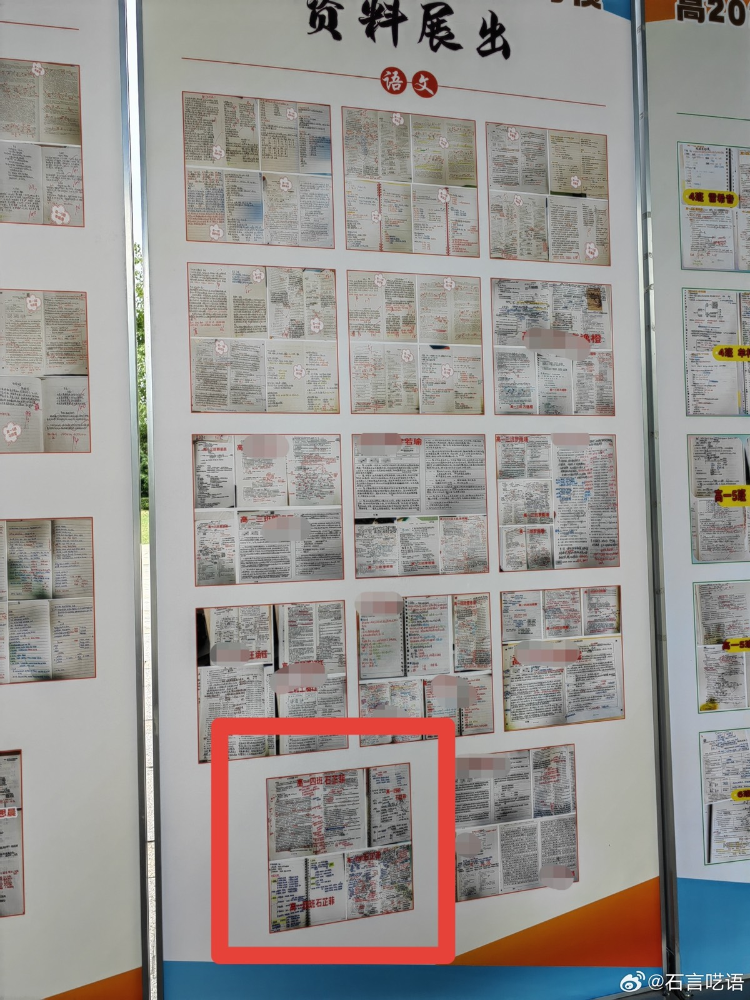
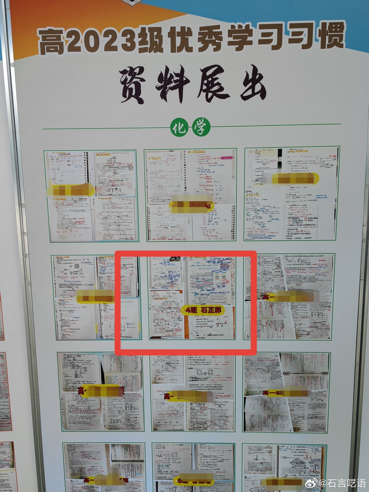
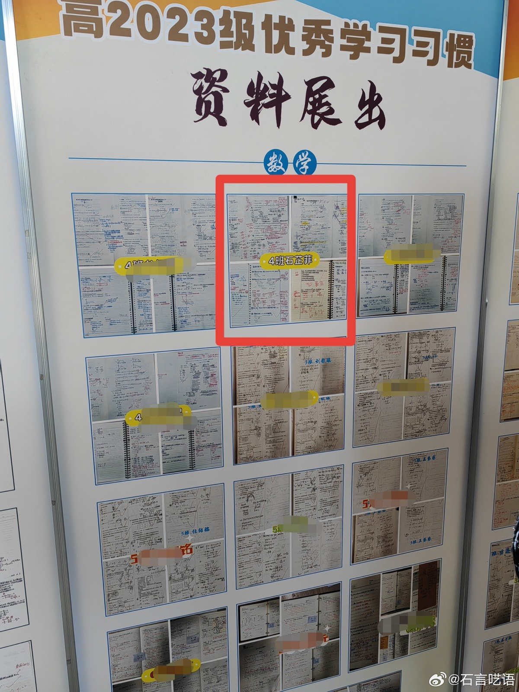
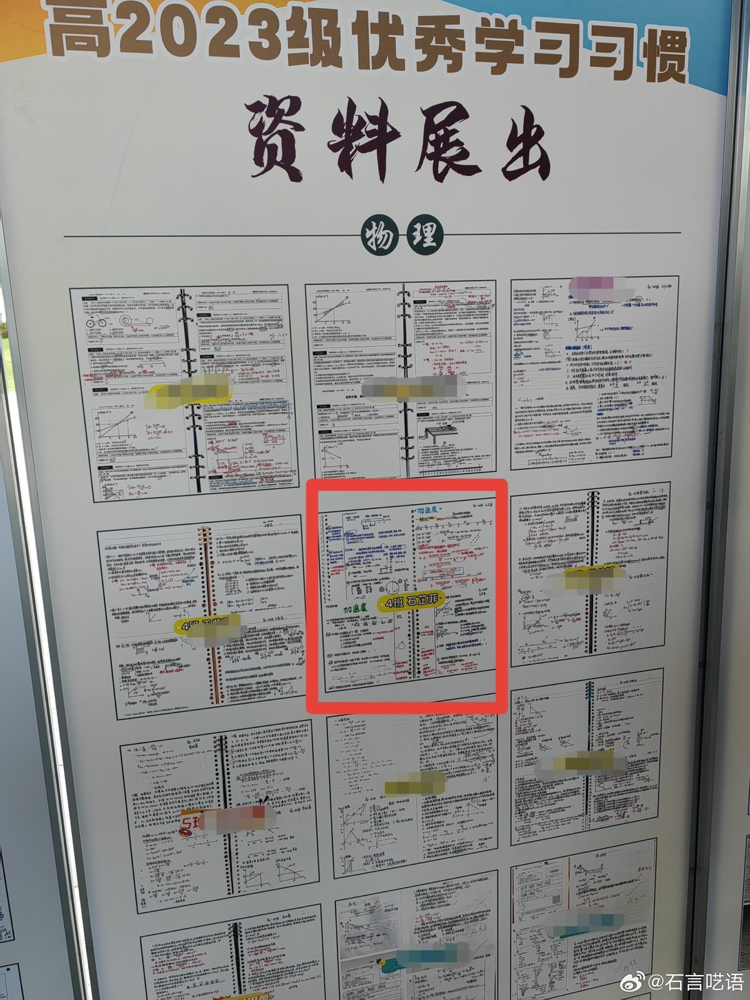
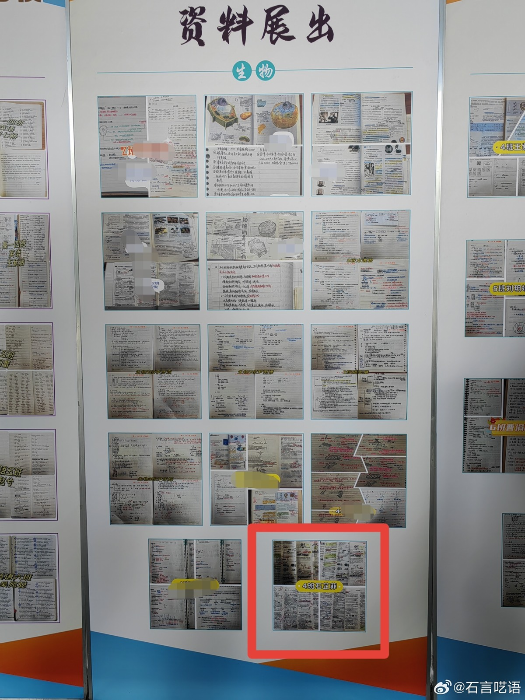
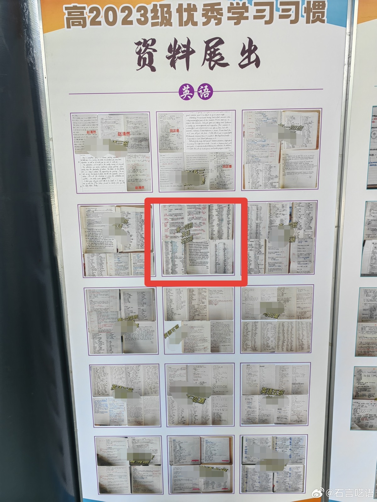
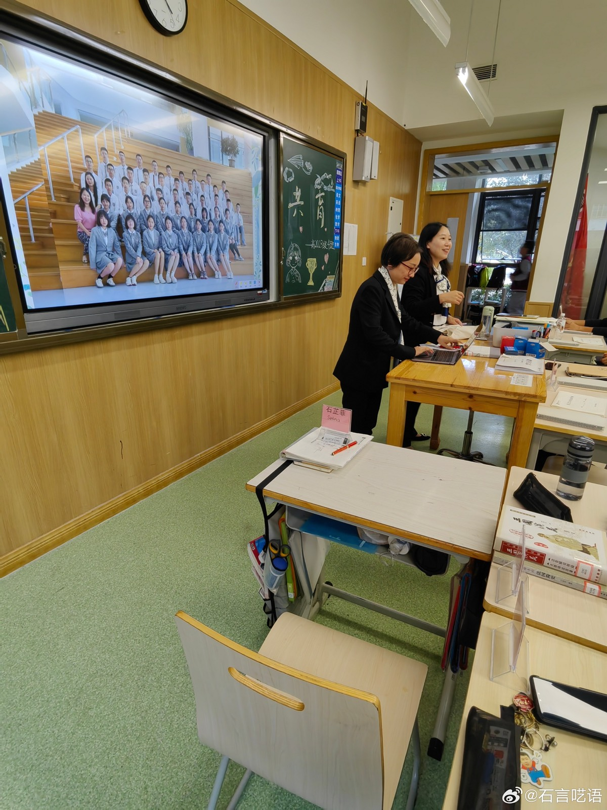
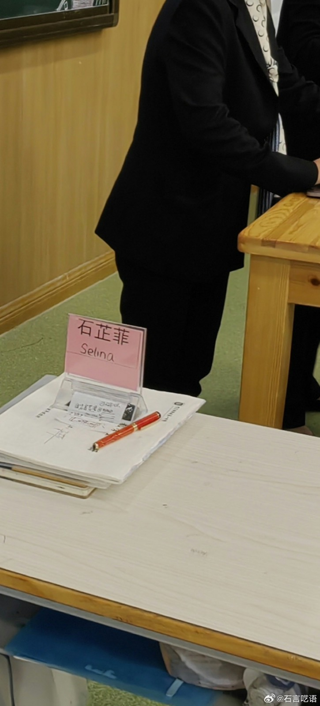
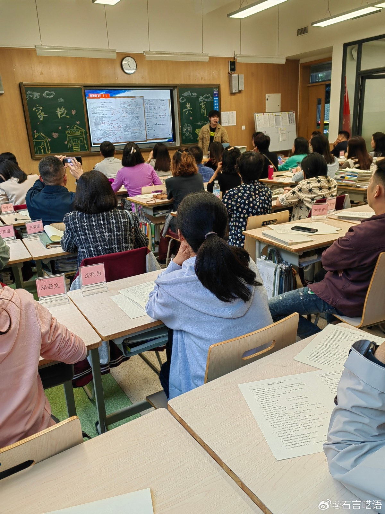
015 2023-10-14 08:31 @石言呓语 成绩与考试 学习方法 亲子沟通 补课与培训 兴趣与社团
今天多说几句关于高中生学习的事。
晚上放学特别堵车，从学校到家开了两个多小时。上车波妞问我：“爸爸，这几天有没有国际国内大事？”我用我的三脚猫知识，花了一个小时给她介绍了一下中东战争和巴以冲突，以及他们的历史关系。
讲完中东开始讨论语文的阅读理解，这是现代高中语文的重点，高考占了一半的分数。现在她的困惑是要读的课外书太多，根本看不过来，很多书都还没翻过一页。我说广撒网也不行，要不侧重一点学习和理解毛爷爷的诗词吧。能够反复的把他的诗词读透，甚至每首诗的来龙去脉搞清楚，可能你的中学语文也就融会贯通了。
顺着这条线，我们就畅聊了高一学习。我说你明天应该录个视频，给大家分享一下自己怎么暂时取得好成绩的，给弟弟妹妹们传经送宝。
她想了一下说：“我特别感谢老师把这个重点位置给了我，离每个老师都特别近，自己也不敢走神了。而且，我给你讲，现在我热爱每一个学科和每一位老师，你相信我肯定会越来越好。”
那倒是，兴趣才是人最好的动力，连鞭子都不需要扬马儿就奋蹄直追了。现在高中生的学习，我们作为父母辅导已经不现实了，但我们比他们懂更多的方法，尤其是工作的方法套用在学习上。这样，作为父女我们才在一个平面上沟通，而不仅是“你要好好学，你要努力，你不准偷懒”空洞的表达。
#波妞的高考#
016 2023-10-16 21:24 @石言呓语 成绩与考试 志愿与升学 兴趣与社团
我家娃儿是2011年就开了微博，当时她3岁。最初的目的，是希望她通过微博来锻炼自己的社交能力和写作能力，不会打字的时候就是她念我们写，或者把她的事情记录下来，到了小学以后才开始交给她自己打理。
微博也带给她一些困惑，比如老师、同学包括一些家长都会认出她，昨天还有同学在公众场合宣布：“同学们，@石子菲菲 更新视频啦！”她说这太社死了。我说社交工具就是双刃剑，要承担流量带来的痛苦，不过可以把你锻炼成社牛，迟早你也能坦然面对这种事情，甚至还会在公众场合介绍自己的社交工具。
目前，我是建议她利用咸鱼时间分享一些自己的学习方法和心得，把微博当作档案管理器，既锻炼自己又方便成年以后再回头笑着来看。这一点，我跟梁师的认识是一样的。昨晚半夜回家路上，她把自己微博打开，然后给我看：“哇你看，这是我有史以来最高的排名了。”
成绩不够，社交来凑，她这十多年的微博运用没有白学，说不定以后读大学的时候，微博还能用呢。。。
#波妞的高考#
017 2023-10-21 12:57 @石言呓语
哈哈哈哈哈哈忍了半天没敢说波妞今天校运会800米决赛，直到刚刚…… 她说要带这个话题才行#波妞的高考#
018 2023-10-25 13:59 @石言呓语 心态与情绪 亲子沟通
昨晚波妞回家连夜做的PPT，连累我一起陪练的就是这个作业，因为她今天要给全班同学演讲如何把课余时间丰富起来，就选了这个题材。
现在已经有很多悄悄关注她的同学和家长，她说自己压力大的很，蹲个坑都有同学认出来。
我说你这是脸皮不够厚，还不能坦然面对，所以还是要多分享自己的社交媒体经验，把自己磨成一个敢于公布社交账号的社牛。
作为一个企业管理者，我的感受是：从来不缺埋头做事的员工，最缺的都是能说自己想法的员工，过于内敛不太适合当下。
祝她今天演讲成功，最好又一不留神去全校巡讲。
#波妞的高考#
019 2023-10-30 08:49 @石言呓语 手机与游戏 亲子沟通 志愿与升学 兴趣与社团
今天回学校路上，@石子菲菲 给我分享一个她觉得很炸裂的事情。
我趁她在学校看不到手机又给她公布了……
她说和闺蜜煲电话的时候，闺蜜说班上有个男生说经常听说石子菲菲，因为他的好哥们儿暗恋了几年。
然后波妞说：“你知道吗？这是我第一次听说被人暗恋。”
我说：“那我恭喜你哦。”
她接着说：“以我在初中时全班最邋遢女生的形象，居然也有人暗恋。”
我说：“那小伙子不容易。”
然后她说：“更炸裂的是，暗恋我的人给他朋友说了一下暗恋我的原因，主要是我每次下课冲到食堂最快，抢饭也厉害。每次男生进食堂，都看到石子菲菲已经要吃完了。”
我说：“这个男同学家里可能是开食堂的，所以他对邋遢的饭桶有一些天生好感。但是无论如何，第一次被人暗恋，我还是要恭喜你！”
这是第一次我们沟通现实生活中的暗恋问题，所以得记录一下。只要能跟青春期娃儿相互敞开心扉聊，都是好事。。总比不沟通，最后悄悄在外面谈恋爱好。希望她以后读大学了，还能跟我们沟通感情问题。
#波妞的高考#
020 2023-10-30 10:33 @梨子不言 择校与分班 亲子沟通
转。 从这个月开始，波妞开始领“工资”了。她提出每月200元，我表示反对并增加到每月500元。
说到生活费，她说自己也很为难，又没有办法赚钱，经常又需要买点东西，坐吃山空把过年钱都用光了。找我要钱的时候，还有点不好意思，说以后长大了一并还给我。我说你要还的话，可能数量有点大，从出生到工作大概要几百万哦。
我和她把每个月的开支拿出来按月分析了一下，发现进入初三下期以后确实开销猛增，尤其是网购这种无痛消费蹭蹭蹭就上去了。她表示一定会给自己记好账，免得超支。
一直以来，她都是一个比较节省的女生，吃穿都不讲究，只有在学习上使劲花钱，要不买书要不买笔，要不买学习工具。其实只要她提要求，我们都照单全收，统统都买。但同时也会要求她自己买东西的时候，一定要买正品，这涉及到尊重问题。比如书，她之前在拼夕夕买过一些小说和教辅，我一看就知道是假货，就会被我狠狠骂一顿：你不尊重别人的劳动，总有一天就会被反噬。
现在高中住校时间长，学校提供了周六的食堂加餐选项，我帮她选了“否”，原因就是我希望她能够自己给自己做一些生活上的选择，吃一点自己想吃的东西。昨天我问她对这个决定是否满意，她说“太感谢了，我可以出去吃自己想吃的美食了。”
他们长大了成为什么样的人，都是在跟父母的每一次交流中学习起来的，有样学样。不卑不亢，为人正派，不贪便宜，尊重他人，这是个基本盘。
#波妞的高考#
021 2023-10-30 17:10 @石言呓语 择校与分班 亲子沟通
从这个月开始，波妞开始领“工资”了。她提出每月200元，我表示反对并增加到每月500元。
说到生活费，她说自己也很为难，又没有办法赚钱，经常又需要买点东西，坐吃山空把过年钱都用光了。找我要钱的时候，还有点不好意思，说以后长大了一并还给我。我说你要还的话，可能数量有点大，从出生到工作大概要几百万哦。
我和她把每个月的开支拿出来按月分析了一下，发现进入初三下期以后确实开销猛增，尤其是网购这种无痛消费蹭蹭蹭就上去了。她表示一定会给自己记好账，免得超支。
一直以来，她都是一个比较节省的女生，吃穿都不讲究，只有在学习上使劲花钱，要不买书要不买笔，要不买学习工具。其实只要她提要求，我们都照单全收，统统都买。但同时也会要求她自己买东西的时候，一定要买正品，这涉及到尊重问题。比如书，她之前在拼夕夕买过一些小说和教辅，我一看就知道是假货，就会被我狠狠骂一顿：你不尊重别人的劳动，总有一天就会被反噬。
现在高中住校时间长，学校提供了周六的食堂加餐选项，我帮她选了“否”，原因就是我希望她能够自己给自己做一些生活上的选择，吃一点自己想吃的东西。昨天我问她对这个决定是否满意，她说“太感谢了，我可以出去吃自己想吃的美食了。”
他们长大了成为什么样的人，都是在跟父母的每一次交流中学习起来的，有样学样。不卑不亢，为人正派，不贪便宜，尊重他人，这是个基本盘。
#波妞的高考#
022 2023-11-10 00:35 @石言呓语 手机与游戏 健康与作息
昨晚波妞借老师的手机给我打电话，她说等她忙完回寝室的话就熄灯了，她主要是感谢我给她提供的学习方法特别有用。读书我是三脚猫，但是我把平时工作用的方法提供给了她。
因为每天时间有限，要学的东西又那么多，我说你不能不断减少自己的睡觉时间，要不就像我们工作一样，把工作分为“特急、急和一般”三个档次，按照权重来分配。每天早上起床的时候，先用五分钟规划一下。比如说，把最近最困惑的科目最高权重，占据中午的自习时间。把比较难的科目占据晚饭后的时间，一般的科目就在自习时间。
她就是这么执行的，她的执行力还是很强的。通过两周的操作，她说拉下的化学补上来了，也不会出现眉毛胡子一把抓每天忙得昏天黑地的情况。
这个就是统筹学的入门吧？高中生的学习，父母也提供不了太多书本知识帮助，就只有把生活经验传输点过去，像朋友一样的交流。
#波妞的高考#
023 2023-11-16 18:10 @石言呓语 成绩与考试 手机与游戏 亲子沟通
下面这张图，是波妞三年前初一上学期半期考试成绩，语数外都在中等甚至偏下水平。目前高一上学期半期考试以后，语数外已经在全班最前列了。
这次她本人的考试目标是进入全年级80名，我让她下降预期值到120名就够了，稳扎稳打低开高走已经很好了。实际的结果是年级前70名以内，昨晚上给我打电话的时候，抑制不住的得意。
波妞是大家云养出来的逆袭娃儿，成绩虽然一直不算出类拔萃，但确实刻苦又努力，目标坚定稳扎稳打，就连我自己看起来都觉得像一部奋斗爽剧，还在螺旋上升。
经验已经总结了很多次了，再说还是显得凡尔赛。小学五六年级天天偷偷打游戏成绩一塌糊涂的时候，我们作为父母一样是咆哮加棍棒，越是着急她还越是躺平。进了初中以后脱胎换骨奋发图强，我觉得主要还是感谢老师感谢学校给了她信心，把内驱力彻底激发了，家长能做的更多就是周末的陪伴和打气。
好学校和好老师，确实对小升初的娃儿太重要了（每个娃儿都要适合自己的学校，要根据性格和学习习惯来选择，并不是一个学校就适合所有娃儿）。
#波妞的高考#
024 2023-11-18 00:39 @石言呓语 成绩与考试 志愿与升学
2025年，四川高考执行3+1+2，这个不是什么新闻。。。不过对于我们来说就很重要了，因为波妞2026年高考，所以这就变成家长的必修课。
高考改革3+1+2的意思是“3”是指语文、数学、外语三门是作为高考的必考科目，高考原始成绩计入总分；“1”是指在考生需要在物理和历史中选择其中一门作为选考科目，即考生必须从物理和历史中选择一门，“2”是指从生物、化学、地理、政治中选择两门作为选考科目。
考生的文化总成绩由语文、数学、外语3门全国统一考试科目成绩和3门选择考科目成绩组成，总分为750分。其中，全国统一考试科目语文、数学、外语的分值均为150分，总分450分；选择考首选科目成绩以原始分呈现、再选科目成绩以等级转换分呈现，3门科目分值均为100分，总分300分。等级转换计分方法另行制定。
以目前波妞的成绩看，语数外还比较稳定的靠前，二选一里的物理和历史都还不错，但是剩下四选二里的生物、化学、地理、政治都有点拉后腿。。从新高考的招录情况看，绝大多数专业都要求物理和化学必须参加高考，也就是说她必须从“生物、地理、政治”中突击一科拉上去。
看嘛，高一上学期家长就已经在提前筹备了，哪儿还有等娃儿水到渠成的嘛。
下面这张图，是我随便截的一所大学2025年的招录情况，物理和化学是必须项。
#波妞的高考#
025 2023-11-23 16:19 @石言呓语 成绩与考试 学习方法 心态与情绪 亲子沟通
化学是波妞的弱项，波动很大，也花了很多时间。
按我和她商量的办法，一是错题本整理，二是投入咸鱼时间里的半数在化学上，即便如此她还是经常哭鼻子。。
目前关注我的朋友里有几位化学老师，给了很多中肯的指导意见，我觉得做不来高中化学的家长都可以共享一下：高中化学尤其注意两点，一是规律，二是特例。首先，基础知识必须掌握住，实验部分也是基础知识。其次，基础牢固了才能摸索到化学知识的规律。规律掌握了，大部分问题都迎刃而解。再次，才是特例。特例是一些不规律的知识点，老师授课上会重点提出，做好笔记。需要掌握的是特例是出自哪里？会导致什么结果？考试一般就在这些知识点出题，埋坑，考察学生是不是灵活掌握。
老师们说，高中化学无外乎这规律和特例这两个方面。（说起来是那么地简单。。。仿佛我都可以考💯了。）
不过，我觉得要娃儿成绩提高，肯定不是家长嘴巴随便不走心的说几句“你要好生读书哦！”“不努力只有拖架架车！！”那么简单。。。家长也要打起精神去了解他们学习中的痛苦和困难，用成年人的思想去帮助他们找到方向，共同进退。我给波妞说的是：“如果努力就有回报，这个世界的成功为啥那么少呢？所以你这次努力得到的是失败和痛哭，太正常不过了，下盘搞不好更惨。我那么努力也没发财，没事的啦！”
逆袭都是综合因素集合到一起的，光靠娃儿的内驱力是不够的。
#波妞的高考#
026 2023-11-29 21:28 @石言呓语
学姐开始巡回给初一的学弟学妹们演讲《学渣的奋斗》了，赢得了小同学们的广泛欢迎。。顺便还推广拉新了一下青少年如何正确使用微博锻炼自己的文笔，官方请打钱！#波妞的高考#
027 2023-12-06 13:23 @石言呓语 成绩与考试 学习方法 亲子沟通
我有一段时间没说波妞同学的高中生活了。
昨晚陪几个外地来的朋友考察成都商圈，来回两次经过波妞学校，他们问：这学校这么晚还灯火通明啊？我说是啊，初中高中的学生都还在挑灯夜战。结果我们不约而同的说现在的孩子可真惨，童年都献给晚自习了。
半期考试已经过了一段时间，我觉得她考得不错，她自己不是很满意。在考试前，我们制定了目标，我说从开学的年级120名前进一点点就行，毕竟前面都是超级学霸。而她自己期望的是到前60名。我的意见是何必把自己架那么高呢，日拱一卒就行了，不然容易把自己搞出精神病。
不是凡尔赛，不是凡尔赛，不是凡尔赛。
她目前的近期目标，我可不能说，这属于泄露秘密，因为老师和同学家长在我微博里可多了，但是我还是让她日拱一卒的奋斗。其实这些年波妞的努力，主要还是几个方向：一是自我觉醒和目标锁定，内驱力起来了。二是做学习归纳，每天都把各个科目的内容进行梳理。三是错题本，按科目按类别整理，时不时重新做一次（这个太重要了，因为人最容易在相同的地方摔跤）。
虽然但是，各个科目对她还有不同的困扰，化学、英语、语文都有一些还没攻克的难度。高中化学目前我们在各路大神的帮助下总结的变成了口诀：稳基础找规律背特例。英语和语文还是得靠时间积累，不然口语是听天书，语文作文也写不出来，不过现在缺的就是时间。
当下高中生的三年，就是家长一起熬的三年，熬过去就对了。。。
#波妞的高考#
028 2023-12-17 08:11 @石言呓语 成绩与考试 心态与情绪 亲子沟通 兴趣与社团
前两周的周考，波妞连续两科都考得非常差。她自己觉得考得得心应手，结果成绩出来都大跌眼镜，噩耗一个接一个。第一科没考好的时候给我说无所谓，第二科出来又很不理想电话里就开始哇哇哭。
我说家里没人怪你，你先不要着急，等我们回家的时候找原因。
昨天回来以后，我们就开了个分析会，有点像拳击运动员的回合休息时间，教练和运动员商量下一阶段打法。我给的建议是：这两科老师都还没讲解，试卷又都在手里，所以自己重新再做一遍，然后再看是不是学习出了问题。
经过两个小时的关门考试，重新核对发现只有一两道题错误，其余全对。也就是说，知识点的掌握没有问题，问题出在其他地方。于是就有了@石子菲菲 视频上讲的部分。
我看她现在又活蹦乱跳了，那就行了。高中作业，绝大多数家长像我一样已经不会做了，但是不能只张嘴说“你要努力，你要好好学习”，还是要花时间愿意跟她一起找原因，找到解决问题的方法。。她之所以从学渣进步，其实跟不停找解决方案是有关系的。
#波妞的高考#
029 2023-12-20 15:32 @石言呓语 成绩与考试
本来我们觉得波妞适合当文科生，结果她自己强烈要求学理科，说以后好找工作。经过两个月头悬梁锥刺股的学习后，昨晚喜滋滋给我打电话，说有个好消息今天我就知道了。刚刚收到学校推送的成绩通知，物理测试考了全校第一（暂时的），这催人奋进的消息不逼着我再努力干十年？
#波妞的高考#
030 2023-12-26 09:53 @石言呓语 择校与分班 亲子沟通
我嘴瓢，我再多说几句关于子女的思想沟通，这个可能也算爹味。
波妞从初一住校开始，我就提醒她跟校园里的每一位工作人员和睦相处，这也是个经常念叨的事，她也非常认真的在执行。不管是清洁工、厨房大妈和大叔，还是宿管阿姨和保安，她都处得非常熟，每次见面都会点头问好。
昨天我问了一下她，这几年成长中的感慨。她说感谢我让她学会与人为善，相互尊重也让校园生活里得到了很多帮助。中午没地方学习，有帮她找自习室的清洁大妈；第一个到食堂，有厨师和墩子大叔帮她打好饭；有些时候，在校园里还能和跟他们聊家常，她说经常还夸保洁和厨房阿姨精神饱满气质好，阿姨笑开了花。
我跟她开玩笑说：“每个平凡人都是你想不到的扫地僧，说不定校长的老母亲就隐藏在保洁大妈中，哪天回家就跟儿子表扬你是个讲礼貌的娃儿。”
现在我的微博里，有波妞的同学家长，有她的老师和同学，还有一些教育系统的领导，大家都默默看着。不管是公立还是私立，不管是收入高低，不管社会分工的不同，我觉得都得“与人为善”，尊重他人就是给自己的礼物。至于如何拒绝，那就是下一个我跟她沟通的话题了。#波妞的高考#
031 2024-01-14 09:34 @石言呓语 成绩与考试 学习方法 志愿与升学
今天中午去接波妞放学，本打算给她个惊喜，接她和闺蜜同学一起去吃披萨，结果遭了个闭门羹。她说：下周要全市统考期末考试了，下午想继续安心复习一下，就暂时不跟你们见面了。因为学校都走空了，就可以继续在教室安静复习。于是，在她的感召下，我和她妈分别回各自单位开始加班，内卷就是这样形成的。
过去，我们对她能考上大学都保持怀疑态度，能考985更是天方夜谭。但是从目前的玩命程度看，我又有点杞人忧天她能力超标突破到C9天团。关于她最重要的一点，就是内驱力怎么来的，我也说了很多次：对未来有规划，对自己每一步的目标很坚定，这也是需要娃儿和家长共同去完成的。要是等她自己觉醒，或者在咆哮中觉醒，太难了。
先预祝她在下周的全市高一统考中，努力得到应有的回报。也祝我在下周的五天特种兵行程顺利。
#波妞的高考#
032 2024-01-17 10:01 @石言呓语 成绩与考试 学习方法
昨晚跟波妞打电话说今天开始的高一统考，这是她第一次参加全市排名考试，一共九个科目三天时间。要通过所有学科的期末考试，便于每个学生的文理分科。知识都是日常累积，这个时候对于成绩提升已经帮不上什么忙了。
我问：“你紧张不？”她说：“我是躺平派，你放心吧。”
我问：“考试口诀还记得不？”她说“一看二慢三通过，30秒内完成试卷检索，分配答题时间，你放心！”
最后我说：“记得考完一科放下一科，不要再眷恋了。复习只看错题集和思维导图，就够了。”
对于第一次全市高一统考，我比她还紧张，因为这个成绩对于未来几年的计划和战术，都有非常重要的影响。
以前我们读书的时候都是自生自灭，现在娃儿读书就像拳击比赛，他们是拳击手，我们是旁边干着急的教练，助理和队医。
#波妞的高考#
033 2024-01-22 07:08 @石言呓语 成绩与考试
今天送波妞回学校，我俩提前了几个小时，除了我们要谈一下文理选科，还要带她去学一下商业选址。
我们全家达成了共识是选理科，在物化生和物化地之间我们更倾向于后者。今天我们两个在车上达成的一致就是买定离手，遭了背时不怨别人，她表示非常同意。至于为什么要选地理，这个之前我说过，除了她地理成绩目前比较拔尖，更重要的是新高考赋分制度，我们认为地理比较有利。
还有高中生家长不知道什么是赋分吗？那你要反思自己称不称职了。
然后我带她去看了成都南门的一些商圈，入住率还很低。我说：“如果要布局商业，现在就要选位置，眼光要长远。选什么业态，再挑适合的口岸。最后，好的生意不要只看眼前，还得看生意背后的生意。”她以前跟着我看过一些基础的商业选址知识，只不过高中生现在理解要透彻一些了。
她说：“光是看这些没人的地方，我以为赚不到软妹币。也就是说，需要有先亏后赚的决心，才能拿到好位置。”
实际上一次两次让学生跟着看是没什么用的，经常看就不一样了，胜读十年书。
#日常分享##波妞的高考#
034 2024-01-31 08:14 @石言呓语 成绩与考试 兴趣与社团
高一的文理分科已经尘埃落定了。在民主而友好的氛围中，我家@石子菲菲 同学坚定的选了一条另类道路，物化地。
下面这张表，是按照新高考的十二种组合方式中她在班级的排名，史政生（历史政治生物）全班第一名，妥妥的文科生。一般来说，选择自己的优势科目是对的。但我们全家讨论了很久，最终从她自己的职业兴趣方向做出了选择，做一个理科生。
不少老师都觉得很惋惜，我们非常真诚的表示，愿赌服输。
在选择了理科以后，还有很多个选择，主要是物化生和物化地。如果是物化生，波妞在班级第七。如果是物化地，波妞在班级排第六。但以上两个成绩不是我们判断的重点。
我们的依据主要还是参考新高考赋分制度，生物和地理这两科的排名预估。选择生物的理科生数量远远高于选择地理的理科生，所以在赋分上的优势会更明显一些，未来在高考的时候略有优势。
图二和图三是新高考赋分制度的计分方式，有点点复杂。大概就是单科全省考生拉通排名，第一名为100分，最后一名30分（交白卷都有30分）。
最终选择物化地的同学很少，对于波妞来说未来可能会有一种全新的学习模式，叫“走班”，数理化在大班上课，地理在小班上课。我问她做好准备没有，她说挺好的，又有一种崭新的生活体验。
最后，祝所有家长和同学们都选到适合自己的分科，在接下来的学习中奋勇争先不断进步。
#波妞的高考#
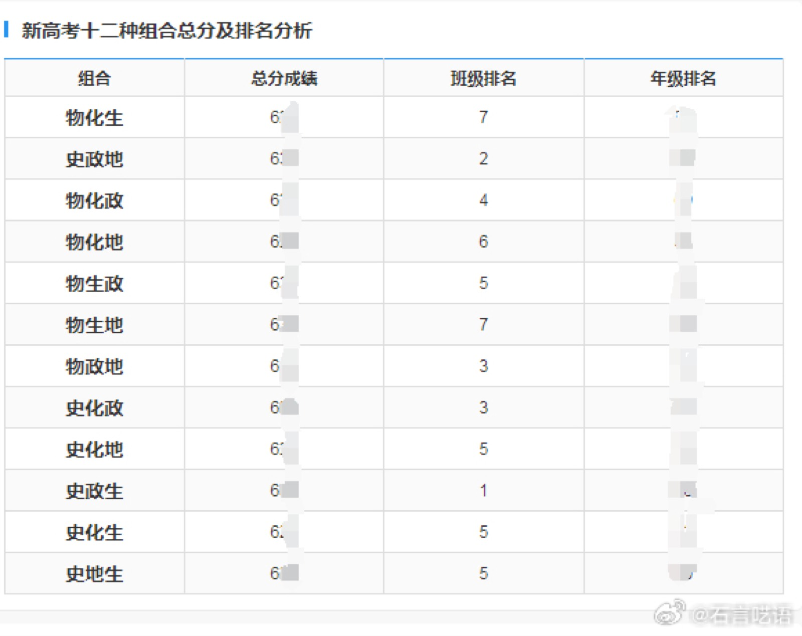
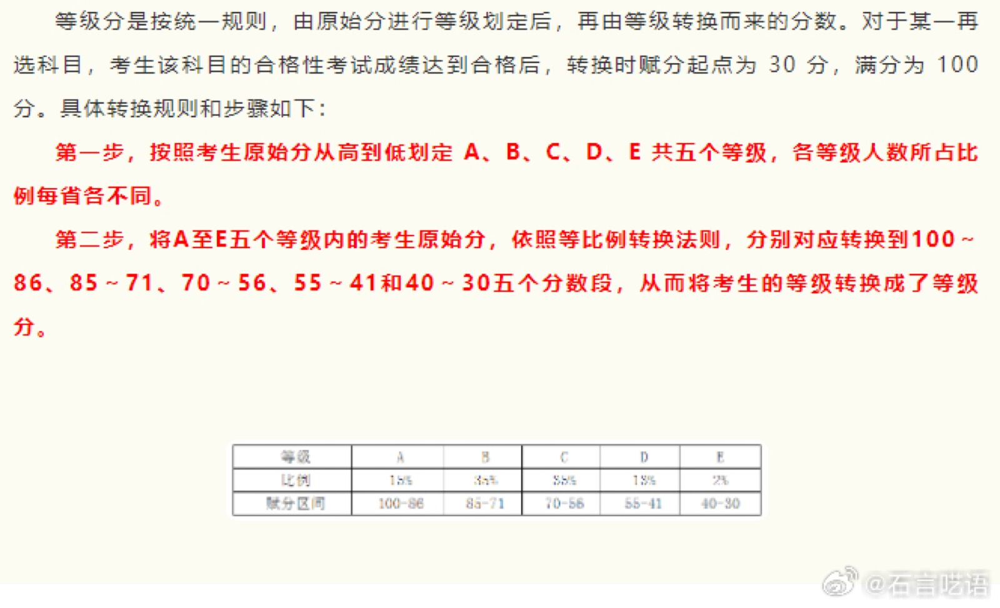
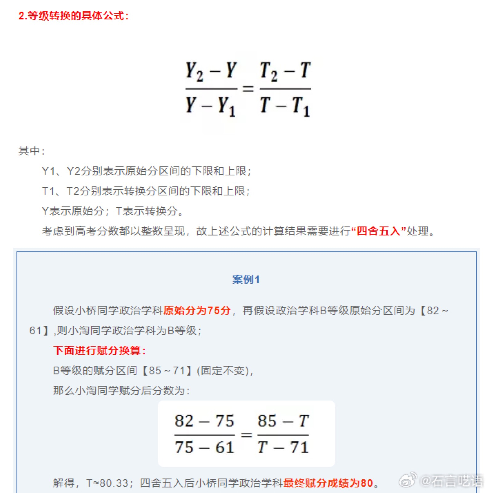
035 2024-02-02 15:12 @石言呓语 心态与情绪 亲子沟通 志愿与升学
高中生早恋问题，这个也是我们家里经常会谈到的。本着实事求是的态度，我和波妞会开诚布公地讨论恋爱观，一般我们都是在来回学校的车上聊，这个场景特别适合聊感情八卦。
我问她：“现在高中学习压力那么大，还有没有同学偷偷谈恋爱呢？”她说：“怎么可能没有呢？相比初中还更多了。”
我问：“那有人给你表白没？”她说绝对没有，我表示非常遗憾。然后我再问：“你有没有比较喜欢的男生呢？”她表示：“曾经有很敬佩的男学神，但是不算喜欢。”我表示没有喜欢过别人也有点遗憾。
最后我再问：“你怎么看待高中生谈恋爱呢？”她说太影响学习了，但是不妨碍自己也参与八卦人家的爱来爱去。我跟她的总结是：高中生有喜欢的异性很正常，不过要是陷入感情里面就会此消彼长，学习严重受损。理论上说，同学之间的爱情可以转化为相互鼓励学习的动能，但这基本是扯淡。最好的方法是不开始就没有结束，一旦有人表白就明确告诉人家，现在不提这些事，等到考上了大学再说。
拒绝也是一门艺术，完全抗拒会影响自己未来的恋爱观，完全接受就严重拉垮学习，粗暴拒绝又可能给自己带来不可预见的伤害（这个因爱生恨造成伤害我见得要多一些）。
总的来说，子女全靠家长耐心沟通，愿意放下自己的事情，把他们的事装在心上，像朋友一样交往。不然青春期就只有争吵和猜疑，以及相互的不信任。
#波妞的高考#
036 2024-02-02 23:49 @石言呓语 择校与分班 成绩与考试 健康与作息 兴趣与社团
今天波妞迎来了她的高光时刻，被邀请进入学校的火箭班，全是以前她仰望的超级学霸。我们做出了一个深思熟虑的选择，跟她本人意见一致，那就是：不去。邀请进入火箭班是因为高一上学期所有考试成绩，按照权重累积后的综合排名。总的来说，这是对她努力的肯定，但是我们主动放弃了。
原因很简单，我们不希望她过于辛苦了，也没有指望过她未来考入C9天团。她自己也判断自己的能力，在火箭班也会非常吃力，只有幺鸭子的命。所以，我们决定不如快乐一点，高高兴兴度过高中剩下的两年半学习生活。让她按照自己的节奏从容安排。
反正每一次重大选择，我们都走了一条比较另类的路，重点是希望她快乐健康成长，多留点时间接触学习以外的事情（学生会工作，班干部工作，甚至个人微博打理都算）。还有两年半，就能看到我们的选择是不是对她最合适的。
#波妞的高考#
037 2024-02-26 13:36 @石言呓语 择校与分班 成绩与考试
今天是波妞高一新学期上课的第一天，她从过去的班上被调换到了新的班级，全校选择了“物化地”的不足20名同学都在这个班上。本来她是可以升级到火箭班，但我们全家表示就留平行班。
这20来个同学，各种各样的原因放弃了物化生，选择了物化地，也就是把生物换成地理。从成绩上看，波妞如果选这两个组合选项成绩都差不多，生物和地理的成绩表现也差不多，最终我们还是从新高考赋分制去考虑的选科。
10000个学生去考生物，包含了全省的绝大多数学霸，根据排位来决定分数，很大几率只有80分。1000个学生去考地理，大部分理科学霸没选地理，也是根据排位来决定分数，很大几率有90分。这就是我们用的“田忌赛马”思路。
没有什么绝对的正确选择，只有以结果论了。。就目前来看，她个人希望本科不出川，那就这样吧。期待这位卷王同学本学期的捷报。
#波妞的高考#
038 2024-03-01 12:27 @石言呓语 学习方法
帮波妞记录一下。原本我给她一个小小的目标，在高三毕业的时候，个人微博运营能够有一些进步。现在提前两年半实现了，其中橙色的V代表一个月的个人微博阅读量在百万以上。我坚持我的观点：不仅做一个社交平台的旁观者，要做持续不断有益内容贡献者。#波妞的高考#
039 2024-03-04 16:32 @石言呓语 成绩与考试 亲子沟通 兴趣与社团
昨天我问了班长同学，人生第一次当一把手的感受是什么？她说：“同学们见到我就大喊班长好班长好，尴尬得很。我们班是和尚班，男生太难管了，一下课就全跑没了，不到打铃是不回教室，所以总是迟到。我又拿不下脸吼人，你说怎么办嘛？”
我反问：“班长是个费力不讨好的服务岗位，你现在喊得出他们的名字吗？”她说不能，大多还不认识。而且自己的理科成绩不如男生，觉得他们不会听班长的话。
然后我给她分享了中学自己当班干部和学生会干部的经验，给的建议是：“先得认识每一个人，不管你是不是社恐都得跟每个人有交流。班长眼中没有关系好和关系差的同学，一碗水端平。然后才是了解他们，多和大家聊天，人家喜欢什么聊什么。。这才有听你招呼的可能性。”
只要班长屁股没歪，自己坐得正，方法就比困难多。高中生当班干部确实影响学习，无端端增加了很多工作，但对未来走进社会是有帮助的。另外，青春期娃儿还是得靠像朋友一样的交流，按他们喜欢的方式来沟通。。比如波妞说要喝奶茶，我就顺势给自己也点了一杯，一边喝一边聊，大家都快乐了。。
#波妞的高考#
040 2024-03-27 20:41 @石言呓语 成绩与考试 手机与游戏 兴趣与社团
给各位波妞的野生阿姨姐姐叔叔哥哥汇报一下她新学期的学习情况。
首先是把高考科目选为“物化地”，放弃了最有优势的史政生，就成为了理科生里的文科生。我们最担心的是，换了这几个科目后成绩是不是会大幅度下滑。经过这一个月的学习，目前从月考来看还行。
除了化学有点掉链子位于班上十多名，其他学科都在前十里（这个比我高中强多了，佩服！）每天依然头悬梁锥刺股的学习，被宿管老师誉为天不亮出门半夜不回寝室的卷神（我也很佩服）。如果综合成绩，我估计暂时能在前五。
在学习之余，她既要当好班长，还要当好学生会主席的马仔。这两个工作，目前觉得有点影响学习，但是能够坚持也很有兴趣。这一块我们也很支持她，继续在学习之余做好学校和班级服务。
生活上，手机完全独立管理，也不会玩游戏了。她自己的表述是已经可以自己控制自己的手，高中毕业前不会玩游戏了。手机更多是用来看微博看小RED书，以及学习用的一些APP平台。邋遢呢是继续邋遢，她说如果她不邋遢了就是早恋了。
最后，波妞同学的职业规划，依然是按照我们给她建议的在坚持，首先成为一个工科生掌握一门核心技术，再看个人性格能不能换到市场领域。这一点，她目前没有反驳我们。好了，马上要综合考试了，等她成绩排名出来，我再来给各位云养老辈子汇报。。
#波妞的高考#
041 2024-04-12 13:51 @石言呓语 择校与分班 成绩与考试 学习方法 亲子沟通 兴趣与社团
我尽量用显得不是凡尔赛的语气，来给波妞的野生亲戚长辈们汇报一下她的学习。有些新来的朋友，我就简单介绍一下她的成长。
刚刚结束的月考，是按照新高考政策高中分科以来的第一次综合月考，新高考不再是文理两科，而是纯文纯理，文偏理，理偏文的四类12个选项，对于学生和家长来说都很重要。。波妞在我们的指导下选择了“物化地”，就是除了语数外还有物理化学地理作为高考科目。所以，我们都很关注选择方向带来的这次考试结果。
结果就是全校“物化地”这个类别月考第一，综合成绩在全班第一，年级25名。有个参考数据是波妞学校去年高考的一本率是96.5%，考上985的同学大概是前60名。
这不是一个很顶尖的成绩，但是对我来说是很牛逼了，因为我从幼儿园到参加工作为止就没当过任何一次第一名，包括生理卫生和劳动课。但是对波妞而言，她更牛逼的还是这3年多的逆袭史。从初中进校的全年级599名（一共650人），到初三毕业的第150名直升到本校高中，再到目分科后的25名，简单的排名上上升了570多名。复杂来说还不止，因为高中还有来自其他学校的拔尖同学。
总之，她在我们家已经成为了大家的榜样。
下面这一段，希望各位家长不要再问我：她是怎么办到的？因为我已经说过很多很多次了。。一来是好的老师不抛弃不放弃学渣，这一点是万分感谢波妞初中的启蒙老师，对于逆袭他们起到了巨大作用，甚至24小时电话给学生解惑。二来是波妞本人的觉醒，尤其是在老师的帮助下，她快速提升看到了希望，不当咸鱼。三是用对了方法，她的方法就是“错题整理和复习思维导图”，每一科都做错题整理本再反复做，日常复习就靠自己画思维导图。最后一点就是家长配合，不能她吃苦我吃糖，她吃馒头我吃肉，反正挨打都在一起，陪伴就算是最大的支持。
有的家长自己天天在外面喝酒打麻将，你还要指望娃儿学习努力，那是不现实的。
最后，波妞从初中开始，我就让她坚持竞聘班干部，到了高中竞聘班长，目前看起来同学关系融洽，服务同学搞得还算有声有色，晚自习也能镇住堂子了。时不时会来请教我，怎么把刺头管理好，我就把过去公安经验告诉她，举一反三都差不多。总之，刺头也不刺了。
好了，汇报完毕，各位看她长大的野生长辈可以好生工作了。长路漫漫，一路荆棘，只争朝夕。我没有凡尔赛的意思，如果有，那是我确实也没办法更低调了。
#波妞的高考#
042 2024-04-24 15:59 @石言呓语 手机与游戏
波妞进步最大的是英语，进初中的时候全部垫底，高一能在全班排最前面。 因为各个区各个小学对于英语这门课的教学尺度都不统一，所以进了初中水平千差万别，很不幸她所在的小学就是英语垫底水平的（青羊区和锦江区的小学对于英语抓得比较紧）。
今早送波妞去学校的路上，她又把买的那个百词斩电子辞典摸出来开始背单词。
我问她到底好用不？
她说：“非常好用，不仅能轻松背单词还能把相关词语都一并学习了，每掌握一个就能像消消乐一样把她消掉”。。
当然，我在旁边开车听着也是一件很枯燥的事，这可不是我能干的事情。
她补充说：“安逸得很，很小众的学习工具，学校里都没人用，就像打游戏一样的学习。”
能够在学习工具的使用中自得其乐也是本事，这让我想起上次我举的例：青龙偃月刀砍人再好使，也得配抬得动它的人。这个百词斩，也得配喜欢琢磨和学习的娃儿，强迫使用的纯属浪费钱。
#波妞的高考#
043 2024-04-30 08:27 @石言呓语 成绩与考试 学习方法 亲子沟通
昨晚班长上了车，眼眶就是红的，然后说自己数学和物理的周考都没考好。我说那有什么了不起，起起落落才叫人生，常胜将军也会马失前蹄。
然后，她就念叨自己一直认真做错题搞总结，没想到还是错了那么多。我说最好的应对方法还是得主动出击，每个老师都去拜访下，问问他们觉得你错的原因，这样最容易有的放矢，这一点上父母说的都不算。
再然后，她就说班长要是成绩下滑那么快，就没脸守晚自习镇住堂子了。我的回答是：成绩好不好跟同学们听不听招呼两回事，最简单的例子就是抗美援朝。装备那么差也能打得他们满地爬，对不？
最后，我们达成的一致是解题思路就像王守仁悟道，题还是那些题，但是怎么才能突然开窍实现举一反三，还是得在不放弃的学习中寻找。这个对于天赋不高的娃儿来说确实很难，就像我们天天搬砖也没悟出暴富的密码。
虽然尽量的给班长减轻包袱，但实际上我也在帮她抠脑壳：进入高一下期以后，文科的语文英语地理历史成绩都在上升，数理化波动很大，而她又是选的理科。我的想法还是先让她把包袱卸下来，然后跟各科老师沟通下她的成绩下滑原因，对症下药。
总之，了解娃儿的内心，跟她一起接受风吹雨打，大家像朋友一样的相处，帮她找破局思路，而对成绩的起伏一句重话都没有，确实感情会好得多，相信未来也会种花得花。
#波妞的高考#
044 2024-05-16 09:52 @石言呓语 择校与分班 成绩与考试
这两天波妞正在半期考试。虽然说的要平常心，但我看她还是比较紧张，生怕自己考砸了。
接她路上，她说：“你还记得上学期按名次补录进火箭班的同学们不？他们大部分都回原来班上了，跟不上火箭班节奏。还有两个同学去了，现在摆烂幺鸭子，这样太影响学习了。当初，你咋会那么有先见之明没让我去的？”
我说知女莫过父，你的水平我当然知道。像你这种苦力型选手，与其去备受煎熬不如学得舒服点，反正在哪儿都是吭哧吭哧搬砖。
当初老师也反复提醒，不要错过这次升级火箭班的机会。但是做鸡头还是当凤尾，家长对娃的判断会更准确一些。
#波妞的高考#
045 2024-05-17 08:44 @石言呓语 成绩与考试 心态与情绪 亲子沟通
昨晚上班长还没上车，我看她眼睛就红着，心想看样子考试不理想，得认真开导一下才行，不然容易把自己憋出毛病。
果然，她上来就嘟囔没发挥好，这次半期肯定考不到600分以上。我劝她差不多就行了，人生本来就是起起伏伏伏伏伏，这才开始呢！
沉默了两分钟，她转头问我：“现在吧唧太火了，你说要不要跟我一起暑假的时候搞点吧唧赚钱？”
这娃儿应该不容易抑郁。
#波妞的高考#
046 2024-05-18 09:08 @石言呓语 成绩与考试 亲子沟通
班长牛逼，半期考试砸了都是第二名！现在借我开导她的“人生总是起起伏伏伏伏伏”开导其他考砸同学去了。
#波妞的高考#
047 2024-05-21 23:33 @石言呓语 健康与作息
今天班长同学给我说起晚自习的班级秩序，潸然泪下。课堂上闹哄哄，简直喊不听，不仅不听还有人反复对着干，自己一片好心被辜负，嘤嘤嘤，嘤嘤嘤……
我给了班长一个大大的拥抱，当班长确实不容易，尤其是自己还要学习分心，我问她觉得值不值？她嘤嘤嘤说还是值得。
然后，我给班长说：以前我教你的方法，不能一直用，那就变成狼来了。这事先得跟班主任汇报情况，看他的态度，不然就是皇帝不急太监急。其次，你得有一群愿意安静学习的同盟，他们愿意在危机时刻站出来挺你。第三，需要有一些手段，既要敲打也要鼓励，比如吧啦吧啦吧啦。
班长止住了眼泪，去认真思考我说的去了。到现在我依然认为当班长对学生来说是好事，提前感受团队管理的不容易，也给未来的人生上个学前班。读书只是人生的一小部分，还有一大部分是跟人打交道。
最后我说，如果你汇报了以后老师不在乎，仍然是“接着奏乐接着舞”，那就去他娘的，辞官不干了。
班长笑嘻了就去睡觉了。
#波妞的高考#
048 2024-05-23 20:47 @石言呓语 择校与分班
班长问了我几个灵魂问题，起因是我问学校有没有校花校草？
她说有，不过都在国际部。
然后，我们就展开了讨论。
班长说：“国际部的同学，很多都看起来青春靓丽。我们要参加高考的就不同了，个个看起来都是披头散发。”
我问：“不是都一样穿校服吗？？”
她说：“一看气质就看出来了。而且国际部的男生鞋子更好，女同学有化淡妆还有大波浪发型的。他们走路都比我们从容。”
接着，班长提问了：“你不是说努力奋斗才有明媚未来么？那你看国际部的同学这么舒服就出国留学了，以后他们回来就是留学生，还是有好工作，那我们为啥子要多苦几年呢？”
这个回答就比较深奥了，几句话说不清楚，总之先学会挨打的人，以后被人揍的时候就感觉不到那么痛。
基本上我就这么解释的。
#波妞的高考#
049 2024-07-05 21:09 @石言呓语 成绩与考试 学习方法 健康与作息
形成了自驱力以后的班长，今早让我震惊了一下。
昨晚十点半回到家，吃了点东西休息了一下，睡觉就12点了。今早6点半我去喊她起床，敲开门她已经在学习了，说六点就起来试验一种新的语文阅读理解战法。具体的说，就是现在的语文考试阅读理解部分，占用了很多时间在读全文，她觉得可以优化一下。
于是，昨晚睡觉前她把在小红薯上找到的学霸讲解消化了一下，今早就起来试验。结果很高兴，说五分钟做完了一套卷子而且全对，今天还要去学校接着试验。班长说现在的作业空前的多，每个老师每天都有一套卷子，她必须做完。
我的态度是能做多少做多少，做不完拉倒。我问其他同学做不完会怎么样嘛？她说大家为了完成作业只有相互抄了。
确实没有炫耀的意思，如果有那一定是你理解错了。自驱力的培养确实很花功夫，又没有统一的模板，但是形成以后基本上就不用操心了。最后我非常赞同班长用技术提升来解决困难的思路，本意是“阅读理解”的题，也可以换成“先理解题，再针对阅读文章段落”的应试技巧。
#波妞的高考#
050 2024-07-08 15:58 @石言呓语 成绩与考试 学习方法
今天波妞是高一期末考试，说叫五区联考，全市高手都上了。从昨晚开始就惶惶不可终日，今天早上送她去学校路上都还在背作文结构和技巧。。。我一边开车一边给她解压：一是作文全靠日常积累，考前突击背诵技巧有什么用？二是不是应该我这种差生心里慌吗，为啥成绩暂时领先的也那么慌？
我给的建议是先喝瓶红牛压压惊，然后跟她讨论一下实时新闻，最后强调一下考试的方法：不要一根筋啃难题，2分钟没有思路就赶紧在草稿纸上标记，然后换下一道题；阅读理解题就按目前总结的方法，先读题再针对性原文里找答案；留出来的时间都给作文，毕竟是60分，多一分算一分。
以前的家长，一般都是说“你要努力哈！”、“你要好好学哈！”、“不要紧张哈！”，都是正确的废话。。。但我觉得作为成年人，多少可以给一些双方有共鸣的现实技巧，这也算是以德服人嘛。
#波妞的高考#
051 2024-07-16 15:33 @石言呓语 亲子沟通 兴趣与社团
因为暑假了，我跟波妞的沟通就更多一些，每天都要讨论很多事情。比如，学校要求暑期社会实践，还要形成报告。这是一个从幼儿园开始就有的假期作业，一般都是随便搞搞就行了，有的学校还要求单位盖章（说实话，中小学生到单位实习真没啥用）。
今年暑假，波妞自己提出不想随便应付了，她打算以“自媒体博主”的身份，通过运营，最终形成自己的微博自媒体博主实践报告，我举双手赞成这个建议。
她要运营一段时间，才能知道在微博当自媒体博主，是不可能把自己养活得下去的，这条路是绝无可能成为未来就业方向。但运营自媒体也有好处，尽量早一点的学会：受得了热，也受得了冷，能淡然面对舆论的捧和摔，说白了就是磨个厚脸皮。
但是，开学的时候她应该可以交一个非常扎实的社会实践报告。
#波妞的高考#
052 2024-09-16 14:30 @石言呓语 心态与情绪 亲子沟通 兴趣与社团
今天我听了波妞和新的学生会负责人沟通学生会招新的对话，在车上不听也不行。电话那头也是一个女生，说话干练果断，思维敏捷而且情绪表达非常到位。不仅会不断鼓励波妞的表达，对于赞同的部分会用语气组词不断地加油打气，行云流水沟通完工作，最后还补充一句：“你的意见我已经记录下来了，再形成更优质的方案。”
整个学生会招新，在我们看来不是个大事，无非就是收简历分析简历和逐一面试，但对这些稚气未脱的娃儿，就是一个大项目，总之得无数次磨炼才能聚沙成塔。
等打完电话，我问波妞：“今年你还留在学生会不？”
她说：“你说的对，学生会确实让我得到了很大的提高，学到了很多课堂以外的事情，虽然有点浪费时间。今年我已经给新的负责人说了，继续当好她的助手。”
我说这个秋儿要当好，未来对你的人生会有很大帮助。
我依然坚持认为，学生在读书期间要多参加书本以外的公益活动，不管是班干部还是学生会工作，再或者社团和公益，都跟读书本身一样重要。不然以后读书了傻愣愣的要吃很多亏，还容易被人暗算，也没有任何管理和协调经验值。学校就是社会工作最好的新手村。
#波妞的高考#
053 2024-09-20 22:47 @石言呓语 成绩与考试 志愿与升学
波妞的数学破天荒的考了班上第一名，分数并不高，然后回家喜滋滋的说创造了历史，还去跟以前的老师们都报告了这个消息。刚进初中的时候，她作为数学幺鸭子的学生，老师是手把手的教，24小时全天候接受她的电话咨询。
所以，那些老师们也很替她高兴。
她回来给我们分享了以后，对她去跟过去老师们汇报成绩的做法是非常认可的，这是对老师的感谢，也是对她自己努力的肯定，对于未来成年以后，多去肯定别人也是有帮助的。这几年，成绩的提升，不断的分享成功和失败，她也从一个典型的I人，转变为一个比较有特点的E人。
还有不到两年，就要面临高考了，然后就飞出去读书了。得抓紧这段时间，让她形成稳定的风格和处事态度，对她自己未来也有巨大帮助。。。
哦，关于大学怎么谈恋爱，怎么注意卫生和安全的问题，我们也可以开诚布公的谈了，我的态度就是不想那么早当外公，不要给我添堵。[求饶]
#波妞的高考#
054 2024-10-10 07:50 @石言呓语 择校与分班 成绩与考试 学习方法 心态与情绪
我还是说点正能量的，我家波妞同学的日常。我没有凡尔赛的意思，如果你觉得是，那肯定是你误解了。
这两天是高二开学后第一次月考，火箭班平行班都要参加的全年级统考。按照过往的考试水平，波妞属于身处平行班但成绩能在火箭班中游。按照我们给她的建议，也不要去当升班马，就继续留在平行班里让自己压力小一点。
国庆大假期间，她按照一科一天的进度进行了复习，所以昨天考完以后春风得意，说自己很丝滑就考完了，没有出现马失前蹄的事故。如果今天不出意外，还是能跟上学期保持一样的成绩。对家长来说，她现在这种心理状况就非常让人舒适，不紧不慢不焦不躁，一切刚刚好。
今早我们出门特别早，因为想避开早高峰，到学校连七点钟都不到。我问她这么早去学校打算干什么？她说打算翻进图书馆里去学习。我说距离早自习只有40分钟，进图书馆有没有意义？她回答是40分钟已经是一堂课的时间了，可以把全天的各科都预习一遍，争分夺秒。
看着她下车，我默默感叹：“等她以后长大回头看的时候，一定会觉得自己中学六年是自己一辈子最努力刻苦的时代。”谁会在自己被社会浸染以后，还坚持每天天不亮就翻进图书馆里去凿光苦读啊。。
到了高二，作为家长已经没有什么教育经验可以分享了，她已经像一台自动高速运转的机器，按照自己设定的程序在隆隆向前。我们家长能做的，就是让她放下包袱轻松上阵。
#波妞的高考#
055 2024-10-27 18:03 @石言呓语 择校与分班 成绩与考试 学习方法 心态与情绪 亲子沟通 健康与作息
分享一个我的做法，坚持接娃上学放学，这个我坚持了四年多，还有一年多她就毕业了。可以不接，也可以让波妞住校，但是选择接送是为什么呢？这是每天我们不可多得的交流机会，要利用这点时间解决娃的现实困难。
昨晚上车后，波妞和我交流并没显示出什么情绪波动。我说：“我说你最近是不是有点焦虑？最近我知道你的化学和数学成绩波动很大。”
她“哇”就哭声了。“我真的很努力了，连走路都在看化学，可它就是起不来。”
我说：“要不我来帮你找一下原因，不能得了痔疮还使劲吃感冒药啊……”
然后她噗嗤就笑了。
我的思路还是发现问题，分析问题再解决问题。比如化学成绩下滑是表象，那就看失分的重点题型，再分类。同时，把考试系统的问题总结、老师的评价和自己归纳的原因摆到一起找共性，确定病因。
昨晚回家以后，我和她就按这个思路一起找原因，最后我们确定是“化学实验和探究”出了故障，此时已经十二点过了。
早上起床去学校路上，我们接着睡觉前的讨论，说解决方案：如何分配时间来解决问题。高二的自学时间非常有限，需要拆分零碎时间来完成，商量午间和晚自习的精力分配方案。。在有限的时间里，再按考试系统建议花一半的时间在强化练习，留给错题重做。
等到了学校门口，我们两个已经形成了化学提升方案，今天波妞做好了方案再发给我帮她把关。
以上，就是坚持每天接送娃儿的意义，让她们的情绪有疏散通道，让她们的困难找到解决方案，始终是娃儿的信任大山，而不是轻飘飘的一句“你要努力哦！”
#波妞的高考#
056 2024-11-11 09:07 @石言呓语 成绩与考试 心态与情绪 兴趣与社团
昨天朋友送了我一个手写的毛笔小楷冰箱贴，上面八个字“辞暮尔尔，烟火年年”。回家以后，我就把冰箱贴转赠给了波妞。送给她是因为半期考试成绩不太理想，有两三科都失利了，哭了两三盘。
该劝的，我和她妈都劝了几次。我说当年读书我要是有这么自觉，早就实现童年梦想成为航天员了。
我和波妞讨论了这八个字，到底表现了一种什么生活态度。最后让她自己理解这八个字的意思，再发一个视频微博，从这句话的解读，再到对自己半期考试进行总结。把心态放平和，总结复盘，归纳不足，再出发。
看起来效果挺好的，她今天已经自己总结了半期的得失，按每科失分的知识点分类，通过做视频的方式再自己加固。总之，已经平复了。
现在高中生确实苦，尤其对自己要求高的娃儿，很容易憋出毛病。。。家长也要费点心才行。#波妞的高考#
057 2024-11-19 20:24 @石言呓语 手机与游戏 心态与情绪 志愿与升学
上周我在外面开会的时候，有个参会的兄弟伙说要赶紧回家给娃儿弄点好吃的，他说：“初三压力最大，每天晚上都要作业做到凌晨3点过，给娃儿要补点。”我说现在中学生每个年级都说压力最大。我家波妞现在高二，每天凌晨5点半就起来读书，然后都只能勉强把作业做完，根本没有时间整理作业和归纳总结，总感觉自己天天都背负着沉重的债务，实际上就是年年压力创新高。
当代中学生，哪个年级不重要？个个年级都重要，再也不像我们这代人，除了最后一年的各个年级都在摸鱼，还要想着方法逃课出去耍。即便当代中学生卷成这样了，结果身边比自己更卷的人大有人在，水涨船高。我个人的预估，什么时候中学生不再卷呢？15年以后，也就是出生率最低的这几年娃儿读高中的时候。
有没有更好的办法来解决问题呢？我没有。我现在能做的，就是早晚接送，路上做一些心理减压，考好了不催，考差了不骂，松绑再松绑。还有500多天，就是波妞他们高考了，她在手机上做了一个倒计时，每天早上上学的时候就提醒又过一天，像是给我提醒，也是给她自己提醒，转瞬之间的事情。
我想起有个朋友说的，当娃儿读大学的时候，你会发现青春又短暂回来了，所以我也很期待那一天的到来。
#波妞的高考#
058 2024-11-22 09:06 @石言呓语 成绩与考试 学习方法 心态与情绪 健康与作息
这条微博可能适合学生家长，不喜欢的朋友可以直接划过。
进入高二以来，我明显感觉波妞的学习吃力了，没有高一的游刃有余。主要的原因，我觉得是各科老师在高二的讲课进度非常快（高三的内容会在高二下期基本讲完），作业也非常多。简单说，就是知识来不及消化。
波妞说，她平时在学校，吃饭十分钟，剩下都在靠跑。尽管如此，她的成绩在肉眼可见的速度往下走，男生的成绩又肉眼可见的往上升，这也是理科生常常见的情况（众所知周的原因，我们全家都不愿意选择成为文科生，即便波妞的文科还有一些特长）。
成绩的波动，作为家长我和她妈都看在眼里，但都表现得不催不怒不急不躁。
当代高中生压力大，确实也非常容易造成心理疾病。是要一个健康成长成绩尽力而为的娃，还是要一个心理崩溃成绩拔尖的娃，我相信所有家长和我的选择都是一样的。但问题摆在哪儿，怎么处理呢？
我要说的重点是以下：帮她一起找方法。
以前我就说，家长很容易就像我们的父母那一辈一样“你要努力啊，你要认真啊，你要轻松上阵啊”，但具体怎么努力，怎么认真，怎么轻松，没有答案。这里每个娃情况都不同，不一定适用波妞的方法。
波妞的问题，是只能保证每天完成作业，每天跟上老师的课程，没有时间反刍和总结。关于这个痛点，我们反复讨论了几次，最终把未来三个月的解决方案是做错题。目前看起来，总结归纳错题的时间都没有，那怎么办呢？
我的建议是把各科错题都剪下来，分门别类放在不同罐子里面，像开盲盒抽奖一样的做错题，等到周末或者节假日再来按照科目和题型来归纳。
把错了的题做对再分类，这就是我们讨论出来的方法，而且要一直坚持。这个办法不是适用所有同学，基础不同，性格不同，行事风格不同，甚至家长表达方式都各不相同。但是，处理学生的学习痛点方法是一样的：父母至少有一方要参与进来，跟娃一起分析问题，总结问题和找到解决问题的方法。
你要努力啊，你要认真啊，这是谁听谁烦的空洞。
#微博跨域计划# #波妞的高考#
059 2024-11-30 14:26 @石言呓语 学习方法 手机与游戏 心态与情绪 亲子沟通 志愿与升学 健康与作息
今早送娃上学的路上，我们两个在车上聊了一个比较敏感的话题：什么时候应该开始谈恋爱？
波妞的想法从初中到高二都没变过：等自己学业和事业双丰收了，再来找个跟自己各方面条件匹配的人谈恋爱。
对此我是反对的，她妈也反对。
我是这么给她说的：谈恋爱不是打游戏，另一半不是NPC，对方不会在指定区域以适合你的方式一直等你。我们同意你大学谈恋爱，也希望你和另一半共同成长，共同形成一致的价值观。不过，务必要爱惜自己爱惜身体，尤其做好安全措施，是不要大学期间给我抱个娃回来叫我外公，我不想帮你带娃。
说完她就哈哈哈笑了。
我觉得坦荡荡一点的讨论这个问题，反倒比遮遮掩掩的好，上一辈的家长在这些问题上是羞于启齿的。
随后，波妞又问为什么他们这代人的感情观跟我们差异为什么那么大？
我说：我们这代人也不会退休了跳广场舞，每代人都有自己的活法和想法。你们在成长中吸收了更多全世界的信息，又比我们这代人的压力大，有自己的感情观很正常。只不过，18岁到30多岁是身体素质的黄金期，要把优势用好。
“那为了优势就要委屈自己强迫使用吗？”她又问。
我说：“那倒不必强求。不排斥不拒绝，遇到真爱就主动，遇到真心喜欢就接受，这是我个人的建议。”
每个家长都有自己引导娃儿的思路和方式，但是前提是愿意沟通。有些朋友跟青春期的娃儿天天都在相互吼，这样大家都很痛苦。就像朋友一样的沟通，沟通百次千次，日拱一卒，未来可期。
#微博跨域计划##波妞的高考#
060 2024-12-03 22:34 @石言呓语 成绩与考试 学习方法 志愿与升学
这条，适合高中生家长朋友们共勉。
昨晚放学路上，波妞先给我分享了一个坏消息，数学测试又考砸了，不过她自己很坦然，觉得答题都错得不冤枉。然后我和她又讨论了一个问题：现在那么努力的学习语数外物化地是为了什么？
最近她的成绩起伏很大，这也是高二比较正常的情况（老师都这么说），我觉得课程进度太快，消化不良确实容易起伏，所以不急。
波妞说：“我现在每天都消化不完这么多信息，那么到底是为了什么呢？是不是以后工作了要用这些知识？还是大学要继续学这些知识？”
我说大学毕业几年后，今天你所记住的知识，就基本还给老师了。而且上了大学，很多今天的知识也用不上了。
她说：“那为啥不直接学对工作产生直接效果的知识呢？”
“我的理解是这样的。读书的过程，就是为了让人掌握学习的方法，学会总结和归纳，找到解决问题的方法，形成自己的经验体系。”我说。
我接着说：“你现在的错题总结和归纳，就是发现问题和解决问题。”
思考了一会儿，她说：“倒也是，这学期我把精力放在地理和英语的错题整理上，这两科就一直比较稳定。数学和化学，我老是把错题放一边等老师来讲解，最后带的账越来越高，自己就不想去解决这两科的错题，导致起伏最大。”
也没法说哪个方法最好，最适合自己的就好。但是，我还是坚持认为，在学生阶段把总结问题和解决问题的能力掌握好，就不枉这奋斗的十多年，也是自己悟道的过程。
各位高中生家长朋友，记到多留点时间给娃儿一起成长，留给我们的时间不多了啊。。。
#微博跨域计划##波妞的高考#
061 2024-12-11 12:11 @石言呓语 学习方法 兴趣与社团
我们一起来看看，早上六点半的高二学姐在干什么？我认为她长期废寝忘食凿壁借光喊都喊不听的读书精神，已经可以成为坚持睡懒觉的学弟学妹们的学习偶像了。（不能打娃儿，不要吼，不要掀铺盖，好生说）
#波妞的高考##微博跨域计划# L石言呓语的微博视频
062 2024-12-11 14:21 @石言呓语 成绩与考试 学习方法 亲子沟通 志愿与升学 健康与作息 兴趣与社团
趁着要下班的摸鱼时间，我和大家探讨一下应该什么时候给娃选高考专业，本条微博适合家中有中学生的家长朋友们共勉。我家波妞今年高二，我们在初三的时候大致确定了方向。
上世纪80年代，选建筑行业的多，然后到了90年代，选国际贸易和计算机专业的多，那时我们都是根据经济需要来选择未来行业，没想到过了三十年，这些行业都不是香饽饽了。我们这一代人的父辈，他们年轻时代没经历过改开以后的经济大潮，所以绝大部分都不会引导子女的专业选择，粗放式成长是我们70后和80后的标签。
我家的情况是这样：波妞的文科成绩很好，高一期末的时候位列前茅。但我和她妈都认为，她的性格和特点不太适合以文科生的身份就业，因为她是一个苦行僧式的学生，学习及其刻苦，但是散发性思维不强，这从她学画画10多年和跳舞十多年的成果就看得出来。所以，我们倾向于她成为一个有一技之长的工科生，未来最好能成为一个资深手艺人，醉心于打螺丝的那种。
她本人在跟我们反复多次沟通以后，也非常乐意选择了理工科。结合她自己的喜好，最后在高一选择了“物化地”，没有选择“物化生”。地理是文科生里的理科，我们判断她未来高考的时候，地理的赋分排名会高于生物的赋分排名。这里有田忌赛马的赌博成分。。。
以下是我的看法，仅作参考。
一是，初三就可以开始着手研究娃儿的未来成长方向，不要到了高考完了拿着分数去比对学校分数线，能上哪个去哪个。这种做法能解决未来几年的烦心事，但是等娃毕业临近的时候又来更多的烦心事。
二是，进了高中就要密切关注娃儿的成绩变化，这个时候就要操心她（他）未来的工作了。本科读完是不是要读研究生？研究生的方向是啥？这个研究方向好不好就业？这个方向以后有没有发展前途？比如当下大健康、人工智能、电动汽车和新能源，都是热门方向，但有没有可能20年后又变成落寞的曾经热门专业。
三是，强扭的瓜不甜，得跟娃好好商量。青少年比成年人更理想化，他们现在想学的很大程度上不是他们未来工作的方向，但家长强迫他们学的也没啥好果子吃。只有把古今中外的各行各业搬出来跟娃聊，聊到大家情投意合又职业方向明确，剩下就是努力了。
有时候我也会看张雪峰老师的视频，关于学生择专业的观点深表赞同。每次我看到我的同龄人，在高考结束后抱着分数给娃选学校选专业，我脑壳里就会有一串问题：这个学校娃儿满意吗？这个专业适合娃儿吗？未来好就业吗？就业不了继续读书吗？再读完又干啥？
总之，未雨绸缪好过临时抱佛脚，未来的意外也要少得多，尤其在当下就业率非常艰巨的情况下。
#微博跨域计划##波妞的高考#
063 2024-12-13 09:34 @文圣宣传官微 学习方法 兴趣与社团
#振兴新突破辽宁杠杠滴##追寻先烈足迹辽宁在行动#我们一起来看看，早上六点半的高二学姐在干什么？我认为她长期废寝忘食凿壁借光喊都喊不听的读书精神，已经可以成为坚持睡懒觉的学弟学妹们的学习偶像了。（不能打娃儿，不要吼，不要掀铺盖，好生说）
#波妞的高考##微博跨域计划# http://t.cn/A6mYUvnM石言呓语的微博视频
064 2024-12-17 10:30 @石言呓语 成绩与考试 学习方法 手机与游戏
几年前，我朋友送了波妞一本书，叫《考试脑科学》。看完以后，波妞用在学习上说效果不错，不过过了一段时间就没看到她用了，当时她还在初一。到了高二，她又把这本书拿出来看，然后用书上教的方法坚持了一个多月。
今天早上去学校路上，她说：“效果太好了，我觉得可以给大家推荐这个方法了。”
我说：“流水不争先，反正你再坚持一段时间，等有了真正的成果再来给大家分享也不迟。”
她说：“初中不能坚持，是因为每天学习的知识量不够大。高中每天要学的东西实在太多了，根本消化不完，只能靠睡前半小时在脑子里一科一科的过一遍。”
《考试脑科学》主要就是讲的高效记忆法，尤其是睡前在脑子里面把知识巩固的方法。不过这个方法也得看人，刻苦学习又在寻找要领的高中生最适合，如果一脑壳都是打游戏，还得先物理上断绝电子产品。
我不是来卖书的，关于这本岛国作家的书大家可以找电子版来先看看，觉得对自己娃有用再去找也不迟，反正这书已经出了十多年了。我希望波妞再用一段时间，自己再现身说法给学弟学妹们分享。
#波妞的高考##微博跨域计划##好书推荐#
065 2024-12-21 14:48 @石言呓语 择校与分班 学习方法 心态与情绪 兴趣与社团
说一下让高中生苦恼的题海作业，这个问题也是苦恼我们家很久的问题，实际上作为家长我们已经帮不上太大的忙了。唯独能做的，是心理疏导和共同寻找最优解决方案。
波妞说进入高二以后，作业呈几何倍增，已经有好几个同学选择退出了高考这条路，要不去国际部，要不换了其他学校。尽管每天头悬梁锥刺股，作业依旧做不完，为此我们也讨论了很多次解决方案。
昨天我简单说了一下“合理作弊”，是怎么来的呢？起先，我给波妞说：“这事你得靠自己，找一个解决方案再和我讨论。”
她去找了老师解惑，去找了年级学霸请教，还去各个平台看了学姐学长们的经验总结，是这样给我回答的：“所有人跟我的情况是一样的，作业做不完，但可以选择性做。把自己当做一个资本家，按照成本、产出和利润来对应自己的付出、完成率和收获，这样就可以对所有作业进行规划。纯翻书的作业几个同学各做一点，简单的题只看思路后打个标签放下，复杂和重点的题必须一个一个攻克。通过这种方法，能提升一半的时间。”
她说等她总结出方法以后，再在自己微博上用视频分享经验。我觉得要把握好哪些“作弊”哪些不“作弊”是个难点，很容易一不留神就走捷径全面抄作业，得非常自律的娃儿才适用。
我坚持我的观点，整个读书时代就是让人学会面对困难找破局方案的过程。
#波妞的高考##微博跨域计划#
066 2025-01-03 08:39 @石言呓语 成绩与考试 亲子沟通
这是我的2025新年第一求。
前几天波妞学校进行了一场模拟期末考试，考了下来她就唉声叹气，说实在太难了。果然成绩出来，她一上车就擦了擦眼泪，说自己化学彻底考砸了。其实我看来还可以，在化学彻底考砸的情况下，她总分还能在全班前三，那充分说明如果化学不砸还不得捅破天？
开导归开导，但是还是要解决问题，毕竟化学是她高考的赋分科目，必须得面对。化学突然变得困难，是进入高二以后，她说自己花了最多的时间来解决化学，但是收效甚微。其实之前我们也想了很多办法来解决这个问题，主要是用了三个方法：一是请教老师，让老师给她归纳问题出在哪儿；二是查看考试系统，看系统总结她的失分点主要分类是什么；三是自己总结自己的问题。通过老师、系统和自己分别找问题，然后发现共同点。
方法是找了，但是问题依旧，可以用节节败退来形容化学目前的问题。老师觉得她目前是基础不牢，系统觉得她应用失分太大，她自己觉得自己主要是不会举一反三，我只能给她的评价是：格物致知，就是不知道什么时候能格出来。我也给不出更好的建议来了。
基于她这次化学模拟考试的系统分析薄弱点，我贴出来了，希望有高中化学学习大神支个招，看问题出在哪儿。。还是得让这个天天头悬梁锥刺股的努力娃儿力争得到一个好的奋斗结果。
我就先替她谢谢各位叔叔阿姨姐姐哥哥了。。。[老师好]
#波妞的高考#
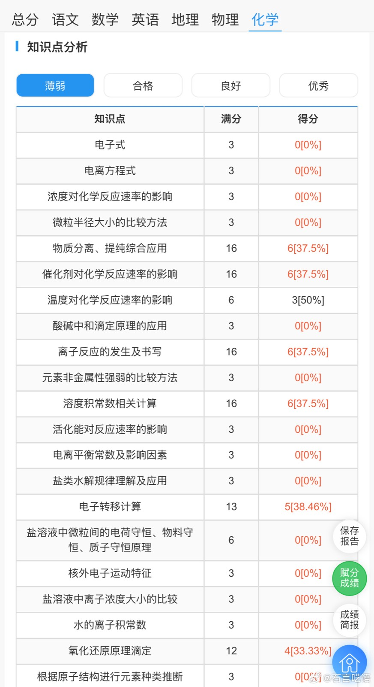
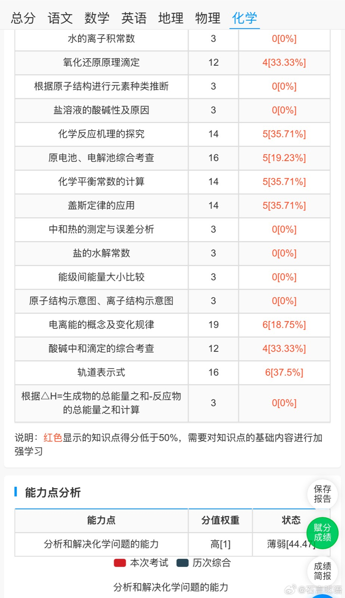
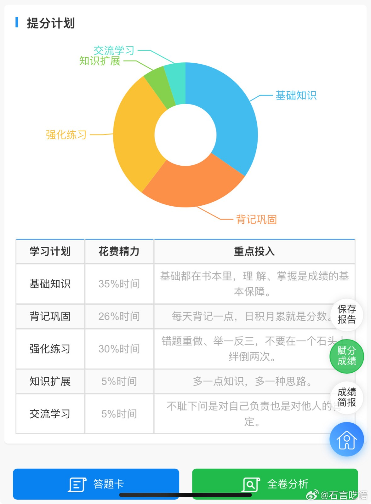
067 2025-01-06 10:39 @石言呓语 成绩与考试 学习方法
前几天，我在微博上提了一个请求，关于我家波妞的化学成绩提升求助，结果得到了各路化学大神的支招。这是微博不同于其他社交媒体的地方，各路学霸聚集。同时也是图文平台比较大的魅力，可以快速精准的归纳核心要义，一点不拖泥带水。
回家后，我跟她就把大家的建议整理了，尤其是几位化学老师给出来的意见。经过这个周末的总结和反思，今早上学路上她跟我说：“我的化学好像悟道了，应该不会再当运输大队长了。”
“运输大队长”这个梗大家应该知道，就是领了无数的美式装备结果被打得落花流水的国军统帅。具体的悟道过程，波妞大概介绍了一下。她说几位老师都认为她的问题还是在书本上，所以她试着带着错题又回到书本上，这一次再学课本的时候，有种豁然开朗的感觉。高二老师讲课非常快，因为要拉进度，很多知识点懵懵懂懂就过去了。但是根据目前几位老师给的建议去反刍，不仅知识点懂了，也把前后关系理顺了。
距离期末考试还有十多天，但愿她的“化学悟道”是真的。我把几位老师的建议也贴出来，可以跟同样面临高中化学困惑的娃儿看一下。。也不要跟我说“化学容易得很，轻松就能满分”这种话，我听了烦，每个人都有自己的长处和短板，真牛逼就去拼搏诺贝尔化学奖。
祝每个即将高考的娃都有一个自己理想的分数，只要保持努力就好。
#微博跨域计划##波妞的高考#
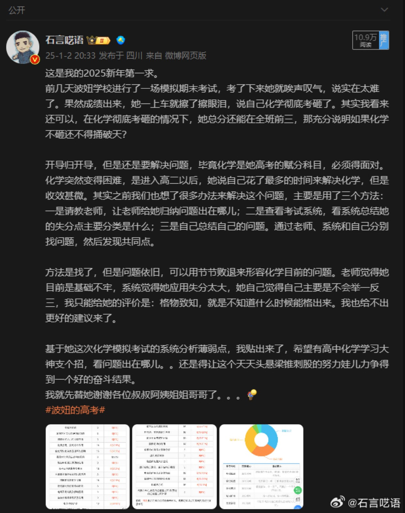
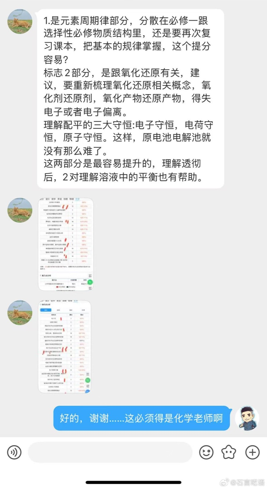
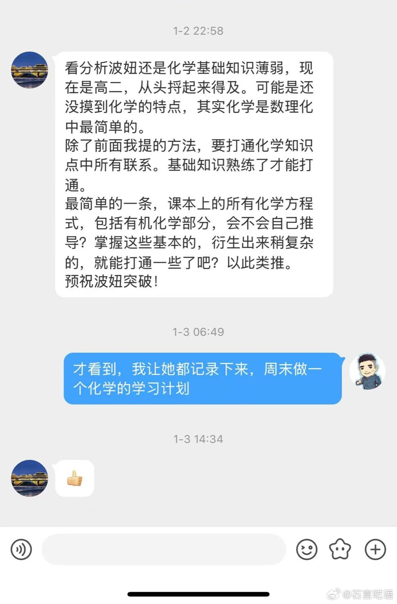
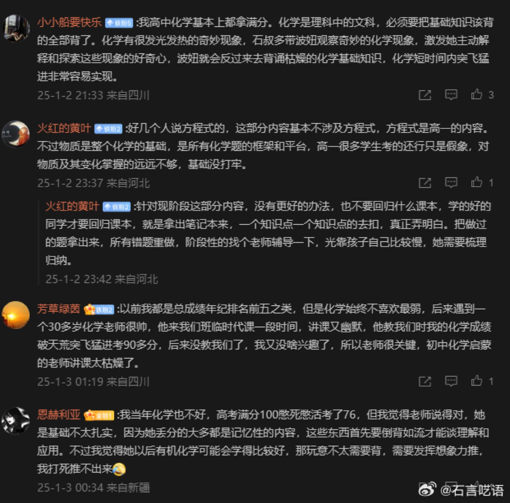
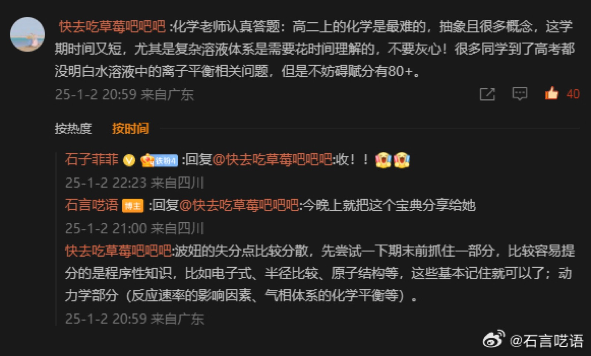
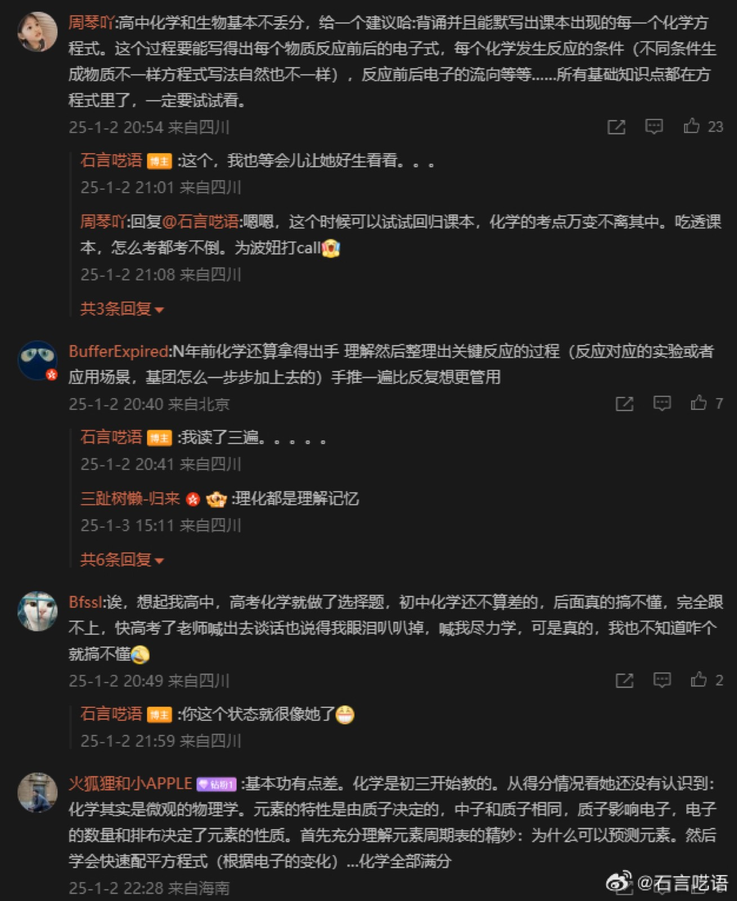
068 2025-01-11 13:55 @石言呓语 择校与分班 成绩与考试 学习方法 手机与游戏 兴趣与社团
波妞他们高中，基本都是由本校直升上来的娃儿，初毕业排名前200多名的。但进入高中以后，不断有人退出，以转到国际部为主，也有转校的。
今天我听她说又有同学没来了，原因是迷手机，日夜颠倒的都打游戏刷短视频，成绩也一落千丈。结果逃课打游戏被老师抓住，最后家长毛了就把娃儿接回家了，说期末考试都不来了。
太可惜了，这些都是在初中的时候最考前的一批娃儿，最终还是败给了手机。我开玩笑问：“班长你不帮扶一下这些走歪了的同学吗？”她说这是每个人自己需要感悟的道理，哪个都帮不了。
手机确实是最好的麻药，家长忙的时候就递一个手机给娃儿，马上就安静了。但是，手机的反噬更要命，一旦上瘾就几乎戒不掉。如果还有条件，千万不要把手机递给娃儿做安抚奶嘴，最后的苦果还是得家长自己来吞。
我家波妞小学的成瘾也比较大。小升初的时候，强行把手机做了物理隔离，整整一年没有让她碰手机，最后把情况扭转回来。也不知道，等这些手机病娃儿长大以后，回顾自己这一段人生的时候，会有什么样的感想。
#波妞的高考##微博跨域计划#
069 2025-02-14 07:46 @石言呓语 择校与分班 学习方法 手机与游戏 心态与情绪 补课与培训
马上又又又又要开学了，还有寒暑假各一次，作为老父亲的我就要上岸了，然后又进下一个阶段不用过于操心的阶段。
从小学一年级开始，每个年级都说很重要，感觉其他年级好像都可以耍过去一样。实际上，不同年龄段的不同学习阶段，都重要。高二下期，重不重要？那必须啊。。。但是，作为家长，怎么办呢？
以下针对普高的娃儿，我的建议。。。如果家里是国际部的同学，我不懂。
我觉得首先有个认识，娃儿在高二下要承受更多压力，因为很多课程要拉进度，老师会用有限的时间灌输更多知识，甚至高三的知识都要讲，留更多时间给下个学年。所以，课堂走神一节课，人间滴答已一年。尽量不要给娃更多的压力了，他们能把老师讲的消化完，就谢天谢地了，这是我的认识。
现在回想起来，70后的我在高二下期都在学校外面看录像打游戏压马路野呢！
其次是针对性补课的问题。在高二下期全面补课是不可能的了，主要是时间不允许。本身就已经是头悬梁锥刺股，早6晚11点都是常态，一点点时间都挤不出来了。仅有的周末，顶多把最弱的科目用来补一补。如果真的每个科都弱，不如退一步留级多一年时间。
最重要的来了，就是怎么找弱项。老师知道，娃儿知道，AI知道，唯独家长不知道，但是家长可以找办法。我家的办法就是先问波妞自己弱点在哪儿，然后她去请教各科老师说自己的努力方向，再然后我们再借助AI做了一些针对性提问，获取答案。打基础、多做题、错题归纳，这我们都知道，但是具体在哪一个知识点上的基础和错题类型，错题归纳的方式，以及温故而知新的节奏把握，就只有家长带着多方论证后形成综合方案。
要说家长在高二下的学习中用了多大力气呢？也没有。但是，我们可以作为成年人帮娃梳理一下思路，通过自己的成熟思维帮他们找到方法。当然，我随便怎么说，还是会有家长说：“啊啊啊啊啊，这个我不会啊。”那咋办？那就赌个手气嘛。
#波妞的高考##微博跨域计划#
070 2025-03-16 16:21 @石言呓语 手机与游戏 补课与培训 志愿与升学 兴趣与社团
因为明年娃儿就要高考了，所以今天家里举行了一次非正式谈话，主题就是大学生的生活费问题。现在大学生的生活费要多少才合适呢？这道题我们都还不会，我们估计得区分城市和学校。
最重要的是，我们想了解一下波妞在缺生活费的时候打算怎么办。她的回答是：“找你们，绝不贷款，任何借贷都不用。”
对此我们表示万分赞同，因为现在不仅仅是校园贷的问题，还有手机上无处不在的高利贷，连用手机查个资料也会给你蹦出个百度贷。
还有没有什么可以自食其力的自我补贴的方式呢？我问她。
她说：“利用学习间隙，勤工俭学，自媒体，帮人辅导，也就只能这样了。”
从目前来看，她的想法都是按照家里规划来的，是个乖娃儿。真的是转眼之间，那个小屁孩儿，就要长大成人了。
话说回来，那么现在的大学生，到底各位家长每个月给多少生活费？
#波妞的高考#
071 2025-03-24 15:28 @石言呓语 手机与游戏 亲子沟通 兴趣与社团
今晚波妞回学校要登台演讲，代表同学们回顾全年级的马拉松活动。
路上，她跟我聊了一下现在在聚光灯下演讲的感受，从初一登台的惴惴不安，到现在的从容不迫，从最开始的语无伦次到现在控场高手，真的要得益于这几年自己运营个人微博锻炼了出来，尤其是开通短视频以后的互动。
她说，以前自己也是一个看着老师和校领导就要绕道走的人，要不就是惊慌失措假装自己很忙。现在不会了，完全能够很淡定跟每一位老师寒暄，跟清洁工和餐厅大叔大妈们打成一片。
她这些都是后天练出来的，从一个小时候彻底的I人，通过长时间社交平台的运营以及我们的持续鼓励下，成为了一个E人。甚至现在还会跟我们商量，应该组织什么样的话术去跟老师沟通，为同学们发声。
虽然每个娃都有自己的性格，但主动大方和善于表达总不会吃亏。如果娃儿还小，我还是强烈推荐大家努力让家里娃锻炼表达能力，报班可以，开社交账号也可以，或者主动担任班干部都行。这对他们未来的人生，都是宝贵的财富。
#波妞的高考#
072 2025-03-26 13:40 @粉粉粉荔枝
#波妞的高考#波妞在哪所高中？
073 2025-04-08 12:51 @石言呓语 成绩与考试 手机与游戏 兴趣与社团
昨天是波妞这学期第一次月考，她下午早早考完以后（她自我感觉考得还可以），寻思着没什么事就去校长办公室摆龙门阵，这事连我这种社交恐怖分子当年都不敢想。
主要是和校长聊最近的学习情况，聊自己的价值观，还有对于未来学习的憧憬。校长对她说：“你这个娃儿硬是越来越乖了，有机会一定要再去给低年级的同学们做一次演讲，他们这代人需要你这种榜样。对了，你是咋个一边学习还一边搞自媒体的，主要着重给大家讲一下如何在社交媒体上找到自己的位置。”
为什么我知道这么多呢？因为她昨晚回来以后，就把学生如何用好自媒体这个课程大纲交给了我，这个课题实际上也适用于很多沉迷社交媒体的小朋友。
总之，荣誉背后总有一个或者几个吭哧吭哧只负责搬砖的人。
#波妞的高考#
074 2025-04-09 14:21 @石言呓语 成绩与考试 学习方法 志愿与升学
今天上学的时候，波妞问了我一个比较难回答的问题：“作弊能够看起来得到一个好成绩，但对努力学习靠自己的同学而言不公平，尤其是成绩排名的时候会有很大的落差，那是不是该跟着一起作弊呢？”
谁读书没做过弊呢，但当了家长以后肯定不能鼓励学生作弊了，角色变了就觉得作弊不可取。我是这么给她说的：“成绩是对你自己付出的检验，错题可以帮助接下来的分析和总结。这辈子最不可能作弊的考试即将来临，真实的成绩也可以帮助我们找准未来理想的大学。”
虽然她还是唉声叹气，但感觉听懂了我的意思：他横任他横，明月照大江。
以前我们是不是都经常听到其他家长说：我家娃儿成绩一直挺好的啊，不知怎么就发挥失常了呢！！！现在想起来，这都是一路抄过来显形了吧。反正，各位家长共勉。
#波妞的高考#
075 2025-04-11 14:29 @石言呓语 择校与分班 成绩与考试 志愿与升学 兴趣与社团
班长接了个大活，要把教室后面的公告栏用活，因为现在同学们都披头散发忙学习，这个宣传阵地有点长草了。于是，军师又激情上岗了。
臣献上一计：首先这不是一个小小公告栏，而是应该当做一个运营项目。班长规划好版图以后，挑选合适的同学分组，带领大家来维护。通过不定时更新、每周更新和每日更新三个维度，来保持内容的新鲜性和时效性，同时满足师生的广泛需求。
具体做法：自己做方案，做版面规划和运营方案，然后组织走读生开会，班干部带头分组各负责一周。版面分为多个部分，除了班级正常公告和成绩发布，中间留给全国各地美食、旅游和大学资源介绍，右边部分的“热搜”由走读生提供最新国际国内新闻，让所有住校同学掌握时事消息。
奖励机制：公告栏采取公众评分制，每周晚自习评分一次，期末汇总评出一二三名，奖励小组豪华快餐一顿。
班长听完军师的计策后，甚为满意，已经组织细化方案去了。
当好领路人，手把手把这些娃儿带上人生的道路，给好建议，实施由他们自己去完成，这是在青春期不会关系剑拔弩张的重要一环。
#波妞的高考#
076 2025-04-23 09:02 @石言呓语 心态与情绪 健康与作息
昨晚放学波妞一上车，就痛苦得嗷嗷叫，说作业太多了实在太多了，通宵都做不完。
然后我们就在车上讨论了一下高二的作业问题。
她说：“光是数学都要做四个小时，老师不停安排卷子。”
我问：“作为班长你跟老师反映问题没有？”
她说：“反映了，老师说最近知识很重要，要加强。”
我问：“那其他同学怎么办？”
她说：“每天要检查完成情况，大家只有群策群力了。”
我问：“你打算怎么办？”
她说：“我还是想自己做，这样才晓得自己掌握没有。我打算今晚干个通宵。一科一科的全部做完吧。”
我说：“做个毛线，不做了！该汇报的已经汇报了，既然不想应付一下老师，那就不做，回家就睡觉。”
结果今天早上她就带着没有完成的作业回校了，情绪稳定。本来他们压力就大，家长只有用自己的方式帮她们解压了，证明我们坚决站在一起的。
#波妞的高考#
077 2025-05-24 21:55 @石子菲菲 成绩与考试 兴趣与社团
这个视频有点长。
前半段：我通过这次的考试失利经验，归纳出一些导致我们考试失败的因素，希望通过分析错因，减少未来犯错相同的错误。
后半段：最近我们的香香从阳台飞走了，连找两天，依旧生死未卜；所以后半段主要为我对寻香香的描述与体会。
纵有疾风起，人生不言弃。
毕竟，明天又是新的一天。
#波妞的高考# #热点观点# http://t.cn/A6g83hTV
078 2025-05-28 16:56 @石言呓语 成绩与考试 学习方法
波妞的老师们反复告诉家长，高中生的成绩起起落落非常正常，大的起伏也很常见，因为知识点难度骤然加深以及信息量太大。但是，真要轮到自家娃儿身上的时候，就有点坐不住了，比如我。
最近，我和波妞一直在讨论，如何减少起伏，我觉得和各位家长可以分享一下。
首先我们两个达成了一个共识：我不是天才。不是天才就得打起精神，不停努力，稍微一松懈就会掉队。在我们保持一致的情况下，我们制定了一个短期目标。
目标，就是下月底的零诊。高考零诊就算是对高中学习的一个初步总结，学校根据经验总结：零诊以后的成绩，努力的娃还有20分左右的浮动空间。也就是对自己12年读书的初步诊断了。
然后是分析。排除课堂听不懂，排除作业没做完，排除干扰因素以后，我们两个把现有问题落到知识应用上。
最后才是方法。暂时否决了课外题，因为现在已经做不完了。根据过去自己的经验，还有各科老师的总结，我们把方法确定在错题重做，这个简单直接的笨方法。按照科目，重新把本学期所有试卷的错题分类整理，重新做两轮，冲刺复习的时候再过一遍。
光是给娃喊“你要加油，你要努力，你要用心”真是没用啊，只有和他们一起坐下来共同找方法，也许才能在独木桥上站得住，这可能也是我们这代家长和前几代家长的不同之处。
至于实际效果如何，下个月的零诊结果出来后再看，但娃儿是能感受到家长的努力。
#波妞的高考#
079 2025-06-05 22:09 @石子菲菲 成绩与考试 学习方法
高考倒计时367天
这次周考英语131分！
这次的主要问题是作文失分太多，应用文和读后续写加起来一共扣了11分呜呜呜.....
老师提供的续写素材固然很多，零零碎碎，可一考试还是忘的一干二净，肿么办？！！！[苦涩][苦涩][苦涩]
#波妞的高考#
080 2025-06-08 22:18 @石子菲菲
高考倒计时364天
这是11年前幼儿园毕业的我，还有364天我就又要毕业了，和我的中学时代说啦Bye~Bye~[哈哈]#波妞的高考#
081 2025-06-10 22:12 @石子菲菲
高考倒计时362天
请问大家高三的时候 一般几点睡？
即将高三，我们老师已经建议我们卷到十一点半再睡了.....[苦涩][苦涩][苦涩]#波妞的高考#
082 2025-06-11 22:38 @石子菲菲
高考倒计时361天
Nice！这周化学周考只错三个选择题，大题正确率提高了五分左右，还有很大进步空间～[太开心][太开心][太开心]
#波妞的高考#
083 2025-06-12 23:07 @石子菲菲 成绩与考试
高考倒计时360天
刚刚我爸给我分解了一下目标，如果我要达到我的预期分数，我的每一门学科都必须脱胎换骨，釜底抽薪，破釜沉舟——
堪称汤姆克鲁石：不可能完成的任务。
在高考结束前，我将获得新称号“汤姆克鲁石”！[抓狂][抓狂][抓狂]#波妞的高考#
084 2025-06-16 23:57 @用户7731299128 学习方法
//@石言呓语:这种弱势科目的提升方法，我们全家找了很久，最后才是错题—教材—错题的返璞归真，她自己觉得茅塞顿开，下个月零诊见真章。#波妞的高考#
085 2025-06-17 05:35 @悟见微子 学习方法
//@石言呓语:这种弱势科目的提升方法，我们全家找了很久，最后才是错题—教材—错题的返璞归真，她自己觉得茅塞顿开，下个月零诊见真章。#波妞的高考#
086 2025-06-17 06:54 @用户6100617474 成绩与考试 学习方法 心态与情绪 补课与培训
错题整理，是我家娃中学五年来最大的收获，也是我认为最值得跟同志们分享的心得体会，意义甚至大于补课。用好了错题整理，相当于节约了几十万的补课费。
我们家是从2020年开始，要求娃儿在家做错题整理，彼时波妞同学还是一个差生。有时错题整理整得哭，因为太多了，相当于全部重抄。
于是，开始买喵喵机，把错题拍下来，打印再贴在本子上。
一边整理，一边总结方法，按科目按内容分类，这个方法挺好，比按题型分类好，这样便于分类知识点。从初一到高二，错题整理一直没有停过，伴随着波妞的成绩逐步提升。
最近，她觉得自己顿悟了，不再拘泥于错题本好看和规整，而是“对应教科书的章节进行错题整理”。整理好错题，重新做错题，再回到书本相应的章节去重新学一遍。
她说：“过去错了的地方反复错，但现在这个方法不会了。”
我非常高兴的是，她已经可以自己整理，自己找到学习的归纳方式，这对她未来工作和生活都是有帮助的。学会做工作笔记，对成年人太重要了。
以前在机关工作的时候，领导讲话又臭又长，听的都是高度重视组织有力狠抓落实，听完会笔记本上一片空白。但那些科班出身的写手们却能从只言片语中揪出重点，本子上写得密密麻麻。
包括现在，我也能看到公司的年轻娃儿有些开完会本子上一片空白，因为并不是每个会上都会一二三四五的工作执行步骤，而且提的要求和方向。
我的建议就是小学生就要开始学习整理错题，形成自己的学习思路，而不是中学才开始，更不是工作以后开始，悟道越早越好。
#波妞的高考#
087 2025-06-17 08:28 @石言呓语 学习方法
这种弱势科目的提升方法，我们全家找了很久，最后才是错题—教材—错题的返璞归真，她自己觉得茅塞顿开，下个月零诊见真章。#波妞的高考#
088 2025-06-18 08:31 @石言呓语 成绩与考试 学习方法 心态与情绪 补课与培训
错题整理，是我家娃中学五年来最大的收获，也是我认为最值得跟同志们分享的心得体会，意义甚至大于补课。用好了错题整理，相当于节约了几十万的补课费。
我们家是从2020年开始，要求娃儿在家做错题整理，彼时波妞同学还是一个差生。有时错题整理整得哭，因为太多了，相当于全部重抄。
于是，开始买喵喵机，把错题拍下来，打印再贴在本子上。
一边整理，一边总结方法，按科目按内容分类，这个方法挺好，比按题型分类好，这样便于分类知识点。从初一到高二，错题整理一直没有停过，伴随着波妞的成绩逐步提升。
最近，她觉得自己顿悟了，不再拘泥于错题本好看和规整，而是“对应教科书的章节进行错题整理”。整理好错题，重新做错题，再回到书本相应的章节去重新学一遍。
她说：“过去错了的地方反复错，但现在这个方法不会了。”
我非常高兴的是，她已经可以自己整理，自己找到学习的归纳方式，这对她未来工作和生活都是有帮助的。学会做工作笔记，对成年人太重要了。
以前在机关工作的时候，领导讲话又臭又长，听的都是高度重视组织有力狠抓落实，听完会笔记本上一片空白。但那些科班出身的写手们却能从只言片语中揪出重点，本子上写得密密麻麻。
包括现在，我也能看到公司的年轻娃儿有些开完会本子上一片空白，因为并不是每个会上都会一二三四五的工作执行步骤，而且提的要求和方向。
我的建议就是小学生就要开始学习整理错题，形成自己的学习思路，而不是中学才开始，更不是工作以后开始，悟道越早越好。
#波妞的高考#
089 2025-06-18 17:16 @中医嘉韵 学习方法
//@石言呓语:这种弱势科目的提升方法，我们全家找了很久，最后才是错题—教材—错题的返璞归真，她自己觉得茅塞顿开，下个月零诊见真章。#波妞的高考#
090 2025-06-21 11:53 @河妻病 兴趣与社团
波妞重度依赖♡♡♡#波妞的高考# L河妻病的微博视频
091 2025-06-21 21:50 @岚岚xu 学习方法
//@石言呓语:这种弱势科目的提升方法，我们全家找了很久，最后才是错题—教材—错题的返璞归真，她自己觉得茅塞顿开，下个月零诊见真章。#波妞的高考#
092 2025-06-22 11:17 @石子菲菲 学习方法
读后续写积累本怎么做？
[抓狂][抓狂][抓狂]
你有没有这样的烦恼？
读后续写素材好不容易记住了，到考场一紧张全忘了。
读后续写又杂又多，记不住，根本记不住......
Look at my eyes！
作为读后续写从15分到22分以上的逆袭党，以下是我对读后续写积累本的分享：
#波妞的高考# #高考开麦季# #读后续写# #英语作文# #英语# #微博vlog大赛# http://t.cn/A6DZQAAw
093 2025-06-24 22:28 @石子菲菲
高考倒计时348天
今天高中信息技术会考，but忘带身份证了。[泪]
天公替我流下悔恨的泪水。
老汉让我品俩字：统筹。
#波妞的高考#
094 2025-06-26 23:31 @石子菲菲 学习方法 亲子沟通
高考倒计时346天
像往常一样，晚自习开始前 我都会找地方自习，而作业也顺带放在食堂旁边，来节约时间，提高效率。
今天不一样。
当我啃着香辣鸡腿，从食堂闪出来时，我的瞳孔一震：
我的数学复习资料被人撕了。
复习资料的残体静静躺在花坛上，似乎向我发出最后的求助。
第一反应：观察四周，看有无监控记录。
第二动作：冲到办公室，向老师汇报情况，老师安慰开导，泪洒当场。
第三解决：借胶带粘卷子，两位热心同学路过，了解情况后，主动帮我粘卷子。
向老汉告状嘤嘤嘤后，我得到的教训：
1.当问题出现的时候，先找自己原因：因为放在食堂旁边本来就有风险，只是这次碰巧发生了而已。
2.这个世界固然有善良，但恶意也不少：不可能所有人都站在你的立场为你考虑，我们要随时做好被恶意对待的准备。[融化]
#波妞的高考#
095 2025-06-28 09:02 @石言呓语 学习方法 心态与情绪
今晚波妞一上车，我就暼见表情不对。
然后她看我一眼说：“爸爸，我今天遇到一件很伤心的事……”
我让她平静的说说看。
她说每天自己都要带着错题集卷子去食堂吃饭，然后吃完就可以抓紧时间去复习，两年来坚持如此。结果今天从食堂出来发现忘了拿试卷，结果跑回餐桌上找不到，最后在学校一个花台边找到了合订本卷子，被人撕碎了。（更正一下：她两年来都是吃饭前把卷子集放在食堂外面的花台上）
越说越伤心，眼泪哗哗的流。
然后她说：“我去调监控，没看到。我去找老师，结果老师也只让我把卷子重新拼好。我就想不通，从来不得罪别人，为什么要这么对我的辛苦成果？”说完哭得更厉害了。
我说：“这个世界充满了善意的人，也有很多恶意的人，对你来说这只是一课，未来会更多课在等你。谁做的不重要了，可能是讨厌数学的同学，可能是讨厌在食堂还在学习的人，也可能就是恶作剧。现实生活中，那些恶意对待小动物，恶意对待他人，恶意对待善意的事还少吗？这一课，还是值得。”
说完，车到家。
我说：“马上立早记的豌杂面要测试成功了，我给你留了一份样品，煮给你尝尝当加餐。”
活色生香，热辣滚烫的豌杂面端上桌，她的泪水已经干了。
我问：“好吃吗？”
“太好吃了，绝了。”她说。
善意，就是半夜家长精心为娃儿准备的一碗豌杂面，嗦完浑身舒坦，这事学个教训翻篇了。
#波妞的高考# #生活碎碎念#
096 2025-07-01 18:19 @石言呓语 成绩与考试 学习方法 手机与游戏 心态与情绪 亲子沟通 补课与培训
我家波妞的学习得到了很多云姨的巨大帮助，各科都有，在此隔着屏幕90°鞠躬。我贴一些有共性的建议出来，各位中学家长共勉，毕竟掌握了就是节省补课费和少花冤枉钱。以下来自某高中班主任老师，再次致谢。（部分个人信息有删减）
…………………………………………
关注你微博是二天去四川逛吃好有个方向哈哈[哈哈]
做为一个高中生家长，我也是体会颇多，就顺便给你分享一下哈！
我感觉现在波妞压力比较大，你让她放松些，在压力大的情况下，是没有好效果和高效率的。同时，（这个很重要！）家长更要放轻松，不管孩子说的啥情况都泰然处之，好了鼓励，考砸了，就说大不了从头再来嘛！家长的一点点情绪都会影响孩子的情绪，孩子的情绪很多是来自家长。这样好的学校和已经很自觉的孩子了，家长就提供陪伴，后勤保障跟上，其他的就看时间了。
目前化学还没掌握住方法，化学不难，没有数学和物理难。
化学需要记忆的地方多，高中的知识点很碎。最近我和这个学科的人士又探讨了下，XX一中的化学教研室主任说：高中化学注意两点，一个是规律，二一个是特例。
我感觉她讲到核心了。前面我说的基础知识那些必须掌握住，实验部分也是基础知识，是波妞的薄弱。后面才可能摸索到化学知识的规律，规律掌握了，大部分问题都迎刃而解。然后就是特例，特例是一些不规律的知识点，这在老师授课上会重点提出，做好笔记，特例是出自哪里？会导致什么结果？考试一般就在这些知识点出题，埋坑，考察学生是不是灵活掌握了。高中化学无外乎这两个方面。以波妞的数学和物理理解能力，学化学不难。
如果想考985学校，那要求没有特别偏科的成绩。有一科偏科，可能是头部的211（除了985的学校），这还得要求别的科成绩非常好的情况下。波妞的成绩还有很大的上升空间，英语是好提高的，增加词汇量。不知道她们有没有错题本，这个理科学科都很有用。平时的错题搜集记录，考前重点复习错题部分。（这个情况在高考大卷省是这样的，四川是不是没那么卷，情况会轻松点？毕竟四川有两个985.不过，未雨绸缪下，可能把握大些。）
祝波妞争取更大的进步！
#波妞的高考#
097 2025-07-01 23:06 @石子菲菲 学习方法
倒计时341天
不是广告，不是广告，不是广告，不是广告
当当当当——
这个黑金计划本本本太酷了啦！让我晒一下！！
#波妞的高考#
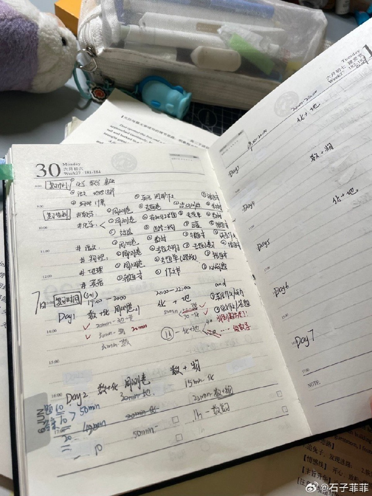
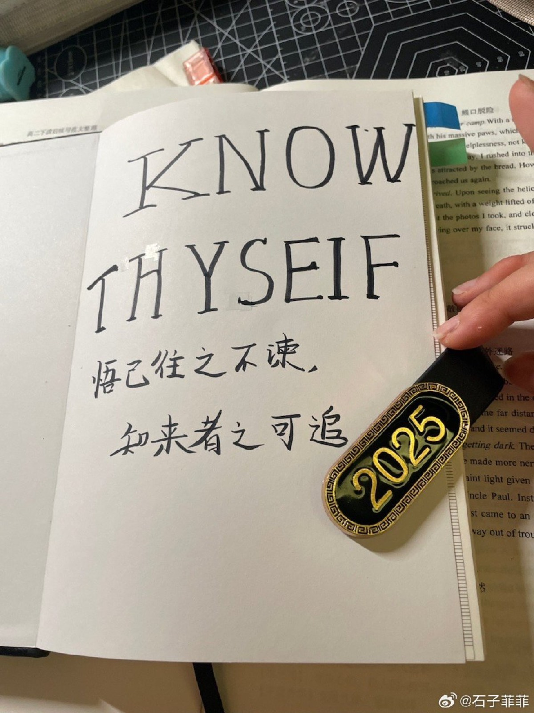
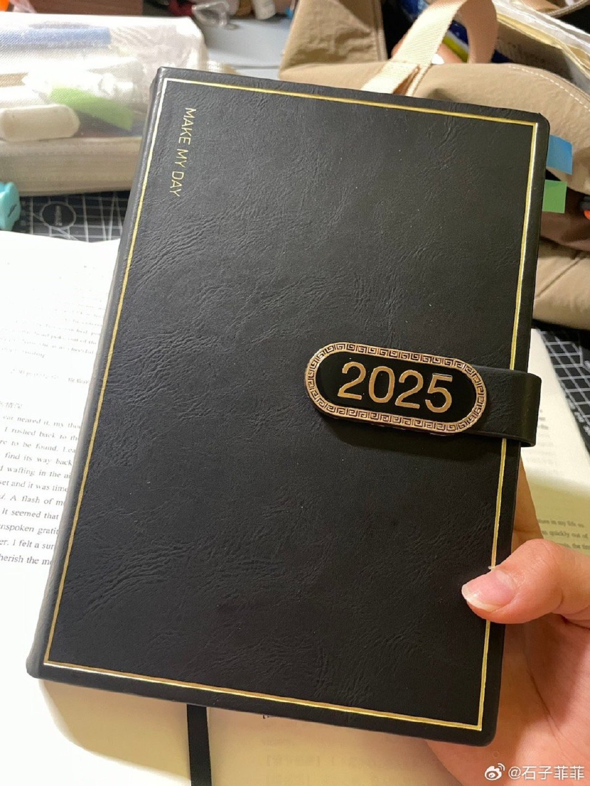
098 2025-07-02 23:06 @石子菲菲 成绩与考试
倒计时340天
一个很有“安全感”的学习小技巧：
将自动铅笔从0.5mm 换到0.7mm。
平时考试紧张，稍加用力笔芯就断了，不仅消耗量大成本高，且换笔芯更浪费时间。
最近我的老师给我安利，让我换成0.7mm笔芯，粗细不影响，而且不容易断，非常有安全感的选择！！
#波妞的高考#
099 2025-07-04 12:10 @石言呓语 学习方法
现在高三预备班的同学作业，作为家长已经基本插不上嘴了，除了语文和地理。我不知道各位家长还会不会跟娃讨论作业。
我家波妞在路上说：语文的阅读理解太琢磨不透了，每个答案都像是对的。尤其是通过一段大家原作，来分析作者当年想表达的意思，简直是玄学。万一，人家当年就是有感而发直抒胸臆就事论事呢？
我觉得可以跟她讨论一下这个问题。我说：苏东坡在去世前写了一首诗总结自己，里面有一句“问汝平生功业，黄州惠州儋州”，请问他为啥要写这三个城市呢？这肯定就不是字面意思了。如果了解他和这三个城市的关系，就知道他在表达什么意思了。
我的总结就是，所有的恐惧来源于火力不足，菜就多练。不过数理化我也爱莫能助。
#波妞的高考#
100 2025-07-04 22:51 @石子菲菲
倒计时338天
在高中里，我们身边的同学，可以是高考的竞争对手，但更是患难与共，并肩作战的战友。
无论是学习还是生活，我们都可以发现：
如果一个人发展得好，那ta只是轴上的一条线，如果一群人发展得好，那他们将是轴上的一个面。
所以，作为班长，我想提升我们班级的凝聚力和核心力量。
怎么提升呢？
这个活动叫：学霸速成指南TED。
顾名思义，就是将单科排行靠前或进步巨大的同学，通过组织顺序，在每周挑固定的几天在午间总结上分享自己的学习方法。
好处有三：其一，锻炼演讲同学的表达能力，加强对该方法的理解与掌握；其二，使更多学习某学科有困难的同学，得到学习方法的纠正与提升，其三，提高班级凝聚力与核心力量。
策划完这个方案，仿佛看到我们班冉冉升起的明天，真是让人热血沸腾，情动不能自已！！！[打call]
我爸听后锐评：
“年轻人的想法总是美好的，总要去努力一下，输赢都是成长。”
#波妞的高考##高考开麦季##班级##高中##成长#
101 2025-07-06 22:47 @石子菲菲
倒计时336天
明天零诊....干巴得！！
#波妞的高考#
102 2025-07-12 15:13 @石言呓语 择校与分班 成绩与考试 学习方法 志愿与升学
认认真真把这次成都高考零诊的数据看完了，尤其看了波妞学校的表现。年级平均分600多一点，波妞班级是590多。在全市参加零诊的58000名学生里，这个平均分排在前15%。这是啥概念呢？按照去年的高考，全班都在一本实际录取线以上。
波妞还有一年可以努力，她这次考试并不太理想。
并不是私立学校就一定好，因为现在这批娃已经是在中学几年里拼搏剩下来的拼高考的学生。从初中开始，就有不断退场的娃，转学的，退学的，转国际部的，留下来的数据确实就是好看的。
所以，就算私立高中的高考一本率99%上线，并不绝对。跟成都七中的99%不是一回事，跟公立普高因承担社会责任而呈现的数据，更不是一回事。
成都的教育资源在全省确实有难以撼动的领先，很可能波妞一个班的成绩，能抵省内有些县一本总人数。但我觉得家长因素也很大，关注青春期，关注学习习惯，关注错题整理，从初一就开始共进退。
总之，私立学校不是绝对的好。前几天有粉丝私信我这个事，这就算给一个完整的答复，毕竟这六年寒窗不是一笔小数字。
#波妞的高考#
103 2025-07-13 07:27 @石子菲菲 补课与培训
倒计时330天
大家开始暑假了吗？
我们准高三还要补课......[泪][泪]
#波妞的高考#
104 2025-07-13 17:59 @石言呓语 学习方法 亲子沟通
因为还有320天就是#波妞的高考# ，根据我们和她的讨论，她去学校刻苦搬砖，我一大早起来就吭哧吭哧帮她用DS做错题整理和复习方案。我再次给各位高中生家长推荐用系统来解决我们的难题，输入的关键词越多，问得越详细，提问越完整，得到的结果越好。根据我和DS的沟通，最终得到了一个上万字的错题整理方案（不一定都有用，需要自己再提炼），然后它贴心的做了一个预估：如果严格按它的规划，最终高考得分有30-40分的提升，看着真是让人高兴。。。简直是准高三家长最好的麻药啊！
105 2025-07-13 23:05 @石子菲菲 成绩与考试
倒计时329天
军师花了整整几个小时和AI交流我的状况，结合我的临诊成绩，最终编制出一套AI个性化提分方案！
不得不说，真的太太太太太太强啦！
我花了两年时间悟出来的一个关于数学改错的一个技巧，AI的数学方案竟然一针见血的点出来了！！！还有很多我忽略了的提分要点！[打call][打call][打call][打call][打call][打call][打call]
#波妞的高考#
106 2025-07-14 23:18 @石子菲菲 学习方法
倒计时328天
桀桀桀桀桀桀桀桀桀！
暑假刷题大军陆续到战场！！！
#波妞的高考#
107 2025-07-15 23:03 @石子菲菲
倒计时327天
感觉在学校要中暑了！[泪][泪]
上课时是南极洲免费体验卡，冰天雪地；抢饭时是撒哈拉沙漠限定回归，汗如雨下.......
我们班的男同志们如同“火娃”，空调开开开开不停！[泪][泪][泪][泪]
#中暑##波妞的高考#
108 2025-07-16 23:57 @石子菲菲
倒计时326天
我们学的物理越发高深莫测了，感觉下一秒就要当科学家了。
刚开始，老师只是介绍了原子光谱，α粒子β粒子γ粒子接连不断。
初见端倪，我虎躯一震.......
哈哈哈哈哈哈哈，感觉事情要变得有趣起来了！
紧接着，衰变和半衰期再次冲击了我幼小的心灵。
我反复翻阅教材：这是高中生要学的吗？啊！！！
课堂的最后，爱因斯坦方程E = mc²赫然写在黑板上，蓦然回首，和同样不可思议的同学们对视，仿佛大脑皮层都被梳平了。。。[苦涩][苦涩][苦涩]
#波妞的高考#
109 2025-07-17 22:27 @石言呓语 成绩与考试 学习方法
还是给各位家长反馈一下，上周末我用AI给波妞做的提升计划，她已经在实施了。
这娃还是很严谨，拿着去找每科老师请教，老师们都认真看了并且提了一些意见，不过总体都是觉得方案非常好。我还是推荐大家都试试，尤其是家里娃比较自觉的那种，根据成绩情况和AI聊，近期分数，各科具体得分情况，目标值，以及娃儿的学习状态，然后得到一个比较详细的计划，再根据计划自己进行整理和删减，交给娃使用。
我的态度就是添彩不添乱，高三的题真是又多又复杂，一般家长真是帮不上啥忙。
各家有各家的做法，也可以啥都不帮，只负责喂食搞好后勤保障。我家那个娃，欢天喜地搂着我跳了半天，她说这是她的宝典。
#波妞的高考#
110 2025-07-21 07:36 @石子菲菲 学习方法
谁的暑假不摸鱼？！
回答我！look at my eyes！！
暑假我们又应该如何一边摸鱼，一边稳定提升英语？
以下我将通过听力和阅读两方面来展开：
#微博vlog大赛##波妞的高考##暑假# #假期充电计划# http://t.cn/A6kmXMO0
111 2025-07-21 22:34 @石子菲菲
倒计时321天
周一牛马综合症。
周末狂欢后，周一返校嘤嘤嘤，大家上课眼皮宛如千斤重，课间更是听取呼噜声一片......
弱弱的问一句，据说上班之后，周一牛马综合症还会加重，这是真的么？[苦涩][苦涩][苦涩]
#波妞的高考#
112 2025-07-22 22:10 @石子菲菲 心态与情绪
倒计时320天
哈哈哈哈哈哈哈哈哈还有三天 放暑假！！
兄弟们！我们要熬出头啦！
（尖叫）（扭曲）（阴暗的爬行）（阴暗的蠕动）（翻滚）（激烈的颤抖）（阴森的低吼）（痉挛）（蠕动）（阴森的爬行）（分裂）（走上岸）（扭曲的行走）（不分对象攻击）
（走来走去）（绊倒）（阴暗的爬行）（无意义的哭）（坐在角落）（鬼嚎）（极速爬行前进）（炫舞着大回旋）（翻转倒立）（攻击所有人）（热情地爬行）（疾驰）（警告叫声）（无差别脚刹）（在天花板上飞窜）（扑到别人脸上）（怼脸杀）（诡异的笑声）（啃几口头发）（后空翻离开）（寻找下一个目标）
#波妞的高考#
113 2025-07-25 09:21 @石子菲菲 成绩与考试 学习方法
ai助力梦想，暑假计划来也！
制定暑假计划是时，我们常常因为无从下手而反复拖延，其实ai这个工具能帮助我们高效科学制度地暑假计划，减轻负担！
part 1
学情分析
参考术语：
我明年高考，是物化地考生。目前.....成绩不稳定，在刚刚的测试中呈现.....趋势。现需要就....成绩开始错题整理，并以错题整理为重点提升纠错能力。请帮我做一个错题整理和复习计划。
part2
暑假计划
参考术语：
请根据以上成绩分析，制定一个暑假计划（..天）。
要求：工作日+周末时间段安排，单科针对性突破计划。
part3
个性优化
#暑期备考如何避免假努力##假期充电计划##波妞的高考##暑假##暑假计划# http://t.cn/A6FhSPOo
114 2025-08-06 21:15 @石子菲菲 学习方法
假期适合练字：不用动脑，有手就行。
这段时间我的衡水体有所小成，效率提高，以下是我的个人之见：[干饭人][干饭人][干饭人]
1.选字帖
2.定主题
3.模仿
4.分析
练字最重要的是坚持，只要功夫深，衡水体一周即可养成，大家快来试试！[打call][打call][打call]
#假期充电计划##暑期备考如何避免假努力##波妞的高考##英语##练字##衡水体# http://t.cn/A6Fgjr6l
115 2025-08-13 10:07 @石子菲菲 学习方法
复习梳理的好帮手：思维导图。
相比于竖式的笔记，思维导图能呈现更清晰的逻辑关系，以我对这类学习方法的个人体悟：
#假期充电计划##暑期备考如何避免假努力##波妞的高考##思维导图##复习# http://t.cn/A6s6OZiU
116 2025-08-20 10:00 @石子菲菲 学习方法
这期是一个学习vlog！[憧憬][憧憬]
延时摄影，伟大的发明。
它直观记录我们做一件事的全程，无论是生活还是学习，回顾延时摄影都很有成就感～[哇]
#假期充电计划##暑期备考如何避免假努力##波妞的高考##思维导图##vlog##学习打卡# http://t.cn/AXvvsceC
117 2025-08-27 23:47 @石子菲菲
CD 284
饿饿饿饿饿，曲项向天嚎！
啥时候放假！
我要吃鸡杂面！！[怒骂][怒骂][怒骂]
#波妞的高考#
118 2025-08-28 07:02 @石言呓语 手机与游戏 亲子沟通 补课与培训
昨晚因为有事，约定接娃的时间晚了十多分钟，因为她忘了带手机只有苦等我。车到了接她的位置，路口已经没有接娃的车和放学的娃了，只看到我家那个蹲在路灯下做卷子。我还没张口说不好意思，她跳上车就喜滋滋说“我做了半套数学题呢，你再晚点我就把全套做完了！！”
微博就像日记本，七年前在学校搞恶作剧在家里偷手机打游戏的波妞还历历在目，七年后就变成了凿壁借光头悬梁锥刺股的勤奋典范。从没有任何人生理想，到现在心怀梦想，内驱力提升才是她不断勤奋的核心原因。还有280天，就要检验这六年努力的结果了，嘻嘻哈哈就轻松过线那不可能的。
很多家长都问过，内驱力是怎么建立起来的？我也不厌其烦的说：物理上断绝有成瘾性的电子产品，父母必须陪着一起成长（中式家庭的宿命），还有课外的辅导，潜移默化的交谈和引导，还有校长和老师不断的鼓励，缺一不可。如果家里有娃跟六年前的波妞差不多，得认真做个方案，然后持续执行。
#波妞的高考#
119 2025-08-30 14:10 @石子菲菲 学习方法 兴趣与社团
叮～
马上就要开学了！
致初中学弟学妹，请查收一个错题本整理方法！
本次内容顺序如下：
1.错题本的重要性。
2.错题本的分类标准。
3.错题本的具体实施。
以上来自于我个人有限的学习方法建议，如有更好的方法，欢迎补充！[yeah][yeah][yeah]
#波妞的高考##初中##错题本##VLOG[超话]##学习方法# #微博超有用视频大赛# http://t.cn/AXvew1aX
120 2025-08-31 16:29 @石子菲菲 学习方法 心态与情绪 健康与作息 兴趣与社团
明天就要开学了，我们即将面临一个崭新的学期——
那么开学后怎么快速恢复学习状态？
下面是我的个人经验分享：
功能主治：[哇][哇][哇]
开学后疲劳困倦，做题走神，缺乏动力...
有效成分：[yeah][yeah][yeah]
1.心态
做计划，刷题顺序，学习搭子。
2.作息
早睡早起。
3.饮食
减少糖分摄入。
用法用量：[憧憬][憧憬][憧憬]
根据患者病情自行调整。
祝大家开学后旗开得胜，实现自己的努力目标～
#微博超有用视频大赛##如何迅速进入学习状态##学习打卡##波妞的高考# http://t.cn/AXPPvdOq
121 2025-09-01 10:16 @石言呓语 成绩与考试 学习方法 心态与情绪 兴趣与社团
今早七点准时进电梯，波妞意味深长的给我说：“这是我中学时代的最后一次九月开学了。”是的，还有280不到就是她的高考了。
中学这五年多，对她来说还是有很多可喜可贺的事情：实现了大逆袭，从初中全校幺鸭子的一路成绩提升，从一个被推着做社交媒体的小透明到现在主动做视频分享的博主，从只有素人的人生理想到天天操心所有同学的班长，每一个都不是什么好大的成绩但又是实实在在的进步。
在她的个人规划里，明年的高考希望能留在成都读书，这意味着选择面非常的小，会面临更大的压力。高三，家长除了搞好后勤已经帮不上什么大忙了，按她自己的话说：“全班的氛围突然变了，每个人都在全力以赴，连以前爱说话的男生都只埋头做题了。”
之前我用DS给她做了一个很详细的复习提升方案，她先去找了老师提建议，然后实际情况自己每天都会拿出来看，觉得非常有用。我打算整理一下当时我的思路和做法，分享给各位家长。。。也可以作为各自娃儿的行动计划，不过前提是娃要有自律性，不然也就是一堆废纸。
等两天就搞出来。#波妞的高考#
122 2025-09-02 23:32 @石子菲菲
CD 287
明天上午全校放九三阅兵！
期待ing！[憧憬][憧憬]
#波妞的高考#
123 2025-09-04 14:30 @石言呓语 成绩与考试 学习方法 心态与情绪 亲子沟通 补课与培训
我分享一下我家是如何使用AI来辅助高三总复习的。
首先，各科老师反复的提醒学生和家长，除了不断加强题量，还有就是不断的重视错题，这是高考取得好成绩的不二法宝。至于怎么重视，那就仁者见仁了。
其次，高三学生的语数外物化地，一般家长已经望尘莫及了，这已经是普通人一生中文化知识汇聚的巅峰时期，这些知识家长们早就还给学校了。借助外力来对错题进行分析，就是必须项。
第三，对错题的整理和总结方式，有如下几种：请家教、辅导班、自己干以及AI干。我选择了最后一种，并且自己做好了计划以后，再交给各科老师过目做一些小修改。得到认可以后，这本册子就成为了我家波妞随时揣在兜里的法宝。
以下是我的操作方法。
1️⃣工具：deepseek（根据自己的习惯选）
2️⃣方法：循序渐进，逐步喂出适合自己的方案。
3️⃣举例：我的开场白“我女儿明年高考，她是物化地考生。目前物理成绩不稳定，在刚刚的测试中呈现下滑趋势。现需要就物理成绩开始错题整理，并以错题整理为重点提升纠错能力。请帮我做一个错题整理和复习计划。”
-----在得到想要的回复以后，我问了第二个问题“目前，女儿的英语零诊成绩为xxx分。在不知道她具体题型得分的情况下，希望有2-3分的提升空间。基于错题整理，是否有详细的学习计划？”
-----得到了英语的计划以后，我再问其他科目“语文xxx分，数学xxx分，赋分后的地理xx分和化学xx分。是否都应该就错题整理进行一个合理的计划，通过减少失误提高得分，争取在基础题部分得到更高的分值？请问有没有针对以上四科，较为言简意赅的错题整理计划？”由此会形成一个其他科目的整理计划。
----这是我的第四句：“好，按你的思路进行规划，希望在下一次一诊的时候通过考试成绩得到验证。”AI根据“一诊”这个词以及前面的内容，会生成一个更精确的整理计划。
4️⃣整理：AI在每次对话后都有计划，需要个人进行一个整理，把精髓部分梳理成册。不要简单的复制粘贴哈。
5️⃣验证：系统不能代替人，也代替不了人。所以，形成的方案需要找老师或者机构来辅助验证一下，修正一些可能不切实际的方向，才交给娃使用。
我只是抛砖引玉，意思是需要跟AI在一个聊天框里进行反复的对话，最终才能形成一个完整的方案，千万不要每个问题都启一个新聊天框。。如果还不会，那就多练。
至于效果，据我家使用者反馈：非常好，成为了她的行动纲领。
最后，祝所有高三学子旗开得胜，所有中学生家长都在现代工具的帮助下，打开新世界辅导娃儿的大门。我觉得当下的高考光是鸡娃没用，还容易鸡出心理问题，家长也得下场一起，尽可能为他们提供帮助。
有可能失败，但是我们都已经尽力了。如果成功了，我们再共同拥抱，举杯共庆。
#AI 生活指南 # # 微博跨域计划 # # 跨域科技团 # #波妞的高考#
124 2025-09-04 22:54 @石子菲菲
CD 276
嘤嘤嘤高三开学统考物理怎么这么有挑战性！
所有多选只敢选一个，大题连蒙带猜.....[泪奔][泪奔][泪奔]
#波妞的高考##邪恶力量##物理[超话]#
125 2025-09-08 10:00 @石子菲菲 学习方法 兴趣与社团
近日，有一位同学在地理面临瓶颈期，找到我交流学习方法......
以下是我这次满分——
（年一/ 88赋分后100）方法分享：
1.基础夯实。
2.错题积累。
3.刷题技巧。
最后，感谢军师机智地让我选择地理，还有各路神仙对我地理的建议与帮助，狂叠赋分buff！[yeah]
#开学元气加油站##微博超有用视频大赛##如何迅速进入学习状态##学习打卡##波妞的高考# http://t.cn/AXPYzZ8g
126 2025-09-11 23:20 @石子菲菲 择校与分班
CD 269
哈哈哈哈哈哈哈哈桀桀桀，学校门口的面馆开启了双重身份：
白天卖小面，晚上卖烧烤！
走读生有福了！[哇][哇][哇]
#波妞的高考#
127 2025-09-12 10:52 @石言呓语 心态与情绪 兴趣与社团
我又要来念叨一下中学生的教育了，主要是说下要不要娃儿努力成为班干部？
昨晚我家波妞蹦蹦跳跳从走出校门就给我说：“给你汇报好消息，我是校优干候选人了。更重要的是，通过三年的班长，确实感觉自己脸皮更厚了，敢大胆管理和协调，还得到了老师和同学们的认可。大家对我的态度，是通过眼神和交流能感受到的信任。”
波妞是从初一开始，被我们架着去竞聘班干部的，从课代表开始到班委，从副班长到学生会干部，再一直当班长。我的目的非常简单：好好给我服务班级和师生，这是学生时代难得的锻炼机会。从一个一心只想当小透明的后进生，到师生信赖的班长，用了好几年时间。
除了学生自己的性格使然，家长的教育也很重要，甚至关键。通过当班干部能得到什么呢？有些家长说不要去，不要影响学习。。。我并不这样认为。
首先得有我为人人，人人为我的认识，有了这个价值观至少会是一个正派的人；其次是学会管理自己的节奏，从协调时间到协调活动，这对未来成年后的工作都有帮助；第三是学会一些基本的人情世故，哪些能说哪些不能说哪些该用什么话来说，情商要靠后天练。智商不够情商来补。
如果家里娃还小，我是非常推荐去服务班级服务他人的，综合理由如上。就是要多一些这样的娃，才让他们的青春更飞扬。。。我最近给她的建议，是高三也不要停止班长的工作，利用午间短暂时间请每一位同学做五分钟演讲，主要针对自己优势科目上的小窍门，目前看起来收获了不少好评，放松了紧张的学习还收获了经验值，皆大欢喜。
#波妞的高考#
128 2025-09-14 08:01 @石子菲菲 兴趣与社团
最近我拜了位年级上的物理学霸为师，她教了我一些物理思维和方法——
以下是以“审题”为核心的几个技巧：
1.删无关信息。
2.勾重要条件。
3.写关键数值。
4.多过程特殊标记。
#波妞的高考##开学元气加油站##微博超有用视频大赛##物理[超话]##审题##学习方法# http://t.cn/AXhLXIAD
129 2025-09-14 12:45 @石子菲菲
有一位小学的学妹询问我数学学习方法，具体问题是：
1.课堂节奏快。
2.课后作业多。
3.做题速度慢。
以下是我作为中学生角度的建议：
#波妞的高考##学习方法##开学元气加油站##数学# #小学学习#
130 2025-09-17 23:02 @石子菲菲
CD 263
我们学校有位神人，文科一般，理科逆天，数理化常年霸据榜— —— ——
如此神人，想必娱乐方式也与众不同....
“你平时休闲时喜欢做啥呢？”
“哈哈，我喜欢玩数学题！”
“哈哈！”
#波妞的高考##偏科#
131 2025-09-18 23:30 @石子菲菲
CD 262
斥鹦鹉浴器文
今有一物，名唤鹦鹉自动淋浴器，初闻其名，以为善器，购之方知，实乃“智商之税”也。
鹦鹉性傲，不喜此器，平日遇之，避而远之，从不至其就浴，徒令此器空置，枉费银两。
更有甚者，此物收拾尤难。
稍有疏忽，水溢满地，泼泼洒洒，如江河决堤。小生慌忙擦拭，手足无措，狼狈不堪，俾余演“水漫金山”之窘境。
观其用，无半分益处；论其效，徒增烦忧。
如此鸡肋之物，何称“自动”？不过欺世盗名，诱人防不胜防耳！
#波妞的高考##鹦鹉#
132 2025-09-20 22:39 @石子菲菲
CD 260
深夜无人学校....有种鬼片既视感！[坏笑]
#波妞的高考#
133 2025-09-22 23:02 @石子菲菲
CD 258 高二的时候天天练 电磁弹射大题，如今有幸一睹真容！[开学季][开学季][开学季]#福建舰弹射画面公开# #海军三型舰载机成功在福建舰完成起降训练完整版画面来了# #波妞的高考#
134 2025-09-22 23:34 @相亲相爱一家人1979
//@石子菲菲:CD 258 高二的时候天天练 电磁弹射大题，如今有幸一睹真容！#福建舰弹射画面公开# #海军三型舰载机成功在福建舰完成起降训练完整版画面来了# #波妞的高考#
135 2025-09-22 23:39 @用户dwa98mj5xb
//@石子菲菲:CD 258 高二的时候天天练 电磁弹射大题，如今有幸一睹真容！#福建舰弹射画面公开# #海军三型舰载机成功在福建舰完成起降训练完整版画面来了# #波妞的高考#
136 2025-09-23 23:13 @石子菲菲
CD 257
道长，我悟了！！
人言千千万万遍，不如自己实践一遍。
我们班常年第一的哥们儿，每天都在班级小教室里上晚自习——闭关修炼。
今天晚自习，我和朋友在小教室组装书架。
几块木板，几十颗螺丝，叮叮当当半天都没有打紧几颗螺丝，我们累的气喘吁吁。
修炼哥眉头紧蹙，终于看不下去了！
修炼哥一把夺过螺丝刀，先是认真观察了书架的镶嵌结构后，再一边捣鼓一边调整旋转方法，三下五除二搞定书架。
大夫真是妙手回春啊！
回到座位，我开始反思。
学霸为什么是学霸？并不在于他刷了多少题，而在于他拥有解决问题的能力。
妈老汉教了千万遍的道理，我这一刻才明白。
当我们从堆积如山的试卷中抬起头来，我们会发现：
读书的本质，从不在于刷多少题或考多少分，而在于培养我们解决实际问题的能力，这才是引领我们人生走向成功的关键。[开学季]
#波妞的高考#
137 2025-09-25 22:00 @石言呓语 健康与作息
还有两百多天就是波妞的高考了。进高三以后，她在物理上下了很大的功夫，从早到晚都在死磕物理题，比起有天赋的娃儿就只有玩命了。
今天物理老师打来电话说她最近状态特别好，找到了解题思路，能够看到她有了巨大进步。在沉下来做题，不是只浮于表面去完成，在深度的去思考物理题。我们的目标是不放弃每一科，也不要出现太掉队太拉分的科目。
这一关要是翻过去了，对她来说是永远难忘的经历，“举一反三”就有了切身体会。
等下放学我就奖励她吃一碗豌杂面，必须加臊子！！以资鼓励！#波妞的高考#
138 2025-09-28 23:04 @石子菲菲 学习方法
CD 252
很多年前，老汉说跑步能让人进入冥想状态。
我不以为意。
如今小生快哉快哉，大呼“真香”！
我们的三段晚自习间，有两段课间。
以往，我和朋友们要么在教学楼里闲逛，摆旋龙门阵；要么在教室里眺望远方，无所事事。
上课铃响后，我们又浑浑噩噩写作业，做拓展更是看见什么做什么，挨过一天又一天。
每天重复这这种低效的生活有意义吗？
今天，我决定独自去操场跑步。
脚踏实地，专注当下。
跑步的这段时间让人摒弃浮躁，冷静分析，规划我的学习计划。
跑完更是效果非凡！
回到座位后，我的头脑异常冷静，在跑步时早已规划好了我的计划，对我的晚自习安排有明确方向，甚至在写作业时进入了心流状态，完全没有意识到时间的流逝！
跑步，真香！[锦鲤附体][锦鲤附体][锦鲤附体]
#波妞的高考##跑步#
139 2025-09-29 22:40 @石子菲菲 择校与分班
CD 251
走读生的意义.....就是爽！！[锦鲤附体][锦鲤附体][锦鲤附体]
#波妞的高考##烧烤#
140 2025-10-01 17:54 @石言呓语 志愿与升学
昨天晚上放学车上，我家波妞说她跟一位男生在食堂畅聊了人生理想，聊完以后她对自己原有的理想产生了一些动摇，觉得那个文科班的男生说得挺有道理。
我说你讲来听听看。
男同学是好哥们儿，先问她最希望人生理想是什么？波妞说是财富自由，然后在物质基础保证下做很多自己想做的事情。我觉得这也是大多数凡人的梦，正常。
男同学问那你怎么实现有钱这个梦呢？波妞说掌握足够多的知识，学习并精通多门技能，成为专业人才。。。这也是我们对她的建议，学工科学拧螺丝，并且在拧螺丝的道路上越来越熟练工，并且总结出如何拧得又快又好。
然后，男同学就把她打断了说：“班长，你可惜了。以你管理班集体所展现的水平，我认为你应该像我一样，去考公。自古以来，权力是推动时代进步的基石，是经济的发动机。你看古代的富商有钱以后都要捐个官当，可见权力是多么的重要。你我应该都要向权力看，用权力改变世界。”
说实话，我对男同学有这样的雄心壮志深感佩服，少年的梦想任意驰骋海阔天空。但是，我觉得我家波妞同学居然这样就被说动了深感叹息。
我引用了从商鞅到年羹尧各个朝代的从政经典例子，看她是懂非懂。然后用更简单的例子给她说：“这个社会就如同一台高效机器，机器上有几个仪表，几十根管道，上万个螺丝钉，每一个都重要，它们就相当于人。仪表虽然核心，但故障率最高；螺丝钉虽然安全，但是对你们来说开起太过于平淡；当好一根能够链接仪表和螺丝的管道，既重要还相对稳定。你目前选的工科道路，我个人认为就是个管道。要不你今天试着用这个理论去跟男同学再辩一次？”
她决定今天晚饭的时候，再跟这位男同学再切磋一下人生理想。我努力想了一下我们高三时的理想，有些模糊了，好像那时还在浑浑噩噩的过日子。现在高三的娃儿，距离高考只有 200 多天，都在积极思考自己的未来了。
#波妞的高考#
141 2025-10-02 17:37 @石子菲菲
CD 248
高三生的国庆假期开始啦！！[锦鲤附体][锦鲤附体][锦鲤附体]
#波妞的高考#
142 2025-10-06 19:57 @石子菲菲 学习方法 兴趣与社团
如何提高写作业速度？
在大多数作业中，我觉得最费时间的是主观题：主观题不仅题目复杂，做题过程也冗杂，所以针对地理语文数学大题的作业，我找到一个写此类作业提速的方法：
提炼考点，简化流程。
1.勾条件。
2.列思路。
3.比答案。
不过要注意！
这种方法不适合新课学习期，在新课学习时应打稳基础。
在复习阶段，面对铺天盖地的卷子时可以用它来提高效率，此外，在对答案时也要注意答题术语等细节的严谨性，这样才能让我们的方法发挥作用。[yeah][yeah][yeah]
#波妞的高考##开学元气加油站##微博超有用视频大赛##审题##学习方法##学习##学习方法# http://t.cn/AXz7qzyg
143 2025-10-07 23:37 @石子菲菲 学习方法
CD 243
人各有所长。
今天晚自习，我花了一个多小时整理错题，向之前 赠我“物理秘籍”的学霸姐请教问题。
不得不说，学霸姐的思维非常好用！
这位姐用通俗易懂的语言将复杂问题简单化，先分析了考点和本质概念，再用模型打通了这一类题！
嘤嘤嘤....我怎样才能有这样的思维？[写作业]
吾日三省吾身....
在刷题中理解，在错题中归纳。
1.刷题不止是拓展知识面，更重要的是提高思考速度和培养分析问题能力。
我们通常只是： （刷题—对答案—关书），但更重要的其实是在刷题中反思。
做完题后，尝试用简单的语言描述解题思路，用出题人的角度高维思考。
2.不仅是错题，耗时长的题目也要反思。
如果身边有答案，要及时将答案思路和自己的做题思路对比，调整自己的解题方法，以便下次出现同类题型时能够快速分析，提高做题效率。
#波妞的高考##学习方法##高考[超话]#
144 2025-10-08 22:47 @石子菲菲 成绩与考试
CD 242
明天月考！
求文曲星保佑！！[写作业][写作业][写作业]
#波妞的高考##高考[超话]#
145 2025-10-09 23:24 @石子菲菲 成绩与考试 学习方法
CD 241
今天收获了一个狡猾且猥琐的邪修复习方法。
马上考试，时间不够怎么复习？！！
灵魂三问：
复习什么？从哪里复习？[写作业][写作业]
当我们临近考试时间紧迫，想复习无从却下手时，就直接按照考试题型复习。
怎么精准复习题型？[比耶][比耶]
除了自己总结的模型，市面上的教辅书早就整理了齐全的解题思路，比如五三和必刷题，因此我们可以参照教辅书的方法，优化自己的解题策略。
怎么强化记忆，学以致用？[坏笑][坏笑]
1.回顾题型的核心知识点。
2.知识点题型框架化。
3.看题型方法。
4.做配套题目巩固。
5.如有心得体悟，再整理到笔记本上。
昨天晚自习用这套方法来复习数学，今天考试除了没复习的知识点不会，其他题型如有神助，一气呵成！[开学季][开学季][开学季]
#波妞的高考##高考[超话]##学习方法##复习#
146 2025-10-10 07:41 @用户7860440371 成绩与考试
#波妞的高考#👍🏻考试加油
147 2025-10-12 22:46 @石子菲菲 心态与情绪
CD 283
Yeahh～运动会要来了！
高三生也可以在学校放松一天啦！[开学季]
#波妞的高考#
148 2025-10-13 10:40 @石言呓语 成绩与考试
这次学校组织的高三月考，老师说难度比较大。成绩昨天出来，波妞在班级排第四，分数不算高，看得我都有点慌了，毕竟距离高考只有200多天。昨晚回来的路上，她安慰我：“不要慌，我心里有数，正在节节向上，优势在我。”当年运输大队长在1949年也这么说的。还有两个月就是一诊，无比接近高考真实水平的摸底。#波妞的高考#
149 2025-10-16 00:00 @石子菲菲 学习方法 兴趣与社团
CDR 235
有位同龄人向我询问 如何培养：
地理选择题—筛选有用信息的能力。
我做了简要回复，并计划在这周末专门出一期视频来讲解鄙人的方法。
有没有地理大神愿意拨冗莅临，指点一下你们的方法？[坏笑][坏笑][坏笑][坏笑]
#地理[超话]##波妞的高考#
150 2025-10-16 08:37 @石言呓语 成绩与考试 补课与培训
今天我和娃在车上的话题是：她换了一个同桌男生，又努力又白干的那种。看着他那么勤奋又收效甚微，要不要帮他辅导一下？
我说那必须啊，毕竟高考就在眼前，说不定点拨一下人家就茅塞顿开了。
她的问题是会不会把自己的学习影响了呢？我的回答是只教方法，不拘泥于具体问题的解答，既是班长的关心又是同桌的帮助，还有对自己知识的加固。
班长喜滋滋地去实施了，坐等那个男娃儿成绩提升的好消息。
#波妞的高考#
151 2025-10-21 13:08 @石子菲菲 兴趣与社团
怎么提高地理选择题做题能力？
1.知识板块；抓主要因素。
2.技巧板块；画图法 排除法 找考点法。
#波妞的高考##开学元气加油站##微博超有用视频大赛##审题##学习方法##学习##学习方法##地理# http://t.cn/AXwifUo3
152 2025-10-23 23:17 @石子菲菲 成绩与考试 学习方法
CD 227
吾日三省吾身。
这段时间我做了一个从未做过的事：
每次月考后写考试反思，规划当月计划，根据新一轮月考成绩，调整计划，以此类推。
每次制定一次计划，就向各科老师寻求优化。
今天数学老师给我的建议：
1.怎么高效复习错题？错题本的复习周期应该是怎样的？[坏笑][坏笑][坏笑]
答：寻常错题可直接在练习册上反复做，有启发性的错题可在错题本上；每月/每周/每天滚动式复习错题，雨露均沾。
2.怎么提高复习阶段的时间利用率？[坏笑][坏笑][坏笑]
答：做好时间分配。
用计划本规定每天主要复习学科和知识点，有的放矢，所谓有目的性地学习。
3.关于基础知识的梳理：
问1：想梳理学过的知识点，但怕思维导图太乱，竖版笔记没有逻辑性，应该怎么平衡？[坏笑][坏笑][坏笑]
答1：竖版的更工整，复习起来效率更高，可以以竖版为主，适当结合思维导图。
问2：梳理基础知识点重要还是梳理题型重要，怎么有机结合？[坏笑][坏笑][坏笑]
答2：两个都很重要，前者决定了知识储备，后者决定得分能力。在梳理知识点的同时梳理题型，知识点和题型一一对应一对，提高对知识的掌握能力。
#波妞的高考##学习方法##思维导图##错题##时间管理##高考[超话]##高中生活##波妞的高考#
153 2025-10-26 23:30 @石子菲菲 兴趣与社团
铛铛铛！
这个方法是我逆袭的秘诀！也是我的杀手锏！[坏笑][坏笑][坏笑][坏笑]
怎么制作思维导图？
1.确定梳理的知识点板块：
使用教材或教辅书的目录辅助定位。
2.知识导图的分布结构：
知识点+题型。
3.细节：
1-分类方式。
2-颜色使用。
当然，适合自己的梳理方式才是最好的，以上是我的个人之解，如有不足，欢迎补充！
希望大家都能找到适合自己的方法！[yeah]
#波妞的高考##开学元气加油站##微博超有用视频大赛##学习方法##学习##学习方法##思维导图##高考[超话]# http://t.cn/AXwdU1yl
154 2025-10-30 17:22 @石子菲菲 成绩与考试 学习方法
CD 222
这是我的独门秘籍No.2——
鄙人本阶段悟的一个重要学习方法！
主题：晚自习应该怎么安排？
备注：本方法适用于初一到高三一轮复习。
1.怎么在晚自习前写完很多作业？[坏笑][坏笑]
大段时间：自习课；体育课，中午休息阶段。
碎片时间：课间，老师整顿纪律的时候
2.晚自习怎么规划？[坏笑][坏笑]
我们学校的晚自习有三段，分别是：
90+80+50 min。
第一段用来写作业。
第二段用来做拓展。
新课或专题复习阶段：
守晚自习老师学科的拓展为主，方便解决问题；其他专题拓展为辅。
期末冲刺阶段：可以考虑刷套卷。
第三段用来做错题。
以当天守晚自习老师学科错题为主，当天作业或试卷错题为辅。
#高考[超话]##晚自习##波妞的高考##学习方法##错题##思维##时间管理##晚自习[超话]##高三[超话]##时间效率#
155 2025-10-31 23:17 @石子菲菲
CD 219
宵夜走起！[吃馕]
#波妞的高考#
156 2025-11-04 12:30 @石言呓语
#波妞的高考#这个话题的总结得比我自己还完善……反正八九不离十吧，可能有些家长朋友用得上。不过，每家的情况都不同，适合自己的方法才是好方法。
157 2025-11-04 23:09 @石子菲菲 手机与游戏 兴趣与社团
喜报喜报！
恭喜这位高中生的粉丝量突破10万！
回顾我的自媒体来时路——
从小学偷鸡摸狗打游戏到高中戒掉游戏网瘾：从内向腼腆的社恐到乐于表达的社牛，我战胜了一些挫折，更收获了成长的果实，在此郑重感谢我的家人师长，感谢见证我蜕变成长的广大网友们......
希望未来的我，亦能秉持一颗赤诚之心，向明媚的明天问好！[吃馕][吃馕][吃馕]
以表感谢，请my资助人@石言呓语 赞助10份精美的礼物，11月11号在转评中各抽5位幸运嘉宾，分享一下快乐～[坏笑][坏笑][坏笑]
#高中[超话]##抽奖[超话]##波妞的高考##抽奖##幸运抽奖# http://t.cn/AXAn3KHV
158 2025-11-06 23:23 @石子菲菲 学习方法
今天刷题 化学工业流程时我潸然泪下：
诡计多端的工业流程复杂而狡猾，让人做题做不对，对答案又看不懂！[泪][泪]
同桌先是一惊，然后安慰我：“你这化学题挺煽情的，别难过了，换一个科吧！”
真让我想起昨天老汉的一句话：
“人生如逆旅，我亦是行人。”
#波妞的高考#
159 2025-11-11 21:11 @石言呓语 择校与分班 心态与情绪
进了高三以后，每天早上出门时，我家是一人打一杯咖啡在手里。最近几天，我家波妞都让我多帮她做一杯热拿铁。刚开始，我还以为有什么状况呢！一问才知道是班上男生轮流请求她多做一杯咖啡，给钱都行。
原因是她每天带咖啡到教室，把长期住校的男生都馋哭了，出不了校门又想喝咖啡，只有轮着厚起脸皮来问：“班长，你可不可以来学校的时候帮我买一杯咖啡嘛？”
波妞问我要不要给他们做，要不要收费？我说收啥费啊，每天多做一杯也不麻烦。连续做了几天，我问她有没有什么收获？她说：“现在男生简直太好指挥了，闹哄哄的时候一喊就停，是不是送他们咖啡起到作用了哦？”肯定是有这个因素。
但我多做咖啡的初衷并不是这么想的。
对于住校生来说，雪中送炭比锦上添花还迫切，能够早自习喝到一杯热咖啡是一个难忘的记忆，虽然我做的咖啡很菜鸡。若干年后，她们同学再相聚时，很多人都还会记得高三时班长递来的那杯热咖啡。
#生活碎碎念##波妞的高考#
160 2025-11-14 23:13 @石子菲菲 成绩与考试 学习方法
不摆了，不摆了！
小生最近被物理考试狠狠攻击了，以至写物理错题触景生情，瞻顾遗迹，悲从中来，不能自已，怒炫炒饭二两解忧泄愤！[泪奔]Ծ‸Ծ
#波妞的高考#
161 2025-11-22 12:14 @石言呓语 成绩与考试 学习方法 志愿与升学
下午是高三半期家长会，也可以说是决战动员会。跟刚进初中时的家长会群里热热闹闹不同，除了老师的群通知以外鸦雀无声。（只有我发过几个表示收到的年轻化表情包，我家娃儿回来说我是唯一有人味的家长）
虽然没家长回复，但是下午不会有人迟到。
高三上半期考试已经结束了，波妞成绩出来略有进步，比起她自己的目标还远……也有可能是学校出的题太难了。相比以前敲锣打鼓代表进步神速的学生家长去开家长会，现在我已经很低调了，毕竟容易遭人恨，更要命的时候高三的考试欺起伏实在太大了，得意和失意就是孪生兄弟。
有很多朋友已经经历过了这段煎熬期，娃儿送入大学喜迎人生又一春。再熬200多天，我也可以解放了，不用每天跟着娃儿自我肯定和自我否定中折磨了。
这次的半期考试，作文是关于个人认知格物致知，我家娃儿说自己得分不高。我给波妞说“高考就像是王阳明小时候对着的那根竹子。准备高考这六年就是格物致知的过程，对家长对学生都是，通过这几年的努力得到的结果，就是格到了什么。”
妈的，这作文可出得真难，学生娃儿不容易。
#波妞的高考##生活碎碎念#
162 2025-11-23 18:03 @石子菲菲 兴趣与社团
今天邀请一位特别嘉宾来分享：
一个可以应用到学习与工作中的——
“5+3+2分配法”。
本次视频，围绕以下问题展开：
1.进入中学，家长应该充当怎样的角色？
2.是什么“5+3+2分配法”？在工作中怎么应用？在学习中怎么应用？
简而言之，“5+3+2分配法”就是通过将任务主次排序来完成目标的一种方式，希望对大家有帮助！[开学季][开学季][开学季]
#波妞的高考##高中[超话]##微博超有用视频大赛##学习方法##高三[超话]##高考[超话]# http://t.cn/AXLMRTRV
163 2025-11-24 12:00 @石子菲菲 心态与情绪
怎么提高写作业速度？[开学季][开学季][开学季]
进入中学作业量陡增，要想保质保量完成任务取得进步看起来很困难。
我初中时基础很差，经常写作业到凌晨，以至于嚎啕大哭 满地打滚 阴暗爬行......多亏师长帮助，我收获了一些方法，在此分享给大家：
#高考[超话]##中考##波妞的高考##学习方法##写作业##初中[超话]##中考[超话]#
164 2025-11-30 18:18 @石子菲菲 手机与游戏 健康与作息 兴趣与社团
本高三生 高考后想最做什么？
首先是考驾照！
幻想无数次开着小车车，迎面而来的是自由的空气~带好朋友去兜风，逛街溜达买买买！
其次是美容健身！
管他美白美黑，水光肌还是小雀斑，化妆班通通报起～
目标是每天规律作息，营养饮食，不要熬夜 随便点外卖嘤嘤嘤....
（害....可怜的高三生每天最早十二点才能睡[泪][泪][泪]）
技能提升也必不可少！
中外厨艺，王刚教程安排起，B站西厨 一键三连；剪辑视频不可少，书法练字俺也要～
然后是精神沉淀！
说到看书，我买了好多成功学书籍和文学名著，其中最期待的书是“财富的密码”，期待这三个月能让我获得充实的精神食粮。
关于自律，在中学阶段已经戒除打游戏，希望能在这三个月抑制刷短视频和看漫画，将爱好转移到能提升文化内涵和核心竞争力的方面。
（小声逼逼：为了高效利用时间，努力尝试大号不带手机）
好了，美梦做完了，该返校啦！[吃馕][吃馕][吃馕]
#波妞的高考##高考[超话]#
165 2025-12-04 07:53 @石言呓语 成绩与考试
作业做到凌晨一点。今早六点我去敲波妞的房门，喊她起床了，发现她在说梦话……说的是啥呢？全是自然地理知识。等她醒了，我问她怎么回事，她说梦里正在地理考试。刚才送她去学校的路上，刚坐在后座上又扯起了小噗鼾。高三，真是太残酷了。#波妞的高考#
166 2025-12-05 22:58 @石子菲菲
CD 184
随着年龄的增长，感觉语文教材就像回旋镖，初时很朦胧，再读已是书中人.....
感觉昨天还是吭哧吭哧的高一，今天一抬头，惊现还有六个月就高考！[泪奔][泪奔][泪奔]
“瞻顾遗迹，如在昨日，令人长号不自禁。”
#波妞的高考##高考[超话]#
167 2025-12-11 15:29 @石言呓语 补课与培训 健康与作息
我家娃最近上车已经不大说话了，吼一句“太累了”倒头就睡，然后我就变成专职司机，这是最残酷的高三中后期了。
昨晚上她上车没睡觉，跟我说自己代表班级去向数学老师反映了问题：作业和课外辅导作业过多，导致绝大部分同学无法完成，只能选必检作业完成；课外辅导部分只能相互抄袭应付，老师课堂问课外完成情况和疑点时无人应答；由于无人应答，老师觉得完成得不错就加量作业和课外辅导，造成恶性循环。
数学老师听完她的汇报后，问：“那班长你觉得怎么办呢？”
昨晚上她上车就给我嘀咕这个，说完全没想到老师会把问题踢回来，所以就给老师回答：“作业和课外减量。”
都不用想，这个回答老师是不可能接受的，都啥时候了还减量。。。
然后她问我：“如果换成你给老师反映问题，怎么接住回旋镖呢？”
我说：“有三点建议。第一是针对老师，现有作业和辅导不减量，但是检查作业或者课外采取随机方式，不能只检查作业而放弃课外作业；第二是针对抄袭问题，由每天能自主完成的同学来介绍经验，恩威并施来杜绝抄袭；第三是鼓励大家提问，提问越多老师才会发现大家进度跟不上，主动减少作业量。”
她问：“你怎么马上就能答出来呢？”我说因为在漫长的工作中，积累了作为员工丰富的斗争经验，以及作为负责人丰富的被斗争经验。
#生活碎碎念##波妞的高考#
168 2025-12-11 23:25 @石子菲菲
予人玫瑰，手有余香。
事情还要从几年前说起。
作为一个热心市民，我发现楼道有争吵声。
据了解，是一位被感情伤害的女生与前男友产生了纠纷。我再三思虑后，一个箭步上前，横在两人间，塞给泪眼婆娑的女生零食并给予鼓励：“勇敢做你自己！”，然后事了拂衣去。
事后，那个女生送了我一封感谢信。
这是我第一次“勇敢”帮助他人，希望在未来我也能秉持这颗侠义之心：
“路见不平一声吼呀，该出手时就出手哇.....”
#成长##情感##波妞的高考#
169 2025-12-14 22:49 @石子菲菲
歹毒的数学，总能以一种出其不意的方式攻击我！
今天数学周考：
只有亿点点一点难度，同学们考完后纷纷返祖，一边嗷嗷嗷嚎叫一边抓耳挠腮，有位勇者怒发冲冠，两眼一瞪，竟气得把卷子撕了.....
参考文献：早期 数学驯服人类珍贵影像[二哈]
#数学[超话]##波妞的高考##高考[超话]#
170 2025-12-15 14:34 @石言呓语 成绩与考试 学习方法 亲子沟通 补课与培训 志愿与升学
距离2026高考一诊，还有一周。
“老师说，这次的一诊特别难，主要是为了给大家浇冷水，然后二诊的时候又把难度降下来提振信心。”波妞说。
而校外的辅导机构一般都是说：“一诊基本就是您家孩子的高考水平，可以按照这个成绩来进行后续的选校选专业。一般来说上下浮动不会超过20分。”
一时之间，不知道谁说的是对的，反正我们跟娃都是第一次经历。
因为每天都在倒计时，所以家里空气也逐渐凝固。车上没人说话，回家也不多交流，娃儿上车就睡，回到家就在书桌边开始复习，大家有点像敲钟的木鱼。
昨天有个朋友说，你们家的表率作用做得真好啊。。我一想也确实是，即便周末暖阳，楼下的公园里开满了人，我们全家也不为所动，各自在自己的书桌上学习和工作，也只剩静默陪伴这条路了。
上两代人（十年为一代）哪来这么麻烦啊，读书都是自己的事。比波妞她们更小的一代，也就是刚刚才读小学的这一代，将会达到近30年的最高点，那父母又要怎么陪伴成长呢？
有时候我看到很多小朋友的父母，一到周末就带着娃儿踏青爬山露营玩水，心想：谁当年不是这样好吃好耍好玩过来的？再等几年你们就晓得啥子叫锅儿是铁蹈的了。
《中国出生人口和出生率统计表》来自于地球知识局。
#生活碎碎念##波妞的高考#
171 2025-12-16 23:38 @石子菲菲 成绩与考试 学习方法 心态与情绪
我就说冲浪有用吧！[坏笑]
之前在微博冲浪时，刷到一篇一个老人写亲情的作文，当时看完全文的我感动得稀里哗啦，没想到在一诊模拟题上和这段文字再此相遇了！
摆龙门阵也有用！
前段时间成绩起伏大，过于追求正确率和分数让我很焦虑。
在车上和老汉交流，老汉让我认识到“小满胜万全”的人生哲理，在一诊模拟题的作文题里，要求我们对“十全九美”展开论述和联想——
诶？？似乎有些眼熟！
#亲情##冲浪##波妞的高考#
172 2025-12-22 23:04 @石子菲菲
今天开一个新tag#第999个梦想# ，想在我的学生时代记录一下同龄人的心声，留作青春的回忆！[哈哈][哈哈]
#第999个梦想##青春##同龄人##梦想##波妞的高考#
173 2025-12-23 22:25 @石子菲菲 成绩与考试 学习方法
一诊考试有感：[泪][泪][泪]
关于复习——
1.一定要日常 在错题本上做好纠错。
在错题本上分类错题，能帮我们建立知识体系，所以不要等到考试再抱佛脚，狂做试卷错题。
2.如果条件不允许，不得不在考前狂做试卷错题怎么办？
不要边做错题边进行错题本纠错，因为考前最重要的就是时间和效率，在考试期间整理错题本，耗时长收效短，不如地毯式的重做试卷错题覆盖。
#时间效率##波妞的高考#
174 2025-12-26 16:20 @石言呓语 成绩与考试
距离成都高考一诊公布成绩和排名，还有不到2小时，有点模拟高考的意思，让家长们还有点小紧张。。。我家那个中午出去给全班买奶茶，顺便还打了个电话给我：“你要放宽心，分数可能不太理想，但总的来说排名应该稳得住，毕竟这次考试题难度太大了”。实际上，考差了也没人会骂她，安慰都搞不赢。 #波妞的高考#
175 2025-12-31 21:09 @石子菲菲
高三的元旦：
班级电影+炸鸡派对～
猜猜我们看的哪个电影...[二哈][二哈][二哈]
珍惜中学阶段的的最后一次元旦晚会～[送花花][送花花]
#波妞的高考##我的日常plog#
176 2026-01-02 22:59 @石子菲菲 成绩与考试 学习方法 手机与游戏 心态与情绪
“为了避免无聊的模拟被终止，唯一的规则是活得有趣点。”这是马斯克在青年时代的悟道，简言之定义问题比解决问题更重要。
青少年的马斯克看了一本书，《银河系漫游指南》。泛维度物种制造超级计算机探寻“生命、宇宙及一切事物的终极答案”，历经750万年，超级计算机给出了答案—— 42。
马斯克深受启发：之所以没有得到想要的答案，不是小说中的计算机故障问题，而是提问的人定义问题方式有误。以至于后来他编程开发游戏，退学创业，都用他的行动践行了这个道理的可行性。
私认为，定义问题确实比解决问题更重要。倘若“方向”偏离，“行动”越多，距离目标的彼岸也越来越远。
我平时在学习中，经常会出现无效刷题：
“大家都在刷题，我可不能落下！”
明明刷了一套又一套的卷子，可成绩不增反降，最后自我否定与怀疑。
这就是不定义问题的后果。
如果先确定好自己的问题是审题不当，信息处理能力弱，再针对该问题进行对应的题型训练，建立审题系统，才有可能事半功倍，脱离内耗焦虑。
走自己特色的努力道路，不要再去重复走别人的成功足迹，才能找到自己的终极答案。
#波妞的高考#
177 2026-01-05 07:07 @石子菲菲
蛋蛋后的勇气
前段时间，学校采用“AI 厨房”，流水线的工业菜谱 仿佛失恋的厨师炒出的没有感情的菜。
民怨蓄积，叩响了“为民请命”的热血之心——
元旦晚会，趁大家兴致勃勃，我灵机一动，环顾四周，火速找到负责食堂的校长，慷慨陈词诉说同学们的积怨——校长欣然答应改善伙食。
我以为，他只是应付一下我。
但——我猜错了！
那天以后，学校食堂花样不穷：绵阳米粉自助羊肉软嫩猪蹄.....酷！震撼美味的食物，一次次震惊饥肠辘辘的“饕餮们”，同学们拍手称快，开饭如同丧尸围城，好不热闹！
嘻！
古有蛋蛋后整顿职场，今有蛋蛋后整顿学校食堂。。。[二哈][二哈]
#波妞的高考#
178 2026-01-06 08:00 @石子菲菲 兴趣与社团
第1/999个梦想
“你问我的梦想，那当然是——成为一位将华夏文化传播世界的伟大中医！”她拍拍胸脯，眼神闪着光。
这是我一位同学的梦想。
作为一位骨灰级修仙爱好者，她在学习之余的休息方式就是打坐练功。日常生活中，这样一位格格不入的“神人”，常遭受同学们的不解与非议。
“但学中医很苦，可能寒窗十年无人问津，可能收入微薄入不敷出。”我说。
“中医，是我的理想。我不在意那些。”这是她坚定的回答。
是啊，自我心存道，外物少能逼。
不被理解，那又如何？任重道远，那又如何？任它灯红酒绿痴男怨女，仍有人深耕热爱，于俗世洪流中瞄定本心，奔赴山海。
#波妞的高考#
179 2026-01-06 23:44 @石子菲菲 学习方法 兴趣与社团
很有道理！ 高中我参加了学生会，通过团队合作、组织策划活动等活动积累经验，相比于平时刷题梳理知识，确实会带给人不同的收获和感悟。 #波妞的高考#
180 2026-01-10 22:36 @石子菲菲 成绩与考试 学习方法 手机与游戏 亲子沟通 健康与作息
七旬大爷驾照考试 遗憾落榜后，竟发奋图强——虚心求教 熬夜刷题，力求上岸！
—— 杠大爷
杠大爷驾照考试落榜后，嗷嗷嗷吐槽：题难！时间短！！但我们看了他的题后都沉默了：
eg.（动图2秒）请问黄色图形消失的方向是：
A左上方 B左下方 C右上方 D右下方
这种识图问题，难吗？
其实不好说。
这不仅是考试的困境。
扫码、刷脸、线上挂号……我们如呼吸般自然的日常，于他们却成了困难重重的挑战。而我们随口一出的“这都不会”，或许比技术本身更让他们沉默。
作为数字原住民的我们又能做什么？
也许，是收起那点数字原住民的骄矜，像他们当年教我们握笔那样，接过他们手中的鼠标。在他们面对闪烁屏幕茫然时，说出那“我教你”。
我们这代人，指尖能触碰未来。杠大爷那代人，掌心曾捧过土地的风霜。
这是一场双向奔赴，更是两代人的成长过程。
在这个高速发展的信息时代，愿冰冷的技术也能承载温暖的人文关怀，让杠大爷们的“笑与泪”被看见、被尊重。
#波妞的高考##代沟#
（P2 杠大爷刷题时怕做错，紧张地手抖：）
181 2026-01-14 14:03 @石言呓语 成绩与考试 学习方法 心态与情绪 健康与作息
每天晚上接到娃以后，我都会问一句：今天还好吗？前天晚上接到她以后，还是照旧问了这句。她刚回答了一句“很好”以后，就哇哇哇在车上哭了。
然后她说：“不好，一点都不好。”
高三的学生，进入最后的冲刺阶段，每天都是复习和考试，高度压力而且成绩起伏大，情绪也剧烈波动。我已经有几位熟人的孩子，都因为压力过大而患病治疗。
一边哭，波妞一边说：“今天我回顾了一下自己这三年高一的时候一路领先，高二开始我的成绩就起起落落，挫败感太强了。我那么努力了，都没有得到好的结果，我不服。越想越气，所以就绷不住了。”
这怎么劝呢？我等她哭完，然后说：欲速则不达，你越急就越容易走形。送你八个字“从从容容，游刃有余”。不要眉毛胡子一把抓，不要每天慌里慌张。不要早上踩着鞋子就出门，不要跟老师说话就连珠炮都不带逗号，也不要把所有东西都堆手上拿着走，更不要同时复习几个学科。
当下距离高考只剩四个多月了，放下包袱轻松上阵的心态，对她来说更重要了。要靠这几个月取得多大的提升，也不太现实。相比成绩，健康更重要。
今天早上，我问她：过去的一天，你慢下来了吗？
她说：慢了，不着急了。
但愿在未来的四个月里，她能真的领悟并做到从从容容，游刃有余。
#波妞的高考#
182 2026-01-15 00:03 @石子菲菲 心态与情绪
论高三生在学校的消遣方式是什么？
好吃的必须榜上有名！
自从把杠大爷的麻辣兔丁偷渡到学校后，事情就变得一发不可收拾：
即使一吃辣就要满头冒汗，我的前桌也兴高采烈地苍蝇搓手，多次挑战麻辣兔丁——
即使被溃疡折磨得龇牙咧嘴，我的同桌也捂着嘴，歪着脸，笑兮兮地狂炫麻辣兔丁——
高三，就像一锅越熬越浓的汤，压力是底下咕嘟冒泡的火。而我们在百味翻滚中，偏偏捞起最烈最香的那一勺，麻辣兔丁辣出眼泪也笑出眼泪。
也许毕业后，我们会忘记那些繁杂的公式，但一定会记得：那年教室里的麻辣鲜香，是我们在重压下依然响亮的生活热情；是比任何公式和定理更生动的——青春的记忆。
#波妞的高考#
183 2026-01-16 23:30 @石子菲菲
谁的成长中，没有被人取过外号？
我的这位朋友，活在异于常人的频率里。
当全班为一个流行梗哄堂大笑时，她总是一脸真诚的茫然；课余时间更是两耳不闻窗外事，除了写作业就是沉浸在自己的“修仙打坐”里.....这些与众不同，皆埋下了流言的种子。
同学们常议论她，给她取了五花八门的外号。
但，这些言语看似玩笑，实则是一场无形的暴力。
“你怎么看他们这样叫你？”我忍不住问。
“青春期嘛，”她耸肩，“能理解。”
“那如果……是更难听的呢？”
“背后说的，随它去，”她摆摆手，“若当面说，我定会当面怼回去。”
有人用声音证明存在，有人用沉默积蓄力量。
取外号本身无伤大雅，但给人取侮辱性的外号就相当恶劣！我的朋友，面对他人的窃窃私语，仍然能守住内心的宁静，淡然一笑从容应对。
愿我们亦能如此，与喧嚣中聆听内心的呼唤。
#波妞的高考#
184 2026-01-19 23:38 @石子菲菲
老师布置了一个记录班级日常的任务，作为班长，我不仅是记录的一员，还需要把任务统筹分配给其他班委。
执行如下：召集班委开会，先点评班级情况，再对班委做出肯定与表扬，等大家高兴得乐呵呵时，话锋一转，图穷匕见——分配任务！
众人拾柴火焰高，有志有人，何事不成？
以上都是在高人指点下，我的理想状态。
实际be like：
这个记录任务又耗时又没用，可能它唯一的意义就是浪费一些纸。
所以我用零食雇佣了两个好哥们帮我写，虽然这是一种比较笨的方法，但真心感谢帮我的好哥们！[泪][泪][泪]
#波妞的高考#
185 2026-01-22 10:23 @石言呓语 成绩与考试 学习方法 心态与情绪
随着高三毕业和高考越来越近，我家娃儿被教育和纠正的最多的问题，就是心态。一急就走形，一慌毁所有，有时候甚至教育到脸红脖子粗，场面异常严肃。
比如说，早上七点出门，我家那个娃儿往往是单肩挂书包（拉链开着），另一个肩搭件外套，左手拿早饭，右手拿一杯热牛奶，嘴里还含着一颗维生素，脚上两只鞋都没系鞋带还踩在鞋帮上（已经踩坏了很多双鞋）。同时进行的事情越多，失误的几率就越大，四川人说的“胀笨”已经在她身上发生过无数次了。
你说，出门那个画面上是不是脑子里就出现了一个溃不成军的国民党败军？
这还只是一个画面。同样的情况还有乱鸡窝一样的房间，乱七八糟的书桌，等等等等。最要命的是，进入到高考年以后，你觉得她很忙很苦，但是仔细一看发现是在瞎忙，一会儿抱着物理看，等会又拿着化学错题刷，再隔一会又在背单词了，给人感觉就是慌不择路失去了章法，根本没有去解决实际问题。
最近我们在上学和放学路上，都在讨论“从从容容游刃有余”，我甚至希望这八个字能够刻进她的基因里，作为人生阶段性座右铭。把事情一件一件做好，不要指望一堆事情一口气同时做完，非常容易忙中出错；按照计划去推进自己的学习，浮在表面上的学习，不会解决自己现在的问题；学习本身的过程，跟成年人的工作是一样的，核心是找到解决方案和思路。
上面的最后一句话，我觉得就是“格物”。这个对于学生来说有点晦涩，我就用地理的“人文地理”打了一个比方：很多人说人文地理就是玄学，能不能得分全靠运气。但是通过长期刷题，并不是为了下次遇到同样的题，而是找到类似这种题的解决方案。
之前我们一起讨论过一道人文地理题，钢铁厂的旁边往往有纺织厂的核心原因是什么？如果按照传统的解题思路，你脑壳想破了也不会知道正确答案是“钢铁厂男性多，需要旁边有女性多的纺织厂进行男女搭配，方便解决职工婚恋问题。”那么通过这种建厂选址的题，就能看出“以人为本”的出题思路，而不是其他次要因素。
还有不到半年，我家波妞就要成为高中毕业生的准社会人了，我真的希望她能够成熟一点点，以最从容的心态去参加人生中最重要的考试，开启她游刃有余的新人生。
#波妞的高考#
186 2026-01-29 22:15 @石子菲菲
第2/999个梦想
“我想考港大，然后挣大钱给老妈养老。”小孩哥眼神炯炯，自信地看着我。
这是一位来自哈尔滨的五年级小孩哥。
小孩哥相当健谈。从讨论学校的逸闻趣事，到学业选择和未来发展，那叫一个滔滔不绝！令人意外的是，小孩哥想挣大钱后不是拿给自己享用，而是希望赡养母亲养育之恩。
高中课文有一篇叫《陈情表》，讲的是前朝旧臣李密 以祖母年老多病、无人奉养为由，陈情晋武帝，辞却征召，恳请终养祖母，愿待祖母百年后再赴任。“乌鸟私情，愿乞终养。”李密的字里行间，流淌着恳切真挚的孝义。
羊有跪乳之恩，鸦有反哺之义；鸟兽尚知反哺，人亦应如此。愿小孩哥能秉持这份初心和梦想，让这份跨越时空的人性之美，流淌在生命的长河中。
#波妞的高考##梦想##亲情[超话]#
187 2026-02-01 21:55 @石子菲菲
呜呜呜呜高三生的第一个完整双休结束了！
返校毒妇黑化指数99.9%
#波妞的高考##返校#
188 2026-02-06 08:00 @石子菲菲
第3/999个梦想
“我希望开一家享誉全球的米其林餐厅，让所有的食客都能品出乡愁的味道。”他低头沉思不久后，抬眼缓缓说道。
我的初中同学，玉树临风，风流倜傥，曾几何时，此人竟校园里掀起了一阵阵桃花风浪，令人叹服。
唉！别看他外表浮躁，内心却怀揣着一颗与众不同的梦想。
“为什么是乡愁的味道？”我不解。
“我想用一道菜，和食客共同寻找一个答案：我们所怀念的，究竟是那个回不去的地方，还是回忆中的的我们自己？”他微微颔首，绽放出一个淡淡的微笑。
每一个年轻人都有自己伟大的梦想，每一个梦想都值得被尊敬。
理想很丰满，现实骨感与否，都不重要了。
对于漂泊在外的旅客而言，乡愁，不仅是地理位置的遥远，更是一颗孤独摇摆的游子心。食物，既可以是生存的必需品，也可以是寄托相思的一座情思之桥。
#波妞的高考##梦想#
189 2026-02-18 19:55 @石子菲菲 心态与情绪
寄18岁的我和即将18岁的朋友们：
18岁的霍去病万里封侯，勇冠三军；18岁的孙权临危授命，执掌江东....他们都以一腔少年志，闯出一片天地。
读史至此，常抚卷喟叹：同是十八，彼之少年成就，何其煌煌，何其壮哉！
而此时此刻，18岁的本人——胎神附体，鬼迷日眼懒觉赖，好吃懒做床上瘫.....
躺平也好，摸鱼也罢，那都不是事儿。
18岁的到来，即将敲响我崭新的人生章程～
我很期待长大。
希望能用化妆刷改头换面，成为像荧屏一样楚楚动人的靓影，取悦自己；希望能通过自己的双手，创造精神与物质的财富，体验人生的美好。
但期盼的背后，也埋藏着隐忧。
我害怕。怕社会的算计，怕人心的尔虞我诈；
怕走在人生的独木桥，身边的人一个个离场，最后茕茕孑立，形影相吊；
更怕那个曾经志在屠龙仗剑走天涯的少年，终有一天，也成恶龙。
怕时间这把温柔刀，把理想削得骨感，把初心磨成圆滑。
但写到这里，我停下了敲字的手。
焦虑，来自于悔恨过去；担心，来自于忧患未来，破解之道，方在把握当下。
霍去病封狼居胥时，不知道自己23岁就会陨落长安；
孙权执掌江东时，不知道未来的赤壁将是封神之战。
他们也没有答案。
他们只是，在那个年纪，选择了奔赴人生的战场。
我也将一样。
人生是一场体验，不四处闯闯，怎么体会生命的珍贵与美好？
18岁，你好。
我来了。[坏笑]
#18岁##波妞的高考#
190 2026-02-22 18:11 @石子菲菲 心态与情绪
寒假收假前如何快速调整学习状态？
我的个人心得：
1.规划任务（主次排序）。
2.动笔找手感。
3.心理建设。
#波妞的高考##我的学习状态# http://t.cn/AXc7m4C2
191 2026-02-23 21:25 @石子菲菲
让我们短暂告别吧，朋友们！
这个4个月就高考了，我将潜水修炼一段时间，更新次数可能会大幅减少——
让我们四个月后顶峰相见！[开学季][开学季][开学季]#波妞的高考# http://t.cn/AXcylGQK
192 2026-02-26 14:50 @石言呓语 择校与分班 成绩与考试 学习方法 手机与游戏 心态与情绪 亲子沟通 健康与作息
重回住校，是波妞高考前关于学习的最后一个重大决定，也得到了全家的一致支持。
她提出住校的原因，是觉得自己走读这一年多来，思想上逐渐松懈，回家以后过于安逸，越来越拖拉磨蹭，导致自己战斗力下降。
做出这个决定的起因，主要是她进入高三以来的屡次考试，成绩都非常不稳定。我们和老师都跟她聊过很多次，她自己也一直在找原因，也不能再念叨了，怕把娃儿搞崩溃了。前几天我去搜了一下关于高三学生怎么搞心理解压，结果说家长最好不要说“考好考坏都不影响”，也不要说“放下包袱，轻装上阵”，都容易起到反作用。。。最好的办法就是家长只做好后勤就行了。
所以，她提出重新住校我们是同意的，接下来只负责做好后勤，给前线提供足够的子弹和军需。
当然，也不是只一拍大腿就完事了，为了重新住校我们还做了一些计划。因为住校节省了每天来回的时间，也节省了一下在家里磨蹭的时间，所以对时间的规划进行了调整。
一是在剩下的100天里坚持每天晨跑20分钟，我认为她可以坚持下来。晨跑不是为了单纯锻炼身体，而是在慢跑中调整一天的情绪，在头脑中形成自己当天的规划。
二是晚自习以后尽量早睡。走读是晚上11点到家，磨磨蹭蹭吃点宵夜都要搞到12点以后，所以住校反倒是可以早点上床休息，免得慌里慌张。
三是把智能手机换成了学生手机，这是她主动提出来的。未来这几个月，她希望再跟电子产品隔绝，平时虽然不玩游戏但总是忍不住网购或者刷一下微博。这个我们全力支持。
四是每周中途回家一天。回来主要是把换洗衣服带回来，同时补充弹药。咖啡、红牛、零食我们都不设上限，随便提需求。
最后，目标是什么呢？老师对波妞的评价，勤奋努力但是心态不稳。这100天我们的共同目标就是让心态更平和一些，尤其是考试心态，发挥出正常水平即可。
每家的娃都有自己的情况，不会适用到所有娃身上。2026的高考只有100来天了，我们全家做了这个决定，也是出了一招完全不在计划里的棋。尊重娃儿选择，祝福娃儿命运，家长做好疏导和后勤。
是骡子是马，6月底就知道了。
#波妞的高考#这个话题，也快要终章了。
193 2026-04-04 00:00 @石子菲菲 学习方法
“热爱是生命成长的源动力。”
看完张雪的纪录片和赛车夺冠，我对“热爱与坚持”有了新的感受。
以下是我让微博智搜帮我整理的张雪作文素材：
张雪机车的故事是极佳的作文素材，适合用于“梦想与坚持”“中国制造”“创新突破”“平凡与伟大”等主题。以下是提炼出的核心素材点：
1. 逆境突围：从修车学徒到世界冠军
素材细节：张雪14岁做修车学徒，19岁为争取曝光冒雨骑行百公里。没有高学历和显赫背景，凭借对机车的热爱和不服输的劲头，从底层一步步走向世界舞台。
适用论点：出身不能决定命运，热爱可抵岁月漫长；平凡人也能创造非凡奇迹。
2. 自主创新：打破国际垄断
素材细节：2026年WSBK赛事中，张雪机车搭载自主研发的三缸发动机，干重仅168公斤，直道末速领先国际大牌15公里/小时，终结了欧美日品牌数十年的垄断。
适用论点：核心技术是买不来的，必须坚持自主创新；“中国制造”正在向“中国智造”蜕变。
3. 家国情怀：赛车上的“中国甜”
素材细节：张雪将家乡特产“麻阳古法红糖”贴在冠军赛车上，让世界看到中国品牌的同时，也带动了家乡乡村振兴。
适用论点：成功不忘本，个人命运与国家发展紧密相连；真正的强者心怀家国。
4. 产业链优势：站在巨人的肩膀上
素材细节：品牌依托重庆完善的摩托车产业链，本地配套率超90%，极大缩短了研发周期，展现了中国制造业集群的强大实力。
适用论点：个人成功离不开时代与环境的赋能；产业集群是制造业崛起的基石。
5. 资本与远见：敢为人先的魄力
素材细节：面对战略分歧，张雪选择独立创业，并迅速获得国资背景资本近亿元投资，展现了其技术实力被市场高度认可。
适用论点：机遇留给有准备且敢于突破的人；实力是赢得信任的唯一通行证。
议论文开头范例
当瓦伦丁·德比斯驾驶着贴有“麻阳古法红糖”的中国赛车，在世界超级摩托车锦标赛上力压杜卡迪、雅马哈等国际巨头夺冠时，世界看到的不仅是一个品牌的崛起，更是一个修车学徒用二十年光阴书写的传奇。张雪机车的故事，如同一记轰鸣的引擎声，宣告着“中国制造”在核心技术领域的破局重生，也诠释了平凡梦想如何通过极致坚持抵达伟大。
议论文结尾范例
从湖南乡村的修车铺到世界赛道的领奖台，张雪机车的轨迹证明：真正的壁垒从来不是出身或资源，而是敢为人先的勇气与自主创新的决心。当每一颗螺丝钉都凝聚着中国工匠的智慧，当每一次加速都承载着家国情怀，这样的“中国速度”必将驶向更广阔的未来。
#波妞的高考##张雪机车##张雪机车打破雅马哈杜卡迪垄断#
194 2026-04-10 08:16 @石言呓语 心态与情绪 亲子沟通 补课与培训 兴趣与社团
距离 2026 高考还有 58 天，我用摄像机记录了一下晚上接娃补课回家的上车场景，我俩的聊天气氛友好而热烈，高考生上车后的状态很松弛。在这段视频之后的部分，主要是吐槽这两天学校里发生的一些不愉快的人和事，我都参与了讨论，主要是陪着解压。我打算用视频把#波妞的高考# 记录完。 http://t.cn/AXMtD1nK
195 2026-04-10 21:58 @石言呓语 兴趣与社团
做视频太费劲了，这么简单的视频都要搞一个多小时。距离高考 57 天，我还是打算每天拍一段把#波妞的高考# 这段时间都记录下来。今天主要是说一下跟高中生相处，像朋友一样的无话不说，成为他们的好朋友。随便看看。 L石言呓语的微博视频
196 2026-04-12 09:30 @石言呓语 成绩与考试 学习方法 手机与游戏
今天早上我把娃儿臭骂一顿，原因就是我看到她从便利店出来的时候，左手拿书右手拿早饭，然后把刚做的咖啡夹在臂弯里。之所以发火，主要是饮品已经不是第一次被手臂夹洒在身上，已经提醒过无数次。
我相信很多家长跟我一样，以前把这类问题都归咎于“马虎”，所有的成长的失误都可以用这个词语来代替，曾经我们这代人也是这么马虎过来的。也正是因为如此，才希望下一代人不要反复的重复失误。
学习上的马虎，最明显的就是过失性失分，相信所有家长都有共鸣。那些反复错的题，在考试中还是会错，有时看到试卷都会从惋惜，直到愤怒。为了解决这个问题，我们采取的就是错题集，除了让娃儿自己整理反复复习，还有就是借助系统进行错题整理。实在搞不定，再请外援围绕错题集来下功夫。
错题整理和重做，是日积月累中实现成绩提高的不二法宝。
生活中的马虎，就没法用错题整理的思路了，因为“马虎”可能是致命的，经常遇到的总结性发言就是“性格决定命运”。比如说，长期看手机下楼梯和走路，导致多次踩空摔伤的人；一开车就打晃晃，导致年年都发生交通事故的人，都算。
我家这个娃儿的“马虎”，一是对个人能力的过高估计，眼高手低又不稳扎稳打，二是过度把自己的安全建立在别人的操作上。
第一个很好理解，比如早上上学出门，外套挂肩膀上，书包提手里，用下巴顶住早饭，鞋只穿一半进去踩在上面，这种失误率就非常高，经常东西掉一地。第二个的例子，就是最前面说的买咖啡，咖啡盖跟咖啡纸杯之间本身脆弱的卡合，还得看服务员在出品时是否沿着用心把杯沿一点一点卡进去，但凡有失误或者新手洒出来就是必然。
学习中的“马虎”目前我们找到了解决方案，生活中的“马虎”我还在不厌其烦的敲打她：从容淡定，稳扎稳打。
我希望她不要经常把自己置于危险之中，学会以稳健的方式支配自己的生活，能够从“马虎”中找到自己真正的弱点和更正方式，最后不被“性格决定命运”而被定论。
最后，我贴几张错题整理的图，这是所有家长都能帮到娃儿的地方，每个学习软件都有，就别问我从哪儿来了。
#波妞的高考#
197 2026-04-21 18:14 @石言呓语 补课与培训
我这个车载自助餐还可以，提前把喜欢吃的买好放车上，氛围感也有。从学校出来一上车就开始吃，边吃边聊这几天的学习状况，然后到了补课班就可以直接上战场。再干 40 多天，就可以解放了。#波妞的高考#
198 2026-05-01 18:55 @石子菲菲 成绩与考试 学习方法 手机与游戏 心态与情绪 健康与作息
今天突发奇想，和deepseek讨论了一下午：
“怎么变聪明。”“怎么变高效”
以下是梳理后的纯干货无鸡汤版：
一、“变得更聪明”指什么？
不是考高分那么简单，而是元认知——对自己思考的思考。
· 认知高度：从具体题目里抽出底层规律，然后迁移到别的题。
· 思辨性：能审视自己和他人的推理过程，找到逻辑漏洞，也能忍受矛盾。
· 解决复杂问题：面对多变量、不确定的难题，能找到切入口和策略。
二、我踩过的坑：为什么错题整理很久，成绩纹丝不动？
我一直在很认真整理错题，写归因，但成绩就是没产生质变。ds一针见血指出：我停留在“记录-归因-存档”的浅层循环，缺了三个致命环节——深挖根源、主动输出、间隔重做。
❌ 我常犯的4个错：
1. 归因太笼统
写“计算错误”“概念不清”，跟医生说“你生病了”一样没用。
✅ 要具体到：“移项时忘记变号，从第2行到第3行”
✅ 检验标准：这个归因能不能直接变成一条行动指令？
2. 整理完就觉得“我懂了”
大脑有个坏毛病：一旦你写下来，它就偷懒，不再努力记住。
→ 结果：整理一整本，下次遇到同类题还是不会。
3. 只整理错题，不整理“蒙对的题”
那些半懂不懂、连猜带蒙做对的题，才是考试里的定时炸弹。
4. 从不间隔重做
今天整理的错题，一周后基本忘光。必须强制重做，不看解析。
三、我准备用的新方法（亲测有效）
① 每道错题写“原子级漏洞”（≤15字）
模板：
· “漏了____条件”
· “误用了____公式，正确应该是____”
· “分类讨论缺了____类”
· “计算：符号错在第3行”
② 当天盖住答案，重做一遍——做不到不睡觉。
③ 提炼一条“思维指令”
比如：
· “看到‘恰好不脱离轨道’→ 立刻想：最高点重力提供向心力，v=√(gR)”
· “数列求和遇到n² → 优先裂项相消”
把这些指令抄在便签上，贴在桌面。
④ 设手机日历提醒：3天后重做，7天后重做——只做还错的。
四、其他几个让我“OMG”的小技巧
1.深呼吸调整
吸气4秒 → 屏息2秒 → 呼气6秒 → 停顿2秒。
四个循环下来，就可以让人快速恢复冷静
2.睡眠 + 运动
充足睡眠和适当运动比咖啡管用。
3.番茄钟：25分钟全神贯注，5分钟休息。手机扔书包里。
4.睡前1分钟“情绪复盘”/复盘当日内容
回想今天一个强烈情绪（嫉妒/愤怒/兴奋），问自己：
“这个情绪背后，我自动做出了什么判断？这个判断一定是真的吗？”
比如嫉妒同桌考得比我好 → 背后判断“他的成功=我的失败”。
但如果我们反着想：我们完全可以从他身上学习我们没有的优秀品质。
小结一下：
一下午的讨论，让我有一种“原来还可以这样思考”的新奇感。
上面这些不只是AI教我的，还是我通过追问、质疑、重新组合后，打算亲自试用的方案。
如果你也在为这些话题而苦恼，欢迎一试。
如有纰漏，欢迎指正！
#波妞的高考##学习##deepseek#
199 2026-05-10 09:28 @石言呓语 择校与分班 成绩与考试 心态与情绪 志愿与升学
距离2026 高考还有 28 天。昨晚接了住校一周的娃，我们推心置腹长聊了一会儿，主要是聊即将告别的中学时代，聊即将到来的大学时代。一方面她对即将和共同奋战三年的战友们感到不舍，说着说着还红了眼眶。另一方面，是进入高三以后我们很少触碰的一个问题：想考哪个学校。
高三尤其下半学期，因为每天都在考试，而作为一个没有天赋异禀的学生，成绩也是起起伏伏，对于高一高二的理想产生了无数的自我怀疑，作为家长我们也不想过多去给压力，但她想去哪儿我是知道的。昨晚，我们聊得最多的就是这个，波妞把一直深埋的理想给我说了：依然是高一时的那个理想，这剩下的 20 多天依然为它而努力。对此，我深表佩服，尤其佩服这种目标笃定咬定青山不放松的精神。
我也跟很多家长朋友们聊过，经常都有家长犯愁娃儿没有理想没有目标，走到哪儿就在哪儿停下。是的，这是一个想尽办法需要解决的问题，所有自驱力都来源于明确的个人目标，包括成年人也一样。
感谢娃儿的笃定坚持，简直就是我的榜样，不然当下缺乏目标的我也很难坚持了。
#波妞的高考#
200 2026-05-14 09:21 @石言呓语 成绩与考试 学习方法 志愿与升学
刚才我看了一下#波妞的高考# 这个话题，从三年前建立开始，断断续续的更新，我和娃儿都在用这个话题装内容，不多不少快3000万的阅读量。不久以后这个话题就要终结了，我打算把进考场冲出考场、公布分数、收到录取通知书三部曲拍下来，就算是一个大结局了。我看智搜有些总结，有需要的家长可以参考下。
201 2026-05-14 21:20 @石言呓语 学习方法
刚才我突然看到我的电脑 DS 对话里有个问题，是波妞在问自己人文地理考题的弱点，但只问了几道错题就没继续了。
我顺着她的问题，请 DS 总结了最近五年级四川地理高考题的特点和答题技巧，人文地理题目的主要考点，以及农业工业城市三个人文地理核心模块的答题思路拆解，只有周末给公主献宝了。不过高中家长也可以参考一下，帮没时间整电脑的娃搜集一下，看对他们有没有用。能不能在高考中发挥作用，就随缘了。
不过跟我们的做法差不多，DS 强调的错题优先，错题整理，错题不断重复掌握。#波妞的高考#
202 2026-05-16 13:03 @石言呓语
毕业照就这样了，我看二十年后她自己怎么看当年的自己。#波妞的高考#
203 2026-05-16 22:01 @石子菲菲 心态与情绪
快乐且放松的下午——成年礼！
征用了老汉的眼镜和母上的拍照设备，库库一顿拍！
虽然再过23天就要和同学们分道扬镳追了，但今天的美好回忆一定会永存！
愿81岁的我们再看到这些图片，仍能重温这18岁美好的回忆～～[开学季][开学季][开学季]
#波妞的高考#
204 2026-05-17 12:15 @石言呓语 学习方法
此时此刻，我们正在模拟作文高考。用四川前几年的高考作文题目，进行限时的提纲练习。因为学校平时对作文的训练比较少，光靠背范文和熟记技巧意义都不大，只有靠自己经历才行。五段式作文写作，我个人觉得初中作文就该练了。#波妞的高考#
205 2026-05-18 23:07 @石言呓语
刚才班主任和生活老师都打来电话说波妞找不到人，都要熄灯了还没回寝室。我说你们不要着急，她肯定躲在哪个茅斯头凿壁借光，等哈儿就摸黑回寝室了。放下电话，我想高三这一段一定是她未来回想起来，人生中最奋进最忘我没有之一的时光，回味无穷。今天距离 2026 高考，还有刚好 20 天。#波妞的高考#
206 2026-05-20 22:40 @石言呓语
群众送粮成功，还把走地鸡带来了一起探望子弟兵。距离 2026 高考还有 17 天。#波妞的高考#
207 2026-05-23 17:30 @石言呓语
距离2026高考还有15天。高三生依然要上到周六下午5点半才能放学，回家短暂休息一天。早早我就在校门口等着，突然波妞打电话来，还要继续战斗到深夜，被我言辞拒绝了！这TM都啥时候了，还往死里干，给我滚出来吃好喝好躺好。知道的晓得你在教室里做题，不知道的还以为你在学校里跟男朋友厮混，赶紧滚出来！！#波妞的高考#
208 2026-05-26 16:49 @石言呓语 择校与分班 成绩与考试 亲子沟通 志愿与升学
距离2026高考还有12天。实际上家长这几天已经帮不了什么忙了，刚好后勤递好子弹就行了。反正娃儿也看不到微博，我就大致说一下在考场以外，作为家长我在做什么。
首先是把她从高二期末考试的成绩开始做统计，分成两个维度统计。一是把高二期末、月考、半期、零诊一诊二诊三诊作为一个统计方向；二是把市区出题的高二期末和零诊一诊二诊三诊作为一个统计方向，形成她的两个参考分数体系。然后分别平均，得到她的两个参考平均分。
其次，根据她的平均分来给她提前选学校。这个就要看娃儿跟家长的关系，以及过往的沟通来综合选择了。有的娃铁了心远离家长，那就只有看外地；我家那个铁了心要留在本地，我们的主要方向就是看川渝学校。专业，高中生看不清楚，全凭个人喜欢不现实，基本上还是取决于家庭资源和眼界高低。我给她做的建议，还是城市--专业--再看个人喜好。
第三，选学校还是选专业的问题。假如同样的分数，既可以去好一点的大学的一般专业，又可以去差一点的学校的最好专业，那又怎么选呢？这个也看家庭抉择。比如波妞打算未来要考研，那我就让她去更好一点的大学。如果铁了心本科毕业要就业，那就去该专业就业情况最好的大学。
第四，选专业。昨天我发了条微博，问大学生就业的职业选择，在列出的12个职业中共有2550票，人工智能和AI得票最高占16%；律师最低占3.5%。那是不是就该推荐娃儿去学热门专业呢？我们家还是根据娃儿的性格特点，做事风格，以及学习能力和优点短板分析，推荐她未来去学纯工科，也就是学一门扎实的打螺丝手艺。
总之，不跟风。
虽然，科学的尽头是玄学，但我还是尽量希望能够有的放矢，免得不久以后的择校更抓狂。以上是我们家的做法，没有代表性，也不具有指导性，纯参考。
#波妞的高考#
209 2026-05-27 23:18 @石言呓语 志愿与升学 兴趣与社团
高考前最后一次给考生送补给。
今天照例还是给全寝室女生都买了汉堡和鸡块，独乐乐不如众乐乐。
波妞上车给我们口若悬河讲，今天曾经光芒万丈的学长回来校看她们，以前他们在学生会共事过，现在读了大学以后更帅了，还给了她很多鼓励……真是听得我怅然若失啊，那个小伙子我见过，确实有点帅。
以至于最后都忘了勉励她最后几天要放下包袱轻装上阵。#波妞的高考#
210 2026-05-28 07:41 @石言呓语 学习方法 手机与游戏
距离2026高考还有11天，今天又要去学校门口给子弟兵送粮了，这次增加了“张松献地图”环节。我家娃儿是物化地考生，她在地理上的短板就是人文地理。不熟悉人文地理的朋友我拿一道题打个比方：“请问钢铁厂的旁边为什么一般都会有纺织厂？”我相信没做过这道题的，跟我想的答案都一样是错的。
因为学校不能用手机，所以我就把近五年来四川高考的人文地理题，用AI做了一个总结和分析，然后再把波妞经常错的题输入分析，得到了一个她也许有用也许没用的人文地理考题分析。反正最后十天也是做错题和不断总结阶段，这几篇纸也费不了几分钟就能看完。目标就是能捞几分是几分。
我贴了几页四川的人文地理常用考点，各位家长可以参考一下。我虽然没有上山拜神仙，也算是在键盘上靠自己双手拜了，各有各的刀法，不要再喊我去拜各路神仙，我也不相信。
对了，上面那道钢铁厂的题，答案是“便于男女搭配，解决个人问题”。。。你来嘛，咋想得到。
#波妞的高考#
211 2026-05-29 18:16 @石言呓语 心态与情绪
又有好几天没有见到波妞了，也不打个电话，这几天的高考前的备考状态也不知道。好消息是，家校通刚上显示她出校了，然后又进校了，百分百是点了外卖出去拿了。既然吃东西的热情那么高，必定没有情绪问题，那我就放心了。。。丑照就这样留着，等她十年后看。#波妞的高考#
212 2026-05-31 21:57 @石言呓语 择校与分班 兴趣与社团
这是波妞最后一周的住校生活，这周每一个科目都会有中学时代的最后一节，也会结束自己的中学校园生活。在进校之前，作为家长我们在路上简单采访了一下波妞同学，问她有些什么感想，问她有没有什么最宝贵的经验跟学弟学妹们分享。#波妞的高考# L石言呓语的微博视频
213 2026-06-01 05:19 @米瑞蓉 学习方法
分享给学弟学妹的重要一点就是重视错题
214 2026-06-03 22:27 @石言呓语 心态与情绪
距离 2026 高考还有 4 天。看这个娃儿从学校跑出来了，十分钟后又跑回去了，极大可能是出校门买宵夜去了，情绪非常稳定。根据她上周提出的“我已经 18 岁了，请不要再把我的丑照放出来”要求，就不再把进出校门的靓照展示了。#波妞的高考#
215 2026-06-04 22:16 @石言呓语
距离 2026 高考还有三天。今天是高中生涯的最后一次晚自习了，不晓得班长还能不能想得起，带领全班同学跟老师们鞠躬再见，然后一起唱首歌？我们这代人的高三毕业前夜已经有点模糊了，大家还记不记得最后一次上课即将分别的情景？#波妞的高考#
216 2026-06-06 08:14 @石言呓语 学习方法
明天就是 2026 高考。昨天把@石子菲菲 接回家的时候，我说最后跟教室合个影吧，这是你和大家一起战斗了六年的地方。教室里除了帮忙收拾的家长，还有几位打算在学校继续复习的同学，说不定这张照片很多年以后还用得上呢，先记录下来。#波妞的高考#
217 2026-06-06 15:09 @米瑞蓉 成绩与考试
预祝考出好成绩#波妞的高考#
218 2026-06-06 18:17 @复活的天堂鸟微博 成绩与考试
米姐姐，下午好。周末愉快//@米瑞蓉:预祝考出好成绩#波妞的高考#
219 2026-06-06 18:54 @朱勇vs 成绩与考试
//@米瑞蓉:预祝考出好成绩#波妞的高考#
220 2026-06-07 09:32 @石言呓语 亲子沟通
今天早上考场在下大雨。进学校的最后一段路，要淋一小段路的雨。波妞的校长在校门口给学生们打气，看到她以后撑着雨伞陪她走了进入考场的一段路，直到送进校门。等待进校的时候，他们两个交谈了几句，校长在她肩膀上拍了拍，希望这一小段让她更加坚定，下笔从容，落笔自信。#波妞的高考#
221 2026-06-07 10:51 @石言呓语 成绩与考试 学习方法
刘 Y 楼，你记一下。我做如下部署调整：以高一、高二，加高二两次半期考试卷子强化现代文阅读防线；高三的 2、3、7、8、9五次测试，加高三零诊，包打古诗文阅读；一诊二诊，在考试中间一线，拿下语言文字运用；三诊和学校最后两次测试，解放作文；高三的两次半期考试，客观题参考；自己的错题整理做总预备队。给我复述一遍。”#波妞的高考#
222 2026-06-07 14:38 @石言呓语 兴趣与社团
我叫不紧张的这位同学，在进高考考场的最后一分钟都还在背公式。我给她说：“数学我们也帮不上什么忙了。你慢慢做把时间用完，我们先上车补瞌睡，不要太早出来喊醒我们。”#波妞的高考# L石言呓语的微博视频
223 2026-06-09 12:46 @石子菲菲
轻舟已过万重山～[坏笑]
物化地解放了哈哈哈哈哈哈哈哈哈哈！
爱你老几！
爱你老妈爱你老爸！！
爱你同学老师朋友家人们！
爱你亲爱的广大网友们！！！
#波妞的高考#
224 2026-06-10 18:36 @石子菲菲
高中大结局
青春万岁！
再见啦，我的中学时代！
“瞻顾遗迹，如在昨日，令人长号不自禁。”
教室的欢声笑语回响在耳畔，仿佛一切都发生在昨天。
初背不知文中义，再读已是文中人......和归有光狠狠共情了！[泪][泪][泪]
走出新手村，就要开始正式的人生副本啦～
我来啦，世界！！[抱抱][抱抱][抱抱]
#波妞的高考##高考[超话]#
225 日期未识别 @石子菲菲
开学季 练字练起来！ 为了四级..... 复活吧，我的爱人——衡水体！[淡淡的] #开学季[超话]# #练字# #衡水体#
226 日期未识别 @石子菲菲 兴趣与社团
今天班会ppt分享大获全胜！ 同学们听了后备受鼓舞，有几个同学下课还热烈地讨论自己未来可能发展的自媒体赛道！ #波妞的高考#
227 日期未识别 @石子菲菲
汤姆·克鲁石的化学教材救赎ing
我的化学一直都是我的弱势学科，也求助了各路大神助力我打通任督二脉——最近我好像悟道了！！！大神们的意思：抓基础构框架，记特例可变迁。
那么我是如何运用教材“悟道”的？
请听我娓娓道来～[酷][酷][酷]
#波妞的高考# #教材# #高考开麦季# http://t.cn/A6enulHU
228 日期未识别 @石子菲菲
关于我这段时间化学学习的建议—— 感谢各路大神相助！[打call][打call][打call]
229 日期未识别 @石子菲菲 学习方法 手机与游戏 兴趣与社团
我！逐个！学习完了各位大神的珍藏的秘笈，相总结归纳一下我所学习到的： 1.理解记忆，掌握基础。 2.搭建框架，找规律。 3.补充记忆 特例。 4.错题复盘，兴趣激发（类似解密游戏）。 感谢各位大神鼎力相助！！[泪][泪][泪]